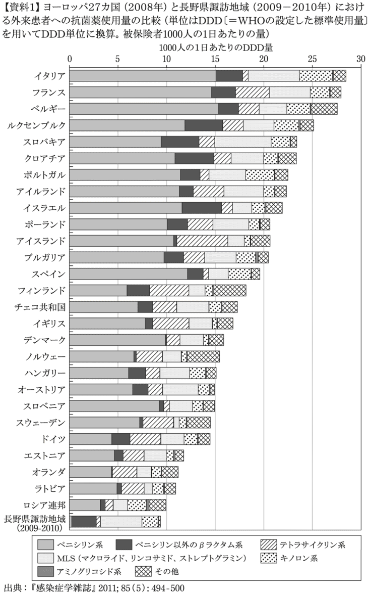
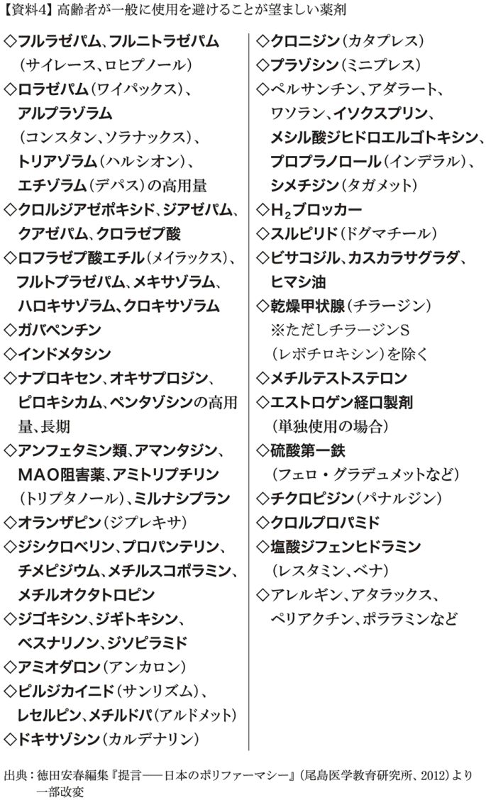

| ９９．９％が誤用の抗生物質～医者も知らないホントの話～ | |
| 岩田 健太郎 | |
| (2013) | |
その種類が何であるかを確かめずに、或る疾患を治療することは、決して行なってはならない。
（ジリベール「治療的無政府状態」より
出典 ミシェル・フーコー『臨床医学の誕生』
神谷美恵子訳・みすず書房・29頁）
本書を手にとっていただいたことに感謝します。岩田健太郎です。感染症を専門にしている医者です。
誤解のないよう、最初にお断りしておきます。本書は、「抗生物質なんか出す医者は、ダメ医者だ」、とか「医者に殺されるぞ」という脅しをかける本ではありません。抗生物質「そのもの」を悪者扱いするために書かれた本でもありません。
あるいは、抗生物質を使うこと「そのもの」が、あたかも「薬害」であるかのような主張をしたいわけでもありません。
そういう主張はセンセーショナルで、ある種の人々を満足させますが、ぼくがやりたいのは、「そういうこと」ではないのです。
抗生物質「そのもの」は価値中立的です。抗生物質は、他のすべての医薬品、あるいは医療行為同様、よくも悪くもないのです。
それは手術「そのもの」が、よくも悪くもないのと同じです。手術が不要な人に手術をしたり、手術を必要としている人に手術をしないのが、間違っているのです。
同様に、抗生物質が不要な人に抗生物質を飲ませるのは間違いです。抗生物質を必要としている人に抗生物質を使わないのも、やはり間違いです。それだけのことです。
繰り返します。抗生物質を使うこと「そのもの」は悪でも害でもありません。
問題は、その使われ方です。
残念ながら、世界中で抗生物質は間違って使われています。そして、日本においてもその間違え方は顕著です。
では、どこがどのように間違っているのか。なぜ、間違っているのか。それを明らかにすること。
その結果、みなさんが、正しいときに、正しく抗生物質の恩恵を受けることができるようになること。
これが本書の目指すところです。
ここでいう抗生物質は、「いわゆる」抗生物質のことです。細菌を殺す薬のことですね。抗生剤と呼ばれることもあるし、抗菌薬と呼ぶこともある。
抗生物質、抗生剤、抗菌薬は、学術的・専門的には微妙に意味が異なるのですが、一般のみなさんが気にするほどの違いではありません。ここでは「そういうもの」をひっくるめて、「抗生物質」と呼ぶことにします。とくに不都合はないはずです。
「いわゆる」抗生物質は、細菌という微生物を殺します。よって、細菌感染症の治療に用いられます。
しかし、現実には、細菌感染症以外の病気にも、抗生物質はしばしば使われています。
ひとつは、「予防のため」。
たとえば、かぜ。かぜは細菌感染症ではありませんが（※後述）、かぜをこじらせて肺炎（細菌感染症）になるといけない、というので、予防目的で抗生物質が使われてきました。
細菌感染かどうかよく分からない。けれども（よく分からないから）「見込み」で細菌感染症として治療してしまえ、という感じで抗生物質が使われることもあります。
でも、実際にはこういうとき、細菌感染症ではなかったりするのです。
なにしろ、細菌は小さくて肉眼で見ることができませんから、その存在を確認するのはそんなに簡単ではないのです。細菌感染症かどうかは確認できない。
でも、もしこの患者さんが細菌感染症で、放っておいたら死んでしまうかもしれない。こういう懸念、心配から、抗生物質が使われることがあるのです。
しかしながら、こういった抗生物質の使い方の多くは、間違った使い方なのです。そのことを本書で説明していこうと思います。
繰り返します。抗生物質は価値中立的で、よくも悪くもありません。しかし、抗生物質は無害なものでもありません。すべての抗生物質は人間に害を及ぼす可能性があります。
そこには４つのリスクがあります。
ひとつめは、「副作用のリスク」。
副作用の発生しない抗生物質は、（残念ながら）この世の中には存在しません。
皮膚にぶつぶつができる、下痢をするといった、比較的軽い副作用から、アナフィラキシーや不整脈のような、場合によっては命にかかわる重大な副作用まで、いろいろな副作用が、抗生物質を飲むと、（ある少ない確率で）起こってしまいます。
ふたつめは、「耐性菌発生のリスク」。
抗生物質は、「使いつづけていると効かなくなってしまう」という、困った性質を持っています。薬剤耐性菌が出現するためです。
抗生物質を使えば使うほど、その抗生物質は使いにくくなるのです。これは本質的なジレンマなのです。
耐性菌が増えると、その人が別の感染症を発症した時、治療が難しくなってしまいます。場合によっては治療が不可能になってしまいます。
また、その耐性菌が他の患者さんに伝播すると、その患者さんの治療も難しくなってしまいます。
みっつめのリスクは、「お金のリスク」です。
抗生物質も無料ではありません。お金を払わなければ手に入らないのです。
日本には素晴らしい医療保険制度がありますから、多くの患者さんは、抗生物質の料金を全額支払う必要はありません。３割とか、その程度の額で充分です。
しかし、そうはいっても費用は費用です。
たとえば、ザイボックス（一般名・リネゾリド）という抗生物質は、普通に使うと、１日で２万４千円以上のお金がかかってしまいます（本書執筆時点）。医療保険による恩恵で、３割負担となったとしても、１日７千円以上かかります。10日間飲んだら、７万円以上です。けっこうなお金ですよね。
それに医療保険だって、その原資は我々が支払っているのです。多くの方は、毎月、給料から差し引かれているので、気にしないだけです。医療保険は打ち出の小槌ではないのです。
現在、日本の医療費は、年間40兆円に届こうとしています。
もちろん、必要な医療に、ある程度お金がかかるのは仕方がありません。しかし、必要のない医療に、公的な（みんなの）お金を使うのは問題です。
残念ながら、抗生物質の多くは無駄に使われていますから、これは医療費の無駄遣いということになります。みんなのお金を溝に捨てているのです。
最後は、「ロジスティクスのリスク」です。
ロジスティクスとは、「物流」のことです。抗生物質も、使い過ぎるとなくなってしまったり、足りなくなってしまいます。
たとえば、インフルエンザの治療薬、タミフル（一般名・オセルタミビル）。
インフルエンザはウイルスで、細菌ではないので、タミフルは厳密にいうと、いわゆる「抗生物質」の範疇には入りません。でも、まあ感染症の治療薬ですから、その仲間には違いありません。
世界にあるタミフルの７割くらいが、日本で消費されているといいます。
２００９年に、インフルエンザが世界的に流行しました（パンデミック......いわゆる新型インフルエンザの世界的流行です）。このようなときに、必要のない人にまで無駄にタミフルをどんどん使ってしまうと、いつかはなくなってしまうかもしれません。
そうすると、本当にタミフルを必要としている病人や体の弱った方に、タミフルを供給できなくなってしまうリスクが存在します。ここでも、無駄遣いは問題で、上手に薬を使わなければならないのです。
繰り返します。抗生物質には４つのリスクが存在します。副作用のリスク、耐性菌発生のリスク、お金のリスク、そしてロジスティクスのリスクです。
この４つのリスクを理解して、そのリスクをはるかに上回るような利益が期待されるときに「だけ」、抗生物質の使用は正当化されるのです。
そのようなリスクと利益の天秤がけは、医療現場できちんとできているでしょうか。
残念ながら、そういう勘案は充分に行なわれているとはいえません。
リスクと利益をちゃんと天秤にかけ、患者さんに、リスクよりも大きな利益を提供するのが、プロとしての医者の務めだとぼくは思います。
本書は、科学文献的データをきちんと開示し、興味のある人は情報の出どころ（出典）もきちんと探すことができるようにしています。
多くの医療、健康に関する書籍が、情報の出どころをはっきりさせていませんが、それは大きな問題なのです。「こんなこと書いているけど、ホンマかいな」と思って調べようとしても、どこにその情報の出どころがあるのかが分からないことが多いのです。これが、日本の本屋さんで売っている医療、健康に関する本の実情です。
その多くは、「トンデモ本」です。情報の出どころがいい加減、曖昧なのが理由の１つです。このことをぼくは、『「リスク」の食べ方――食の安全・安心を考える』（ちくま新書）という本で指摘しました。
「こうやったら健康になれる」と宣伝する本の多くは情報の出どころを開示せず、大げさな話をして読者を喜ばせているだけの「トンデモ本」なのです。
本書に書かれている内容は、そんなに大げさなものではありません。抗生物質なんか飲むと死んでしまうぞ、と「脅し」をかける内容でもなければ、「抗生物質で幸せになれる」みたいな言い過ぎもしないように心がけていきます。
実際の研究データを引用していますので、必要があれば読者自身で、その内容を確認できます。
本書の内容の根拠となるデータの多くは、インターネットで入手することが可能です。読者のみなさんも、その気になれば、専門的な情報を入手できるのです。ネットの情報は「ガセ」も多いので、情報を正しく収集するのは簡単ではありませんが......。
ホントは、ウソ、大げさ、紛らわしい本にして、「抗生物質を飲んで医者に殺されるな」みたいなホラー調の本にしたほうが売れるんです。が、そういう所でプロとしての矜持を捨てたくないとぼくは思っています。
というわけで、本書では（ぼくがかつて書いた本同様）、英語の論文がたくさん紹介されています。「うっとうしいな」と思われる方もいるかもしれません。が、そういう理由ですのでどうぞご勘弁ください。
逆に、こういう元論文が明示されていない医療・健康本は、ほとんどが「トンデモ本」です。あまり読まないほうがよいとぼくは思います。
本書をお読みいただき、「抗生物質の４つのリスク」を上回る利益を、読者のみなさんに享受していただければ、このうえない喜びです。
それでは本編をお読みください。
かぜという病気があります。あまりにもよくある病気でみなさんにもおなじみです。
大人だと平均で、毎年２〜４回、子ども（未就学児童）だと、年間６〜10回くらい、かぜをひくそうです（J. Allergy Clin. Immunol. 1995 May; 95(5 Pt 2): 1133--8）。
では、そもそもかぜとは何か。
こういうシンプルな質問ほど、案外答えにくいものです。
厳密に定義するのは難しいのですが、「感染症によって起きる、急性の上気道感染症」で、テレビのＣＭが言うように、「くしゃみ、鼻水、鼻詰まり」、のどの痛み、頭痛、咳、微熱が出て自然に治ってしまうもの、という説明で、当たらずといえども遠からずだと思います。
手稲渓仁会病院の岸田直樹先生は、咳、鼻汁、咽頭痛（のどが痛い）の症状が、同じくらいのバランスで出ているものを、「典型的かぜ型」と称しました。これが「いわゆる」かぜだとぼくは思います。
また、岸田先生は、かぜの「バリエーション」として、他にも、咳がメインのもの、鼻症状がメインのもの、のど症状がメインのものに三分割し、それぞれへの対応を示しました。極めて実践的だと思います（岸田直樹『誰も教えてくれなかった「風邪」の診かた』医学書院、２０１２）。
さて、かぜに抗生物質を使うという診療行為は、世界的に行なわれています。これ、日本だけの問題ではないのですね。
ちょっと古いデータですが、アメリカでは１９９８年に、７６００万人の患者さんが、かぜのために外来受診をし、４１００万の抗生物質が処方されていました（Clin. Infect. Dis. 2001 Sep 15; 33(6): 757--62）。
アメリカでは近年になって、かぜに対する抗生物質の処方は減少傾向ですが、まだ充分とはいえません（MMWR. 2011 Sep 2; 60(34): 1153--6）。
ヨーロッパでは......、ヨーロッパ諸国は医療において一枚岩ではなく、各国で、抗生物質の使い方もバラバラです。
かぜにはほとんど抗生物質を使わない、オランダやドイツのような国もあれば、半数近くに抗生物質を処方していた、スペインのような国もあります（J. Infect. 2000 Jul; 41(1): 73--83）。
一般的には、ヨーロッパは「北高南低」と申しましょうか、北のほうの国のほうが抗生物質の使い方には慎重で、南の、地中海沿岸の国では、抗生物質が乱用される傾向にあります。
アジア各国での抗生物質使用については、正確なデータをぼくは持っていません。が、医療制度が整備されていない国も多く、処方箋なしで薬局で抗生物質を買える国も多いです。こういう国では抗生物質が乱用される傾向にあります。
ぼくは２００３年から２００４年にかけて、中国の北京に住んでいましたが、そのときはまだ、薬局の窓口で抗生物質を売っていました。日本と違い、処方箋なしで、だれでも抗生物質が買えたのです。
『人民網日本語版』２０１２年５月９日（http://j.people.com.cn/94476/7812490.html 閲覧日・２０１３年３月21日）によると、中国でも現在では、抗生物質の使用に厳格なルールを適用させているみたいで、現在は当時とは随分違うのかもしれません。
同じく『人民網日本語版』２０１１年10月19日の「抗生物質の乱用が中国人の健康に危害をもたらす（２）」では、上海交通大学医学院付属瑞金医院の朱正綱院長のコメントが載っています（http://j.people.com.cn/95952/7620902.html 閲覧日・２０１３年３月21日）。
彼によると、
「臨床医の中には自分の専門の知識と技能にばかりに目をむけ、全面的で系統だった抗菌剤の知識と適切な薬剤使用知識に欠けている人が多い。このため、病因の検査を重視せず、過去の経験に頼る薬剤使用が習慣化している。また一部の医者は、抗菌剤による治療効果の特徴を重視せず、勝手に薬剤の使用法を決めており、一部の医者は各抗菌剤の不適切な使用によりもたらされる可能性のある（またはすでにもたらされた）危害に対する認識に欠ける。さらには、予防的抗菌薬投与の範囲と時間を拡大し、手術の前後に長時間にわたり大量の抗菌薬を投与する医者までいる」
だそうです。日本だけでなく、抗生物質の不適切使用の問題は、世界的なのですね。
さて、では日本では、かぜにどのくらい抗生物質が処方されているかというと、これについて充分な調査はされていません。
東北大学の具芳明先生によると、長野県諏訪地域において、外来での抗菌薬総使用量は、フランスやイタリアといったヨーロッパ各国の調査に比べて少なかった、という調査結果が出されています（『感染症学雑誌』2011; 85(5): 494--500）。
ここから推測すると、日本における抗生物質の使い方は、海外に比べ、「案外」悪くないという考え方も可能です（資料１）。

しかし、この調査は、ＤＤＤという抗菌薬（抗生物質）「使用量」を基準にした調査です。
伝統的に日本では、投与量を少なめにして、治療効果を下げてでも副作用を少なくしようという処方の仕方がなされてきました。したがって、一人ひとりに対する抗生物質の処方「数」が多くても、抗生物質の総量そのものは少なめに出てしまうのです。
それに、これは諏訪地区だけの調査ですから、たまたま偶然、諏訪の医者たちが優秀で、抗生物質を無駄遣いしていなかった可能性もあります。
というわけで、確たるデータはないものの、全国各地の診療実態を観察したぼくの実感からいうと、日本でも多くの医者は、今でもかぜに抗生物質を処方していると思います。
では、かぜには抗生物質が必要なのでしょうか。言い換えるのならば、かぜに抗生物質を使うと、患者さんは得をするのでしょうか。
副作用のリスク、耐性菌発生のリスク、お金のリスク、ロジスティクスのリスクという、４つのリスクを上回るような利益を得るのでしょうか。
かぜに抗生物質を使うか否かについて、ある医師向けのウェブサイト上で議論がなされました。２人の医者が持論を展開し、１人は「かぜに抗生物質は積極的に使うべき」、もう１人は「使うべきではない」という主張をしていました。
さて、２人の主張の根拠は、簡単にいうと、こういうものです。
「かぜに抗生物質を使うべきだ」という主張をする医者の論旨は、
「かぜでも、じつは細菌が原因のことがある。だから抗生物質を使うべきだ」
というものでした。
これに対して、「かぜに抗生物質を使うべきではない」という主張をする医者の論旨は、
「かぜの大多数の原因はウイルスだ。だから抗生物質は必要ない」
というものでした。
ウイルスとは、細菌よりも小さな微生物のことです。インフルエンザの原因であるインフルエンザウイルスも、（名前が示すように）ウイルスです。
細菌とウイルスの違いを学問的に説明するのは、そんなに簡単ではないのですが、非常に分かりやすく（やや乱暴に）まとめてしまえば、抗生物質で殺せるのが細菌、殺せないのがウイルス、という説明で、だいたいよいと思います（微生物学者の先生はお怒りかもしれませんが......）。
さて、この２人の議論です。いったいどちらが「正しい」意見なのでしょう。
ぼくの意見は、
「かぜには抗生物質を使わなくてよい。でも、それはそれとして２人とも間違っている」
です。
ぼくの意見では、２人とも、最初から議論の「前提」が間違っていると思うのです。
言い換えるならば、２人とも、議論の方法が19世紀的、20世紀的なのです。21世紀の現在には通用しない議論の仕方なのです。
では、２人の議論の方法はどこが間違っていたのでしょう。
かぜは病気です。あたりまえですね。
病気は、咳が出たり、くしゃみが出たり、だるかったりという「現象」です。ぼくら医者も、この「現象」、つまり「コト」である病気がよくなることを、目標としています。
一方、件の２人の医者たちは、原因微生物、つまり「モノ」に基盤をおいて議論をしています。
「細菌も原因になるのだから、抗生物質を使おう」も、「ウイルスがほとんどなのだから、抗生物質はいらない」も、異なる主張をしていますが、「モノ」を基盤にして議論しているという一点においては、まったく同じなのです。
でも、繰り返しますが、ぼくらの治療のターゲットは、あくまでも「コト」である病気です。「モノ」たる微生物ではありません。ここで、こんがらがってはいけないのです。
だから、ぼくは、かぜの原因が細菌か、ウイルスか、という議論そのものから少し距離を置きたいのです。そこは本質的な問題ではないのです。
要は、かぜの患者に抗生物質を飲ませたほうが、「コト」たる病気によいことがあるか、が問題です。
では、「かぜ」に抗生物質を出して、なにかよいことがあるのでしょうか。
副作用のリスク、耐性菌発生のリスク、お金のリスク、ロジスティクスのリスク――を凌駕するような、大きな利益が。
どうやったら、このような問いに答えることができるでしょう。
それは、実際に患者さんを対象にした臨床試験をすればよいのです。かぜの患者さんを２つに割って、抗生物質を「飲む群」と「飲まない群」に分けて、比較すればよいのです。
そのようなデータは果たして存在するか。
じつは、あります。
２００５年に、イギリスのコクランセンターが、かぜに対する臨床研究を集めてまとめています。大人においても子どもにおいても、かぜに抗生物質を出した群と、出さない群を比較したとき、症状の改善には差が見られませんでした。
また、大人の場合は、抗生物質を出されたほうが、倍以上、副作用が出る確率が高かったのです（あたりまえといえばあたりまえですが......！）（Cochrane Database Syst. Rev. 2005; (3): CD000247）。
また、２００６年に発表されたメタ分析（臨床研究のまとめ）では、抗生物質はかぜの症状を抑えるのに、少し、役に立つが、薬の副作用に苦しむ人が増えてしまう、という結論でした。その副作用の多くは、腹痛や下痢などのお腹の症状でした（BMJ. 2006 Aug 5; 333(7562): 279）。
しかし、副作用のなかには、心臓に影響を与え、死をまねくものなど、おそろしいものもあることが明らかになっています。この点については、第５章で詳述します。
さて、抗生物質がかぜの症状を抑える効果が「ある」か「ない」か、二元論的な議論をすれば、まだ完全な決着はついていません。「ない」というデータと、「ある」というデータが混在しています。
しかし、研究によって結論が異なること「そのもの」が示唆的です。つまり、その意味するところは、抗生物質がかぜに効果があるのかないのかは、はっきりは分からないが、たとえあったとしても、その効果は「ほんのちょびっと」だ、ということだからです。
二次性の肺炎を減らしてくれる、という、よく抗生物質を使う「理由」として使われることを示唆するデータ......こうした臨床的に重要なエビデンスは、ほとんど皆無なのです（２０１３年に抗生物質の使用が肺炎入院を減らす、という研究が発表されましたが、１人の入院を減らすのに、なんと１万２千人以上に抗生物質の投与が必要でした。割に合っていません。Ann. Fam. Med. 2013; 11: 165--72）。抗生物質には効果が「ある」というデータですら、所詮、「鼻水が出にくくなる」といった、小さな利益だけなのです。
そしてそんな小さな利益（鼻紙で鼻をかめばいいだけの話）は、抗生物質の「４つのリスク」を考えると、割に合わないのです。
「かぜに抗生物質を出すか、出さないか」の命題は、「抗生物質が効くか、効かないか」という議論ではなく、「どのくらい効くか」、「４つのリスクを凌駕するくらい効くか」という命題の立て方をしなければいけないのです。
抗生物質をかぜにおいて使用した場合、非常に微々たる「ちょびっと」な利益しか提供しません（もしあるとしても）。それでは、生じるリスクとのバランスがとれません。
よって、かぜには抗生物質は使わないほうがよいのです。その原因微生物が細菌であろうが、ウイルスであろうが、関係ないのです。
したがって、多くの国では「かぜで抗生物質を飲ま（せ）ないよう」、医者にも患者さんにも薦めています。
アメリカの疾病予防対策センター（ＣＤＣ）は、ウェブサイトで、「賢くなりましょう。抗生物質が効くのがいつかを知りましょう」というキャンペーンをはって、かぜには抗生物質は効きませんよ、無意味な抗生物質を使うのをやめましょうよ、と訴えています（CDC. Get Smart: Know When Antibiotics Work http://www.cdc.gov/getsmart/antibiotic-use/know-and-do.html 閲覧日・２０１３年３月22日）。
イギリスでは、国民医療サービス（ＮＨＳ）が、「かぜにルーチンで抗生物質を処方してはいけません。ほとんどのかぜはウイルスが原因で、抗生物質に反応することは期待できません。もしかしたら抗生物質が膿性鼻汁（鼻水）には効くかもしれないけれど、この症状は通常自然によくなるものです。（いずれにしても）初診の段階では投与してはいけません」と推奨しています（NHS evidence. Clinical Knowledge Summaries. http://cks.nice.org.uk/common-cold#!supportingevidence 閲覧日・２０１３年７月14日）。
フランスは、「南のほうの」ヨーロッパの国で、従来、抗生物質をバンバン出す国として有名でした。
しかし、２００２年に抗生物質を無意味に使わないキャンペーンを大々的に展開し、かぜなどには抗生物質を出さないよう、強く国民と医療界に推奨しました。
その結果、５年間で、抗生物質の処方が25％も減ったのです（WHO. Are antibiotics still"automatic" in France? http://www.who.int/bulletin/volumes/89/1/11-030111/en/index.html 閲覧日・２０１３年３月22日）。
日本でも、小児外来診療における抗菌薬適正使用のためのワーキンググループが、「小児上気道炎および関連疾患に対する抗菌薬使用ガイドライン」を作成し、かぜ（ここでは感冒と称されている）に抗生物質は不要であると明記しています（http://www004.upp.so-net.ne.jp/ped-GL/GL1.htm 閲覧日・２０１３年３月22日）。
しかしながら、厚生労働省、日本内科学会、日本感染症学会、日本小児科学会、日本プライマリ・ケア連合学会など、主要な関連学会が、このような提言、ガイドラインを発表したという事実はないようです。
国をあげてかぜ診療の改善を目指しているアメリカ、イギリス、フランスなどと比べると、彼我の差は明らかです。
先ほど紹介した『人民網日本語版』の記事を考えると、早晩、中国などアジア諸国にも追い抜かれてしまうかもしれません。
さて、このように、日本の医療現場で抗生物質が乱用されている背景には、日本の感染症診療が、古い時代の考え方にもとづいて行なわれているという問題があります。
それでは、古い時代における感染症診療と、今この時代、21世紀に行なわれるべき感染症診療との違いとはなんでしょうか。
次章で見ていきましょう。
・抗生物質の不適切使用は、日本だけでなく、世界的な問題である。
・かぜの治療のターゲットは、「モノ」たる微生物ではなく、「コト」（現象）たる病気のほうであり、そこをこんがらがらせてはいけない。
・かぜに抗生物質を出しても、症状の改善には差がない。
・抗生物質が二次性の肺炎を減らすというデータも皆無。
・諸外国では、かぜに抗生物質を使わないようなキャンペーンが行なわれているが、日本ではそのような動きはほぼない。
さて、抗生物質といえば、おもに細菌を原因とする感染症に使われるものだ、ということをすでにお話ししました。この「感染症」に対する考え方ですが、日本においては、じつはいまだに、19世紀、20世紀のそれを踏襲しています。21世紀の現在では、それはすでに通用しない論理なのです。
では、19世紀型、20世紀型の感染症診療とは、いったいどんなものでしょうか。
世界３大感染症というものがあります。それはマラリア、結核、エイズです。いずれも世界で毎年１００万人程度の命を奪う、おそろしい感染症です。
最近、マラリア対策はわりとうまくいっていて、死者数は年間65万人程度まで低下しましたが、それでもおそろしい感染症であることに変わりはありません（WHO. World Malaria Report 2011 http://www.who.int/malaria/world_malaria_report_2011/burdenestimatesbriefing2011.pdf 閲覧日・２０１３年３月21日）。
さて、これらの３大感染症とは別に、最近注目されている感染症があります。３大感染症同様、いずれもやはり毎年１００万人以上の命を奪っている感染症なのです。いったい、なんだか分かりますか。
それは、呼吸器感染症......つまり肺炎と、下痢症......つまり腸炎です。
肺炎とか腸炎なんて古い病気が、なんでそんなに人命を奪うのか？ そうお考えの方もいるかもしれません。そんなに人命を奪うんです。
人間の体の70％は水でできています。下痢症というのは、ようするに、この水をどんどん奪っていく病気です。人体最大の構成成分そのものを奪っていく病気ですから、死亡のリスクだって決して低くはありません。
とくに、小さいお子さんや高齢者にとって、下痢症は重大な病気になることがあります。下痢症対策を懸命に行なっている世界保健機関（ＷＨＯ）は、したがって、子どもに重大な下痢症を起こすロタウイルスのワクチン接種を、世界のすべての国で行なうよう、推奨しています（WHO. Global use of rotavirus vaccines recommended. http://www.who.int/mediacentre/news/releases/2009/rotavirus_vaccines_20090605/en/index.html 閲覧日・２０１３年３月21日）。
日本でも、日本小児科学会は、ロタウイルスワクチン接種を推奨していますが、残念ながら、このワクチンは本書執筆時点で定期接種にはなっておりません（http://www.jpeds.or.jp/saisin/saisin_110427.pdf 閲覧日・２０１３年７月15日）。
高齢者では、たとえば冬場のノロウイルスによる腸炎が危険です。ノロウイルスはロタウイルスと違い、残念ながら有効なワクチンが開発されていません。有効な治療薬も存在しません。施設で流行して高齢者が死亡するケースがあとを絶ちません。
下痢症はこのように、先進国でも死亡のリスクです。
しかし、とくに問題なのは、途上国です。
下痢症は体の水分を奪う病気です。ですから下痢症の治療の根幹は、「失った水分の補給」です。
しかし世界には、清潔な水が手に入らない国、上水道、下水道すら完備されていない国も多いのです。こういう場所では、下痢症にかかっても、適切な治療を提供できないのです。
というか、日本だって、上下水道が完備されたのはわりと最近の話です。ぼくは島根県の出身ですが、小学生の時、水道の蛇口から出てくるのは井戸水でしたし、排泄物は肥汲みですくって、畑の肥料にしていました。多感な思春期に、肥やし汲みの作業を友達に見られるのは恥ずかしかった！
Wikipediaによると、ぼくが小学生だった１９８０年、下水道の普及率はたったの３割だったそうです（http://ja.wikipedia.org/wiki/ 下水道 閲覧日・２０１３年３月21日）。
そんなわけで、下痢症ってとても怖い病気なんです。21世紀の現在でも。
肺炎もおそろしい病気です。
今、病気というと、がんとか心筋梗塞を思い浮かべる人が多いと思います。たしかにがん（悪性新生物）は日本人の死因の第１位。第２位が心臓病です。
しかし、その後にくる第３位の死亡原因が、肺炎なのです（厚生労働省・人口動態調査平成23年 http://www.mhlw.go.jp/toukei/saikin/hw/jinkou/kakutei11/dl/10_h6.pdf 閲覧日・２０１３年３月21日）。
さて、世界３大感染症のマラリア、結核、エイズと、古くて新しい問題である下痢症や肺炎には大きな違いがあります。それが、19世紀、20世紀の感染症診療と、21世紀のそれとの違いです。
どういうことでしょうか。
マラリアの原因は「マラリア原虫」という微生物です。結核の原因は「結核菌」という細菌で、エイズの原因は「ＨＩＶ」というウイルスです。
ここで大切なのが、感染症の原因は病原微生物ですが、病原微生物は、病気「そのもの」ではないということです。タバコは肺がんや心筋梗塞の原因ですが、タバコ「そのもの」が病気でないのと同じです。
しかし、従来の感染症の世界では、病原微生物と、それが引き起こす病気がゴチャゴチャになっていました。そして、そのゴチャゴチャがあまり認識されてこなかったのです。
19世紀、20世紀型の感染症対策は、そのまま「原因微生物対策」でした。結核対策は、「結核菌対策」とほぼ同義でしたし、マラリア対策は「マラリア原虫対策」とほぼ同義でした。エイズ対策とは、「ＨＩＶというウイルス対策」のことでした。
したがって、結核専門家は、「結核菌の専門家」であり、マラリアの専門家は......以下同文です。
このような古い世界観では、「コト」である病気＝感染症と、「モノ」である病原微生物が、微妙にかぶっているのです。
本来であれば、後者は前者の原因に過ぎず、病気「そのもの」ではないのですが、なんとなく、病気そのものであるかのような擬態をとっています。
したがって、結核というべきところを「結核菌」と言い間違えたからといって、話がおかしくなることはなかったのです。病気と病原体の言い間違え、病気と病原体の混同は、このようにして普遍的に起きていたのです。
そして、その時代は、感染症という「コト」は、微生物学者という「モノ」の専門家の守備範囲だったのです。それでもよかったのです。
一般には、患者を実際に診察することがない微生物学者ですが、「コト」を目の前にしなくたって、その原因である「モノ」、つまりは病原微生物を十全に知り、研究する微生物学者であれば、感染症対策の主役であり得たのでした。
抽象的な説明が続きましたので、具体的に、この問題がどのように現場に影響を与えているか、事例を１つ挙げましょう。
厚生労働省は、医師になったばかりの卒後初期研修の到達目標を掲げています。
その「経験すべき症状・病態・疾患」において、感染症は次のようになっています。
（14）感染症
［１］ウイルス感染症（インフルエンザ、麻疹、風疹、水痘、ヘルペス、流行性耳下腺炎）
［２］細菌感染症（ブドウ球菌、ＭＲＳＡ、Ａ群レンサ球菌、クラミジア）
［３］結核
［４］真菌感染症（カンジダ症）
［５］性感染症
［６］寄生虫疾患
厚生労働省ＨＰより（http://www.mhlw.go.jp/topics/bukyoku/isei/rinsyo/keii/030818/030818b.html 閲覧日・２０１３年３月21日）
さて、お分かりでしょうか。「ウイルス感染症」のところには、カッコ付きで例が挙げられており、「インフルエンザ、麻疹、風疹、水痘、ヘルペス（この意味するところはやや不明。口唇ヘルペスの意味？ 陰部ヘルペス？ だとすると後の性感染症とかぶりますが）、流行性耳下腺炎」となっています。いずれも「病気の名前」です。
ところが、［２］の細菌感染症のところでは、「ブドウ球菌、ＭＲＳＡ、Ａ群レンサ球菌、クラミジア」となっています。これらはすべて「病原微生物の名前」であり、病名ではありません。
厚生労働省も（そしてこの表を作った専門委員のどなたかも）、混乱しまくっているのです。というか、そもそもＭＲＳＡってブドウ球菌の一種だし（ＭＲＳＡは正式名称「メチシリン耐性黄色ブドウ球菌」、methicillin resistant Staphylococcus aureusの略）。
厚生労働省の到達目標を読むたびに、この国では本当に、感染症に対して無理解が蔓延しているのだな、と思わず嘆息してしまいます。そして、ミシェル・フーコーが紹介した古代中国の百科事典を思い出します。そこでは動物は次のように分類されています。
ａ）皇帝に属するもの
ｂ）香の匂いを放つもの
ｃ）飼いならされたもの
ｄ）乳呑み豚
ｅ）人魚
ｆ）お話に出てくるもの
ｇ）放し飼いの犬
ｈ）この分類自体に含まれているもの
ｉ）気違いのように騒ぐもの
ｊ）算えきれぬもの
ｋ）駱駝の毛のごく細の毛筆で描かれたもの
ｌ）その他
ｍ）いましがた壷をこわしたもの
ｎ）とおくから蝿のように見えるもの
（ミシェル・フーコー『言葉と物――人文科学の考古学』13頁より
渡辺一民、佐々木明訳 新潮社 １９７４）
なかなか、面白いでしょう。こういう分類も、ちょっと味わいがあって素敵ですが、実際の動物学的には困りますよね（だいぶかぶってるし）。
このように、異質な思考の枠組みを、ミシェル・フーコーは「エピステーメー」と呼びました。病気と病原体の混在も、「現象」と「現象の原因」、いわばコトとモノの混在ですからおかしいのですが、フーコー的、構造主義的寛容をもってすれば「そういうのもあり」といえるかもしれません。
さて、話を戻します。このように、感染症という病気とその原因たる微生物との混同は、あちこちで起きています。
19世紀、20世紀の感染症の考え方では、このような混同はそれほどの不都合を起こしませんでした。コトたる病気、モノたる微生物が、１対１で対応していたので、気にする必要などなかったのです。
しかし、21世紀にＷＨＯが問題にしている、肺炎や下痢症についてはどうでしょう。
肺炎と置換すべき微生物とは何でしょう。下痢症についてはどうでしょう。これらの対策に、どの菌を専門にする、どの微生物学者を招聘すればよいのでしょう。
そう、そんな微生物学者は存在しないのです。そのような古典的な「１対１対応」が通用しないのが、21世紀の感染症の考え方なのです。
肺炎の原因微生物は千差万別。
「ふつうの」肺炎は細菌が起こしますが、これとて肺炎球菌、インフルエンザ菌、モラキセラ・カタラーリス、マイコプラズマ、クラミドフィラ、レジオネラと多種多様です（たくさん菌の名前がでてきて、もううんざり、という読者の方も多いでしょうが、もう少しご辛抱ください）。
これに「院内肺炎」と呼ばれるカテゴリーが加わると、病院内の微生物、とくに耐性菌が加わり、話はどんどんややこしくなります。
細菌だけでなく、インフルエンザウイルス、ＲＳウイルスといった、ウイルスも肺炎の原因になります。
また、過敏性肺臓炎や間質性肺炎のように、感染症ではない病気で肺炎になることもあります。
下痢症も同様です。大腸菌やサルモネラ、カンピロバクターのような細菌が下痢の原因になることもあれば、ノロウイルスやロタウイルスのようなウイルスが原因になることもあります。
アメーバやジアルジアといった寄生虫が原因になることもあります。
安倍首相（本書執筆時）は、潰瘍性大腸炎をお持ちだそうですが、あれは感染症ではない下痢の原因です。
お分かりでしょうか。21世紀の現在、もはやかつてのように、結核≒結核菌のような、のんびりしたモノとコトとの混同は許容されません。我々は、「コト」である病気と「モノ」である微生物をきっちり区別して、「別なもの」として語らねばならないのです。
モノたる原因微生物は、21世紀の今でも、微生物学者の守備範囲になります。しかし、「コト」たる感染症＝病気のほうは、ぼくたち臨床医――「実際に患者を診察する医者」の守備範囲でなければならないのです。
ではなぜ、「モノ」である微生物の知識だけでは、「コト」たる病気に対応できないのでしょうか。
たとえば、肺炎球菌という細菌があります。学名で言うとStreptococcus pneumoniaeと書きます。名前のとおり、肺炎の原因として有名ですが、急性中耳炎、急性副鼻腔炎といった小規模な感染症も起こしますし、命にかかわるおそろしい感染症、細菌性髄膜炎の重大な原因菌でもあります。
さて、従来の、20世紀までの感染症の世界では、肺炎球菌は、抗生物質のペニシリンが効くものと効かないもの（そしてその中間の微妙なもの）に分類されていました。
実験室の中で、ペニシリンで死ぬ肺炎球菌を「ペニシリン感受性肺炎球菌」、死なない菌を「ペニシリン耐性肺炎球菌」と呼びました。前者は英語で書くと、penicillin sensitive Streptococcus pneumoniae、後者はpenicillin resistant Streptococcus pneumoniaeとなります。略してＰＳＳＰ、ＰＲＳＰと書くことが多いです（ピーエスエスピー、ピーアールエスピーと呼びます。ス○ー・ウォーズに出てくるロボットみたいですが）。
で、ペニシリンが効くＰＳＳＰの治療薬はペニシリン、そうでないＰＲＳＰはペニシリンよりも新しい、もっといろいろ殺せる抗生物質を使いましょう、というふうになっていたのです。
ところが、21世紀の感染症医療はこれではいけません。
２００８年、肺炎球菌の分類が大きく変更になりました。病原性微生物に対する抗生物質のブレイクポイント（効くか、効かないかの分水嶺）を設定している、「ＣＬＳＩ」（臨床・検査標準協会）という国際的な組織が、肺炎球菌の分類法を大きく変えたからです。
まず、ＣＬＳＩは、「どこに」起きている感染症か、で肺炎球菌の「分け方を分け」ました。
具体的には、肺炎か、髄膜炎（頭の感染症）か、で分類の仕方を区別するようになったのです（IDSA news. Penicillin's Back: FDA Raises Breakpoints for S. pneumoniae Pneumonia http://news.idsociety.org/idsa/issues/2008-04-01/11.html 閲覧日・２０１３年３月22日）。肺炎を起こしている肺炎球菌と、髄膜炎を起こしている肺炎球菌は、「別のものとして議論しましょうね」と言い出したのです。
これまでの肺炎球菌の分類は、あくまで実験室の中での肺炎球菌のふるまいだけで分類されていましたから、「どこの」部位に起きている感染症か、という点はまったく気にされませんでした。
ですから、変更後のそれは、「患者の体の中」を顧慮した分類であり、実験室を離れた分類でした。考え方の大きな変更といえましょう。
では、なぜこのようなややこしい分類基準の変更をしたのでしょう。
それは、「人間の体の中で起きていること」と「実験室の中で起きていること」は必ずしも同じではないからです。
たとえば、ペニシリン耐性肺炎球菌（ＰＲＳＰ）。
実験室では、ＰＲＳＰはペニシリンで死にません。ですから、「ＰＲＳＰにはペニシリンを使うな」という話になっていたのです。直感的には、「そりゃ、そうだ」と思いますよね。
が、なんとびっくり。実際の肺炎患者さんにペニシリンを使って治療すると、ＰＲＳＰはちゃんと死に、患者さんは治ることが分かったのです。実験室では起きなかった現象が、人体の中では認められるのです。
まさに、「人間の体の中」と「実験室」は別物なのです。
現在、神戸大学病院で見つかる肺炎球菌は、全例、「ペニシリンで肺炎を治せる肺炎球菌」であることが分かっています。従来のＰＳＳＰ、ＰＲＳＰといった分類は、臨床現場では意味をなさないのです。
さて、これが「髄膜炎を起こしている」肺炎球菌だと、話が違ってきます。
肺炎球菌が起こす肺炎には、ペニシリンが有効な抗生物質です。従来のＰＳＳＰであっても、ＰＲＳＰであっても（基本的には）関係ありません。
しかし、残念ながら、髄膜炎を起こしている肺炎球菌には効かないことが多いのです。
どうしてかというと、ペニシリンは、頭に行く前に、血液脳関門（blood-brain barrier）と呼ばれるブロックにあって、通過しにくいからなのです。肺炎のときに比べると、ほんの少量のペニシリンしか頭に届きません。
今でも、ペニシリンで治療できる肺炎球菌もあるのですが、少なからぬ肺炎球菌が「髄膜炎については」ペニシリンで治療することができないのはそのためです。
したがって、ぼくらが肺炎球菌による髄膜炎を治療するときには、よくセフトリアキソンと呼ばれる抗生物質や、バンコマイシンと呼ばれる抗生物質を選択することが多いのです。
ペニシリンは、１９２８年にアレクサンダー・フレミングというイギリス人が発見した、古い古い抗生物質です。そんな古い抗生物質が今でも臨床現場で使える、ということ自体、驚きですね。
ペニシリンは１９４０年代くらいから、臨床現場で使われるようになりましたが、「使っていると使えなくなる」の法則のとおり、だんだん耐性菌が増えて、効かない菌が増えてきました。セフトリアキソンとかバンコマイシンは、こういう耐性菌にも効果を示す、後発の抗生物質です。
限定的な細菌にしか効果がないペニシリンのような抗生物質を、「選択肢が狭い」という意味で、「狭域な」抗生物質なんて呼ぶことがあります。
セフトリアキソンとかバンコマイシンは、幅広くいろいろな細菌に効くので、「広域な」抗生物質と呼ぶことがあります。
まあ、狭域とか広域というのは、あくまでも「程度」の問題でして、「どのくらい」という概念が大事です。１か０か、のデジタルな分類で、「狭域」「広域」のどちらかに真っ二つに分けることはできません。
セフトリアキソンでも殺せないＭＲＳＡを、バンコマイシンは殺すことができますが、バンコマイシンでも殺せないＶＲＥ（バンコマイシン耐性腸球菌）という菌もいます。
このＶＲＥは、たとえば、リネゾリドという抗生物質なら殺すことができます。１日２万円以上する、無茶苦茶高価な抗生物質でしたね（「抗生物質の４つのリスク」参照）。ＭＲＳＡとかＶＲＥとかＰＲＳＰとか、慣れていないと、新手のプロレス団体みたいでややこしいです。菌名はアルファベットで略すことが多いのですね。
そして、まるで80年代の『週刊少年ジャンプ』に出てくるキャラクターみたいに、強いキャラの上にはさらに上がいて、「広域な」抗生物質もどんどんインフレ状態になっていきます（ドラ○ンボールとか、キ○肉マンとか、北○の拳とか......古くてすみません）。
近年、薬剤耐性菌が増加していくなかで、抗生物質はどんどん「広域化」していったのです。
ところで、ぼくはさっき「狭域」「広域」な抗生物質はあくまで程度問題なので、上には上がいると書きました。アナロジーとして、『週刊少年ジャンプ』の世界にたとえて、強いキャラのさらに上に、もっと強いキャラがいる、という言い方をしました。
じつをいうと、このようなアナロジーは、あまり適切ではありません。ちょっとここで訂正しておこうと思います。
というのは、「広さ」と「強さ」は別物だからです。
「広さ」というのは、いろいろな菌を殺すことができる、という概念を指します。ペニシリンで殺せない菌をセフトリアキソンが殺せる、セフトリアキソンが殺せない菌をバンコマイシンが殺せる、バンコマイシンが殺せない菌をリネゾリドが殺せる、という具合です。
では、バンコマイシンはペニシリンより「強いか」といわれると、じつはそうではないのです。
もし、ペニシリンで殺すことができる菌を対象にするなら、ペニシリンが菌を殺す力は、バンコマイシンが殺す力より強いのです。ペニシリンがバンコマイシンより「劣った」抗生物質なのではありません。
たとえてみれば、「狭域」と「広域」の違いは、異なるピッチャーの投げる球種の違いみたいなものです。「狭域」な抗生物質は直球ストレートしか投げられませんが、「広域」な抗生物質はカーブもシュートもフォークもツーシームも投げちゃいます。
しかし、直球ストレートしか投げることができなくても、「球威」「球速」はものすごい。こういう豪腕ピッチャーがペニシリンで、クセ球をたくさん投げることができる（が球は遅い）のがバンコマイシンと考えると、理解しやすいでしょう。
したがって、「ペニシリンとバンコマイシンはどちらがよりよい抗生物質か」......この命題には答えることはできません。なぜなら、両者には優劣はないのです。適材適所があるだけだからです。「ホームラン・バッターと、打率のよいバッター、どちらがよい選手か」と問うようなものです。
ペニシリンが効く菌による感染症なら、より強力なペニシリンのほうが、バンコマイシンよりもベターでしょう。ペニシリンが効かない薬剤耐性菌に対してなら、より広域なバンコマイシンを選択するのが、よりよい選択ということになるかもしれません。
ぼくはよく、「岩田先生のお気に入りの抗生物質ってなんですか」という質問を受けます。ぼくにはお気に入りの抗生物質も、毛嫌いしている抗生物質もありません。眼の前にいる患者さんにベストな薬を、選びたいだけです。
そして、どれがベストな抗生物質かは、ケース・バイ・ケースです。ここでも抗生物質は価値中立的です。それぞれの抗生物質には優劣はなく、ただただ、適材適所的な役割分担があるだけなのです。
さて、これまで見てきたように、「肺炎球菌にはこの抗生物質」という言い方は、もうできません。肺炎球菌が髄膜炎（頭の感染症）を起こしているのか、肺炎を起こしているのかによって、治療薬の選択が異なってくる可能性が高いからです。
さらに驚きの事実があります。
肺炎球菌は、急性中耳炎（鼓膜の奥にあるスペースの炎症）とか、急性副鼻腔炎（鼻の周りにある骨の空洞に起きる炎症）の原因にもなります。では、こういう比較的小さな感染症は、どのような抗生物質を使って治療するのでしょうか。
じつは、「抗生物質は使わない」が原則なのです。
多くの急性中耳炎も、急性副鼻腔炎も、抗生物質なしで自然に治ってしまいます。重症だったり、症状が長引く場合は、例外的に抗生物質を使いますが、そうでない場合は、対症療法と呼ばれる痛み止めなどの治療でＯＫなのです。
急性中耳炎は子どもに多い病気です。第１章でもご紹介した、「小児外来診療における抗菌薬適正使用のためのワーキンググループ」がガイドラインを出しており、これもネットで無料で読むことができます（http://www004.upp.so-net.ne.jp/ped-GL/GL1.htm 「急性中耳炎」の項 閲覧日・２０１３年３月22日）。
ここでも「基本方針 48〜72時間は対症療法のみによる経過観察とする。48〜72時間後に発熱や耳痛などの症状の改善がなければ抗菌薬の投与も選択肢とするが、抗菌薬を投与しない場合には注意深い経過観察を続ける。また、経過観察中でも、症状の悪化がみられたときはできるだけ速やかに診察を行う」と書いてあります。
小児の急性中耳炎には、抗生物質は原則必要ないのです。
急性中耳炎は、耳鼻科の先生がよく診る病気でもあります。日本耳科学会、日本小児耳鼻咽喉科学会、日本耳鼻咽喉科感染症・エアロゾル学会による『小児急性中耳炎診療ガイドライン』があります（２０１３年 金原出版）。
こちらは残念ながら有料です。こちらでも、軽症例、３日以内に改善する場合は、抗生物質を使わないよう推奨しています。
大人の急性中耳炎については、抗生物質を使うべきか使わないべきか、データが充分でないために見解が割れています。こちらは未解決領域でしょうか。
急性副鼻腔炎については、感染症界における権威ある学会、アメリカ感染症学会（ＩＤＳＡ）が、２０１２年に診療ガイドラインを出しています。
高熱などの強い症状、10日以上の症状持続、それからどんどん悪くなっていく副鼻腔炎には抗生物質を使いますが、軽い症状のものには抗生物質が推奨されていません（IDSA Clinical Practice Guideline for Acute Bacterial Rhinosinusitis in Children and Adults. Clin. Infect. Dis. [Internet]. 2012 Mar 20; http://cid.oxfordjournals.org/content/early/2012/03/20/cid.cir1043 閲覧日・２０１３年３月22日）。
このように、日本で日常的に抗生物質が処方されている病気の多くは、じつは抗生物質を必要としない病気なのです。
ところで、みなさんは脾臓という内臓をご存じでしょうか。脾臓は左の脇腹、腎臓と胃の間にある臓器です。右の脇腹には肝臓がありますが、それと逆側にあるのです。
普段、みなさんは、脾臓のことなんて気に留めたこともないでしょう。「昨日飲み過ぎて肝臓の調子が悪い」とか「最近、どうも胃の調子がおかしいなあ」なんて言う人はいても、「どうも近頃、脾臓の具合が悪いな」なんて人はいませんね。
日常的には、あってもなくてもよいような印象のある脾臓ですが、どっこい、この内臓はとてもとても重要なのです。
その重要性は失ってみれば分かります。
胃がんの手術のときや交通事故で出血した人で、脾臓を摘出される場合があります。また、血小板の数が減少してしまう血液の病気の治療のために、脾臓を摘出することもあります。生まれつき脾臓のない人もいます。
で、この脾臓を失ってしまうと、とても感染症を起こしやすくなるのです。脾臓は感染症に対抗する免疫機能を持っているのです。
とくに、肺炎球菌に対して強い免疫能力を持つのが脾臓です。肺炎球菌を攻撃する免疫タンパクの主役は「抗体」と呼ばれるものですが、その抗体を作る免疫細胞（形質細胞）が成熟する場所が脾臓で、抗体がくっついた肺炎球菌を除去する場所も脾臓なのです。
ぼくが今まで見た中で一番重症の感染症の患者が、やはり脾臓のない方でした。
この方は、膵臓がんの手術のときに脾臓を摘出されたのです。ある朝、この人を家族が起こしに行くと「血の涙」を流していたので、びっくりして病院に連れてきたのでした。
目だけではなく体のあちこちから出血し、多臓器不全を起こしており、あれやこれやの抗生物質などを使って必死で治療しましたが、あっという間に亡くなってしまいました。
血液を顕微鏡で見ると、たくさんの肺炎球菌が見えました。まったく脾臓のない方の感染症はおそろしいものだと、肝を冷やしました。
さて、話をもとに戻しますと、肺炎球菌感染症をどのように治療するかは、近年大きく変化しています。
これでは、かつてのように、実験室で微生物学者が決定することはできません。実際に患者を診て、「どのような感染症」が起きているのか、モノだけではなくコトを判断しなければならないからです。
それが肺炎ならば治療はペニシリンになり、髄膜炎ならセフトリアキソン（など）になるかもしれない。急性中耳炎や副鼻腔炎なら、抗生物質は必要ないかもしれないし、脾臓のない患者さんの重症感染症（敗血症）なら、どんな抗生物質を使っても、治せないかもしれません。
そして、患者に何が起きているのか、「コト」の判断ができるのは、ベッドサイドで診察する臨床医だけなのです。
これが21世紀の感染症診療の考え方なのです。
みなさんは、「ＣＲＰ」という言葉を聞いたことがありますか。
患者さんの中には、医者からＣＲＰが高いとか、高くないとかいう説明を受けた人もいると思います。「またアルファベットかよ！」なんて怒らないで、少しお付き合いください。
ＣＲＰは「Ｃ反応性タンパク（C-reactive protein）」の略で、肝臓で作られるタンパク質の一種です。医者から「炎症反応を見る数字です」と説明された方も多いと思います。
肝臓は糖質、脂質、タンパク質といった栄養を、調整したり変化させることのできる臓器です。普段はアルブミンなど、人間に必要なタンパク質を作っています。
ところが、病気、とくに感染症になると、アルブミンのような「平時の」タンパク質など作っている場合ではありません。アルブミンの産生量は低くなり、代わりに急性期の反応性タンパク質が作られます。これがＣＲＰというわけです。
細菌感染症のときにＣＲＰはたくさん作られ、血中濃度が増加することが知られていました。そこで、日本の多くの医者は、ＣＲＰ濃度を測定して、細菌感染症の診断に使うようになったのです。
興味深いことに、ＣＲＰを臨床に使っている国は、そんなに多くありません。たとえば、アメリカなんかでは感染症の診断にＣＲＰをまったく使いません。
ま、こういう話をすると、「またアメリカかよ。ここは日本だ。なんでもかんでもアメリカと比べんな」というお叱りを受けます。たしかにアメリカでやっているからよいとか、日本だからどうとか言うのはおかしいですよね。それは、事実です。
ただ、ＣＲＰを使わないアメリカで、細菌感染症の死亡数が日本よりも圧倒的に多くて、患者がバタバタ死んで......なんて話は聞いたことがありません。ＣＲＰが役に立つかどうかは別として、ＣＲＰの有無が、診療効果に巨大な影響を与えているわけではなさそうです。
そういう意味では、医療における重要度は、そんなに高くないとはいえるかもしれません。
というのは、大抵の場合、ＣＲＰが上昇しているときは、「そりゃ、ＣＲＰも上がるよな」とベッドサイドで納得がいくような状態であることが多いからです。露骨な肺炎は、ベッドサイドですぐにそれと分かります。
で、ＣＲＰを測ると高い。そりゃ、そうだよね。という感じです。
以前、イギリスから、「ＣＲＰを測定すると肺炎の重症度が分かる」と主張する論文が発表されましたが（C-reactive Protein Is an Independent Predictor of Severity in Community-acquired Pneumonia. Am. J. Med. 2008 Mar; 121(3): 219--25）、ぼくらは反論しました。
ＣＲＰが教えてくれることはベッドサイドでも分かる。ＣＲＰは自明なことを繰り返しているトートロジーなのですから（Iwata K, Kagawa H. C-reactive Protein Is an Independent Predictor of Severity in Community-acquired Pneumonia: What Does It Add to? Am. J. Med. 2008 Dec; 121(12): e7; author reply e9）。
繰り返しますが、ＣＲＰが測定してくれることは、ベッドサイドに行けばだいたい分かります。だから、アメリカの医者は、ＣＲＰを測定しなくてもそんなに困らないのです。
おっと、では日本の医者は、ＣＲＰ測定ばかりして、ちゃんと患者さんを診察していないのでしょうか。
そうと決め付けることはできませんが、残念ながら、そういう「ＣＲＰばかりで患者を見ない医者」はいます。
感染症の多くは、炎症という現象です。炎症という現象は、患者が熱を出していたり、赤く腫れていたり、痛みがあったりして察知することができます。その炎症という現象を数値化したのがＣＲＰです。
しかし、それは目の前の患者に起きている現象を、デジタルにパラフレーズした（置きかえた）だけです。それは患者を仔細に見ていれば分かることなのですが、その作業を省略しているだけなのです。
ＣＲＰを乱用していると、患者の診察を省略するようになります。そのような「手抜き」をしている医者を、ぼくはたくさん見てきました。
ある患者は、長い間熱が出ていて、「原因不明のＣＲＰ上昇」のために、長い間抗生物質で治療していました。
患者からは異臭が漂っていました。その異臭のもとを探して患者の胴体をひっくり返すと、お尻に大きな穴が空いていました。褥瘡、いわゆる床ずれから感染症を起こしていて、異臭はそこから漂っていたのです。
ある患者は、やはり熱が高くてＣＲＰが高いというので、メロペネム（メロペン）という抗生物質を投与されていました。メロペネムはカルバペネム系の抗生物質の一種で、「広域」、つまりいろいろな細菌を殺してくれるのが特徴です。
多くの医者は、熱が出てＣＲＰが上昇していると、「とりあえずメロペネム」を使います。広域な抗生物質なので、何が問題なのかを探さなくても、その努力を省略しても、わりと熱が下がり、ＣＲＰが下がるのです。
でも、その患者は、熱もＣＲＰも下がりません。相談されて患者を見に行くと、点滴のところが赤く腫れ上がり、血管が硬くなっています。血管の感染症を起こしていたのです。
じつは、カルバペネムにもいろいろ弱点はあります。いろいろな菌を殺すことができるので、「なんでも殺すことができる」と勘違いされやすいのです。
でも、なんでも殺してくれる便利な抗生物質はこの世の中にはありません。この患者も、ＭＲＳＡによる血管炎、敗血症を起こしていました。カルバペネムはＭＲＳＡには効かないのです。
このように、ＣＲＰを頼りに「とりあえずメロペネム」的な診療をしていると、まあまあうまくいくことが多いですが、ときに大失敗につながります。
とりあえず広域な抗生物質を使っとけば、なんとかなる、という考え方は、「下手な鉄砲も数撃ちゃ当たる」的発想なので、それではうまくいかない事例が必ず出てくるのです。
ＣＲＰが上昇するのは、細菌感染症だけではありません。関節リウマチのような、いわゆる膠原病でもＣＲＰは上がりますし、心筋梗塞のような心臓の病気でも、上昇することが分かっています。
多くの医者は、ウイルス感染症ではＣＲＰが上がらないと思っていますが、そんなことはありません。たしかに細菌感染症に比べると上がりづらい傾向はありますが、２００９年のいわゆる「新型インフルエンザ」流行のときにも、インフルエンザでＣＲＰ値が上昇していたことが確認されています（Intensive Care Med. 2010 Mar; 36(3): 528--32）。
ＣＲＰがどのくらい役に立つかを検討した研究はたくさんあります。そのような研究を複数集めてまとめて分析することを、「メタ分析」と呼びます。
これによると、ＣＲＰは細菌感染症を見つける感度は75％でした。これは、細菌感染症の患者が10人いたら、２人から３人見逃す、という意味です。けっこう多いと思います。
また、特異度は67％、つまり細菌感染症がない人10人のうち、細菌感染症だと間違えられてしまう人が３、４人いるということです。これもけっこう間違えていますよね（Clin. Infect. Dis. 2004 Jul 15; 39(2): 206--17）。
さきほど紹介した、ぼくが経験した最重症の患者。脾臓のない方の肺炎球菌の重症感染症では、来院時のＣＲＰは正常範囲内でした。あまりに重症過ぎて多臓器不全がおき、もう肝臓からＣＲＰを作ることすらできなくなっていたのです。ＣＲＰを頼りに、この患者を判断することはできないのです。
また、最近、ある子どものケースを検討しました。血液の病気の治療のあと、感染症で亡くなってしまったケースです。医療訴訟になる可能性があるため、現時点では詳細は申し上げられませんが、重症の感染症になったお子さんが、ＣＲＰが上昇していなかったために、抗生物質使用の開始が遅れてしまったのでした。
このような悲しいエピソードは、もう聞きたくないものだと思います。
ＣＲＰが「間違えやすい」というのは大きな欠点です。しかし、それ以上に大きな問題は、ＣＲＰが一般的なマーカー過ぎて、病気の診断にあまり寄与しないことです。
ＣＲＰの数値が高くても低くても、「どの細菌」が「どこ」に感染症を起こしているのか、分からないのです（というか、そもそも感染症かどうかも分からないのですが）。
肺炎球菌の感染症と、ＭＲＳＡの感染症では、治療法が異なります。肺炎球菌の感染症でも、髄膜炎と肺炎では治療法が異なります。
ＣＲＰは炎症があるか、ないか、それだけしか教えてくれません。どの菌がどこで感染症を起こしているのか。あるいは、本当にそれが感染症なのか。
治療において最重要な情報がそこには欠落しているのです。
ＣＲＰが上がった、下がったといって、一喜一憂するパターンも多いです。これも間違いのもとです。
たしかに、感染症が治療され、炎症がおさまれば、ＣＲＰは低下する傾向にあります。それは事実です。
しかし、抗生物質はあくまでも「細菌を殺す薬」であり、基本、「細菌を殺すだけ」の薬です（ちょっと例外もありますが）。抗生物質には、血液中のＣＲＰを中和してなくしたりする作用はありません。抗生物質で細菌を殺すとＣＲＰが下がりますが、それは抗生物質が直接ＣＲＰを下げているわけではないのです。
ここを理解していないと、抗生物質を間違って使うようになります。
ＣＲＰがゼロにならないからといって、いつまでもダラダラと抗生物質を使い続けるケースをよく見ます。
じつは、肺炎の治療が終わって１カ月たっても、ＣＲＰはまだ陽性なことが多いことが研究で分かっています（Clin. Infect. Dis. 2007 Oct 15; 45(8): 983--91）。細菌は抗生物質で殺され、病気は治り、患者は元気になっているのに、肝臓はまだＣＲＰを作り続け、血中にはＣＲＰが残っているのです。
もちろん、ＣＲＰは病気の「結果」であり、病気そのものではありません。そして医者の仕事も病気を治すことであり、ＣＲＰを下げることではありません。
でも、ＣＲＰばかりを見ていて患者を忘れてしまうと、患者はとっくに治っているのに、ＣＲＰだけを抗生物質で治療する、という滑稽な事態に陥ってしまいます。もっとも、抗生物質には「ＣＲＰを治療する」効果なんてないのですが。
多くの感染症で、ぼくは、ＣＲＰが８㎎／dLとか10㎎／dLの高濃度にあっても、抗生物質を止めてしまいます。患者が治り、細菌が死んでしまったと判断できたからです。患者さんをしっかり見ていれば、そういう判断ができるようになってきます。
でも、ＣＲＰしか見ていないと、そういう判断はできません。
ぼくは研修医に、「ＣＲＰが高いままで抗生物質を止めても、患者さんは悪くなったりしないだろ」と、患者が治癒していく過程を追体験させます。頭では理解できていても、実際に体験がともなわないと、怖がってそういうことができないのです。
ＣＲＰが下がるまで抗生物質を続ける、という診療を何十年もやってきた医者たちは、ぼくがいくらこういう説明をしても、一向に診療態度を変えてはくれません。医者って案外、非論理的な生き物なのです。
逆もまた真なりでして、感染症が治っておらず、細菌も死んでいないのに、「ＣＲＰが下がった」という理由で抗生物質を止めてしまう例も多いです。
典型的なのは、感染性心内膜炎。心臓の細菌感染症で、長い期間（普通は４週間以上）、抗生物質を使わなければなりません。ところが、ＣＲＰが下がったからといって中途半端に抗生物質を中止してしまうことが多いのです。
外来で、心内膜炎に対して、抗生物質を３日だけ投与される。ちょっと熱が下がり、ＣＲＰが下がる。でも、感染症は治っていませんから、またすぐにぶり返します。
患者さんはどうするかというと、たいていは「別の医者」のところに行きます。そこでまた３日ばかり抗生物質をもらう。熱が下がり、ＣＲＰが下がる。で、ぶり返す。また別の医者へ......以下同文です。
そうこうしているうちに、心臓が細菌のために壊れてしまい、心不全になって救急車で担ぎ込まれてきます。緊急手術を必要とします。本来なら、心内膜炎は、内科の医者が抗生物質だけで治療する病気なのですが。
ＣＲＰが下がらないからといって、抗生物質を続けてしまう。ＣＲＰが下がったといって、まだ必要な抗生物質を止めてしまう。どちらも同じ根拠で間違っています。同じコインの裏表なんです。
抗生物質は細菌を殺す薬で、ＣＲＰは炎症のマーカー。両者は異なる部位で異なる作用をしており、直接のリンクがないことを理解していれば、こういう間違いは起きないのですが。
ＣＲＰは、絶対的な悪ではありません。抗生物質と同じで価値中立的な存在です。ただの検査項目の１つに過ぎません。
ただ、多くの医者は、ＣＲＰがいったい何者で、どのように役に立って、どういうところに欠点があるのかを理解していません。毎日使っている割には、その使い方を知りません。
検査でも治療薬でも、使い方を知らないままに使うと必ず失敗します。そのような失敗例をぼくはたくさん見てきました。
ＣＲＰを用いるのはかまいません。でも、使うのならば、せめてＣＲＰとはどういうものかをしっかりと勉強し、知識をもって使ってほしいのです。
話はまだまだややこしくなります。あと少しだけ、お付き合いください。
というのは、たとえ「同じ肺炎球菌」の肺炎が２つあったとしても、それらは「同じ」ではないのです。
病気とは、人間に起きている現象に付けられた名前です。しかし、その現象は同一性を担保していません。ようするに、軽い肺炎も重症の肺炎も、ひとくくりにして「肺炎」と呼んでいるわけです。そうしないと話が通じなくなり、不便だからです。
◇１９９５年５月３日に、85歳の吉田義男さん（仮名）に起きた肺炎
◇２０１３年４月１日に、17歳の鈴木雪子さん（仮名）に起きた肺炎
この２つの肺炎は、同一ではないのです。
とはいえ、「みんなバラバラだよ」と、すべての現象（＝病気）を個別化してしまうと、カルテに病名も書けなくなりますし、そもそも保険診療すら成立しなくなってしまいます。
肺炎は「グレー」という色と同じです。ほとんど黒に近い色も、ほとんど白に見える色も、同じ「グレー」という名前を付けられます。
しかし、両者はもちろん、異なるものなのです。便宜的に同じ名前が付いているだけなのです。
そんなわけで、肺炎にも、無茶苦茶重症で、もう死にそうな、「限りなくブラックに近い肺炎」と、放っておいても治ってしまうような「限りなく白に近い肺炎」があり、その両者に、ぼくらは同じ「肺炎」という名前を付けているわけです。
もちろん、ぼくら医者は、「限りなくブラックに近い肺炎」と「限りなく白に近い肺炎」を同じように治療するわけではありません。両者ははっきりいって、「ほとんど別物」なのですから。
このグレーの「度合い」を見積もるのが「重症度分類」です。
肺炎には、じつにたくさんの重症度分類が開発されています。「ＰＳＩ」とか、「Ａ―ＤＲＯＰ」とか、「ＳＭＡＲＴ―ＣＯＰ」とか。
そのなかでも、いちばん簡単に覚えられて便利なのが、「ＣＵＲＢ―65」という重症度のスコア化です。日本では、「かーぶろくじゅうご」と読むことが多いです。リーブ21じゃないですよ。
これは、肺炎を持つ患者さんの５つの属性を見て、それによって肺炎のグレーがどのくらい黒っぽいか、あるいは白っぽいかを見積もるものです。
その５つとは、①意識がおかしくなっていないか（Confusionの「Ｃ」）、②血液中のＢＵＮという値（後述）が上昇していないか（ＢＵＮの「Ｕ」）、③呼吸が速くなっていないか（Respiratory rateの「Ｒ」）、④血圧が下がっていないか（Blood pressureの「Ｂ」）、そして、⑤「65」歳以上か、で見ます。これで、「ＣＵＲＢ―65」です。
ＢＵＮとは、「blood urea nitrogen」の略で、血中尿素窒素のことです。あ、「血液中のＢＵＮ」なんて書いちゃいましたが、よく考えたら「馬から落ちて落馬する」みたいな変な表現でした。
尿素窒素とは、尿素由来の窒素量のことです。
尿素は、肝臓の尿素サイクルで、タンパク質から作られ、腎臓から排泄されます。尿素１分子には窒素原子が２つ含まれています。大量のタンパク摂取、腎障害、脱水・乏尿（腎臓への血流が乏しくなり、尿素も排泄されにくくなる）、また、腸管からの出血でも、尿素窒素は上昇します（出血している腸からのタンパク吸収が増加するため）。
重症肺炎では、循環血液量が下がり、また腎臓の機能も悪くなるため、ＢＵＮは上昇しやすいのです。
さて、この「ＣＵＲＢ―65」の条件を１つも満たさない肺炎、すなわち意識はしっかりしていて、脱水も腎障害もなく、呼吸も正常で、血圧も正常、65歳未満という肺炎は、軽症の肺炎です。死亡率はたったの０・７％、たいていは助かります。おそらくは外来で診ることができる肺炎でしょう。
ところが、「ＣＵＲＢ―65」をすべて満たす場合、つまり意識は朦朧としていて、脱水・腎不全が起きていて（ＢＵＮが上昇し）、呼吸も荒くて、血圧も下がっている65歳以上の肺炎はどうでしょう。これは明らかに重症肺炎です。なんと死亡率は57％。このような患者さんの半数以上は亡くなってしまいます。
こういう患者さんの場合ですと、当然入院が必要ですし、おそらくは集中治療室（ＩＣＵ）のような、重症患者のケアをする環境が必要になることでしょう。
同じ「肺炎」といってもえらく違いがあるものですね。
ですから、「肺炎はこうやって治療する」なんて、一意的に決めることはできないんです。「どのような肺炎か」、そのグレーの度合いを見積もるのも、医者の大事な仕事なのです。
ここでも、単に原因微生物の名前だけで治療方針が決まっていた、昔のやり方は通用しないのですね。
さて、次の章では、このように患者を診断し、治療方法を決めるという重要な仕事において、医師が（そして患者も）もっと取り入れるべき「態度」「考え方」について、お話ししたいと思います。
・21世紀の今でも、下痢症と肺炎の２つの感染症は多くの人の命を奪っている。
・同じ菌でも、実験室と体内ではふるまいも薬の効き方も違う。また体内でも使用部位によって薬の効き方が異なることがある。
・抗生物質には「広域」（幅広くいろいろな菌に効く）のものと「狭域」（限定的な細菌にだけ効果がある）のものがある。
・急性中耳炎、急性副鼻腔炎にも、抗生物質は原則、必要ない。
・どのような感染症が起きているのか、どのような治療をするのかは、「モノ」だけでなく「コト」で判断しなければならない。
・ＣＲＰは診断に役立たないことも多く、測定しなくても困らない。
・ＣＲＰばかりを見るのではなく、患者をよく見なければならない。
・肺炎にも、限りなくかぜに（白に）近いものから黒に近いものまでのグラデーションがあり、その度合いを見極めるのが医者の診断という営為である。
前章では、感染症における「グレーの度合い」という話をしました。肺炎の治療では、白か黒かというはっきりした区分けは難しい。グレーの度合いを見積もるのが大事なのでした。
この「グレーの度合い」という考え方は、医療において、とても大切だとぼくは思います。
たとえば、すでに論じた「かぜ」診療においても、同じことは言えると思います。
つまり、
◇かぜに抗生物質を使うか
◇かぜに抗生物質を使わないか
という議論そのものが、おそらくは医療の世界にはうまくフィットしていないのです。
というわけで、これまでの議論をもう少し洗練させてみましょう。
◇使うか
◇使わないか
という議論を、二元論（dichotomy）と言います。正しいか、正しくないか。白か、黒か。こういう世界を真っ二つに割るようなやり方が、二元論ですね。
でも、肺炎のところで見たように、医療の世界、病気の世界は、基本的に二元論では成り立ちません。たいてい医療の世界は、白か黒か、ではなく、その間の「グレーの度合い」を量るものなのです。
「かぜ」についても同様です。
すでにぼくは、「かぜ」には抗生物質は不要だと申しました。今でもその見解に変わりはありません。
問題は、一見「かぜ」に見えて、じつはそうではない、というケースがけっこうある、という事実です。
たとえば、抗生物質を必要とする（こともある）急性咽頭炎。たとえば、抗生物質を必要とする（こともある）急性副鼻腔炎。たとえば、抗生物質を必要とする（こともある）急性中耳炎。こうした病気たちは、ぼんやり見ていると「かぜ」と間違えかねません。
たとえば、急性気管支炎。これは「かぜ」同様、抗生物質を必要としませんが、やはり咳が主体の「かぜ」と間違えやすいものです。さらに、肺炎。これは急性気管支炎と勘違いしやすく、そして抗生物質を必要とする病気です。ややこしいですね。
急性喉頭蓋炎という病気があります。「きゅうせいこうとうがいえん」と読みます。喉頭蓋、とは何でしょうか。これはのどの「フタ」のことです。蓋とはフタのことなんでした。
何のフタかと申しますと、気道と食道を隔てるフタです。
人間というのは不思議な動物です。息をする「穴」は鼻と口の２カ所（まあ、鼻の穴は２つですから、３カ所とも言えなくもありませんが）。その内、口は、息をすると同時に食べ物を摂取する場所でもあります。同じ場所から空気と食べ物が入っていくんです（ついでに言えば、ここは声を出し、「しゃべる」能力をもつ器官でもあります）。
空気と食べ物の行き先は同じではありません。空気は肺に、食べ物は食道に、そしてその先の胃袋へと通されていきます。
肺に入った空気には酸素があり、その酸素が血液に入って体中に酸素を送ります。その御蔭で人間様は生きていける。
胃袋に入った食べ物は、十二指腸、空腸、回腸、結腸、直腸と通っていって、肛門から便となって出ていきます。その間、食べ物の中の必要な栄養は、腸から吸収します。その御蔭で人間様は生きていける。
さて、同じ口から入った空気と食べ物が、前者は肺に、後者は胃袋に通っていくのは喉頭蓋のおかげです。このフタが、空気がいくべき道と、食べ物が通るべき道を分けているのです（資料２）。
もし、この喉頭蓋がうまく機能していなければ、大変です。空気は、間違って胃袋に入ってしまい、胃はパンパンになり、ゲップしまくりになります。
食べ物は、間違って肺に入り、その刺激は肺を壊してしまいます。間違って食べ物を肺に飲み込む、誤嚥と呼ばれる現象です。
さて、この喉頭蓋が腫れ上がってしまうのが喉頭蓋炎です。多くは「インフルエンザ菌」という細菌が原因です。空気の通り道を塞いでしまうので、息ができなくなり、場合によっては窒息死してしまう、おそろしい病気です。ぼくらがこの病気を見ると、大慌てで救命にあたります。
数年前、『最終警告！ たけしの本当は怖い家庭の医学』というテレビ番組をやっていました。ビートたけしが司会の番組で、医者が誤診しやすいけれども怖い病気、という特集をしていた......らしいのです（ぼくはこの番組を見たことないので、あくまで伝聞調です）。
その『本当は怖い家庭の医学』で、ある日、「急性喉頭蓋炎」の特集をしたのだそうです。
翌日、ぼくの外来には「のどの調子が悪い」「のどが痛い」患者さんがたくさん来ました。
「かぜですね、お薬出しときます」
とぼくが言うと、
「先生、じつはこれ、急性喉頭蓋炎じゃないですか」
と患者さんが聞いてきます。
「いえ、そんなことないですよ」
「でも、医者がよくかぜと間違えて見逃すそうじゃないですか」
「ま、まあ、そういうこともありますが......」
まあ、ふだんでも、１人くらいはそういうことを言ってくる患者さんはいます。が、２人、３人と同じように、
「急性喉頭蓋炎じゃないですか」
「かぜとか言って、医者がよく誤診してるんじゃないですか」
と続くので、ぼくは、
「ひょっとして、昨日テレビで、だれかが急性喉頭蓋炎の話、してませんでした？」
と聞いてみました。それで真相が分かったのでした。
テレビの影響力の強さに感心したり、唖然としたりの一日でした。
ちなみに、急性喉頭蓋炎はたしかにおそろしい病気ですし、見逃すと大変ですが、分かっている医者には「ふつうのかぜとは違う」とすぐに察知できます。なんというか、醸し出す雰囲気がぜんぜん違うのです。コロッケと美川憲一くらい、その違いは明らかです（伝わるかなあ、こんなたとえで）。
でも、不注意な医者だったら、コロッケと美川憲一の区別がつかない、ということはありえない話ではないと思います。ぼくも疲れていたり、寝不足だったりしたら、間違えてしまうかもしれません。医者はちゃんと休養をとって元気なのが一番です、ほんと。
いずれにしても、「かぜ」の周辺にはこのようにたくさんの病気が存在するのです。ちょっと怖い病気、とても怖い病気、命にかかわるようなおそろしい病気も「かぜ」の周辺には存在しているのです。
さて、先述したように、岸田直樹先生は、「かぜ」を「咳、鼻汁、咽頭痛（のどの痛み）」が混在する存在だと説明しました。
そして、かぜにもバリエーションがあるとし、「咳が前面に出たもの」「鼻汁が前面に出るもの」「のどの症状が主なもの」に分けられたのでした（岸田直樹、前掲書）。
咳が主な「かぜ」と、咳が主な症状の「急性気管支炎」を、区別するのは簡単ではありません。
前者は上気道、つまりのどより上の病気で、後者は下気道、つまりのどより下の病気です。でも、どちらも咳が出るのです。
もし患者さんが鼻水ずるずるだったり、のどがとても痛かったら、コテコテの「かぜ」、つまり上気道の病気と分かりそうなものですが、「咳」が主体で他の症状がパッとしない場合、これを急性気管支炎、つまり下気道の病気と峻別するのは容易ではありません。
というか、上気道と下気道はつながっており、上気道の炎症に下気道の炎症が合併していることだって少なくないのです。
「かぜ」と「急性気管支炎」はしたがって、完全に分断された二元論的な概念なのではなく、連続的なグレーディエントを持つ、ともに「グレー」とでも称されるような存在なのです。ただ、そのグレーの度合いが違うだけなのです。
咳、鼻汁、咽頭痛の症状を、バランスをもって出すのが、「典型的」な「かぜ」です。そのような「かぜ」と、「咳」がメインの「かぜ」とは、グレーディエントを持った「微妙な違い」に過ぎません。両者は連続的な存在で、二元論的に分断できません。
同様に、「咳」が主体の「かぜ」と、やはり咳がメインの症状になる下気道感染、すなわち急性気管支炎は、グレーディエントを持つ連続的な概念で、二元論的に分断することは不可能です。
ま、ここまではよいのです。「典型的」な「かぜ」と「咳」が主体の「かぜ」、下気道感染たる急性気管支炎の違いは微妙なもので、グレーディエントを持つものですが、このような微細な違いに気が付かない鈍感な医者であってもよいのです。どうせ治療法は一緒なのですから。いずれにおいても抗生物質は必要なく、ただただ対症療法、症状を抑える薬を使うだけなのですから。
問題は、肺炎です。
急性気管支炎と肺炎も、二元論的に分断できるものではありません。両者はとてもよく似ています。熱が出て、咳が出る。
気管支、細気管支までの炎症にとどまっていれば「気管支炎」ですが、それがその先の肺胞に及べば「肺炎」となります。典型的な肺炎では、レントゲンで肺胞の炎症を示す影ができます。ようするに、気管支炎と肺炎の違いは、レントゲン写真の異常の有無で区別されるのです。
でも、ことはそんなに簡単ではないのです。なぜなら、レントゲン写真では見つけることのできない「肺炎」もあるからです。そういう肺炎はたとえば、より精密なＣＴなどで見つけることができます。
でも、もしかしたら、ＣＴでも見つけられないような小さな小さな肺炎だってあるかもしれません。レントゲン写真はあくまで、放射線を当てた胸の「像」に過ぎませんから、そこに何かが写っていなかったからといって、肺胞に本当に炎症がないという保証にはなりません。
ＣＴはようするに、「ベターなレントゲン写真」で、原理的にはレントゲン写真と同じ方法で肺の写真をとっています。ですから、じつは、ＣＴにも写らないような肺炎も存在するのです。
このように、気管支炎と肺炎の違いは、じつに微妙なものです。現実世界では、レントゲン写真の異常の有無で気管支炎と肺炎を区別していますが、本質的に、こういう方法で両者を峻別できるという保証はどこにもありません。「とりあえず」、そういう約束事でやっていれば便利だから、そうしているに過ぎないのです。
レントゲンに写らない肺炎と気管支炎の違いはじつに微妙で、もしかしたら医者にも峻別できないものかもしれません。前者は抗生物質を必要とし、後者は必要としません。なかなか悩ましいではないですか。
いや、でも本当は、こんなこと少しも悩ましくないんです。
ようするに、理解すべきは、
かぜ→咳がメインのかぜ→急性気管支炎→肺炎
という流れはあくまでもグレーディエントで、微妙な「グレー」のバリエーションに過ぎません。出世魚のブリが、
ワカナ→ハマチ→メジロ（イナダ）→ブリ（関西バージョン）
と名前を変えていくようなものです。
ハマチとメジロ、メジロとブリの厳密な分水嶺は、どこに求めればよいのでしょうか。
そんなものはどこにもありません。ハマチはいつのまにかメジロになり、いつのまにかブリになるのですが、「メジロがブリになる瞬間」、というものは存在しないのです。
同様に、「典型的なかぜ」と「咳がメインのかぜ」を分ける分水嶺は存在しませんし、「咳がメインのかぜ」と気管支炎を分ける厳密な分水嶺、気管支炎と肺炎を分ける分水嶺も存在しません。
すべては連続的なグレーディエント、程度の違う「グレー」に過ぎないのです。
よって、臨床医はしばしば困難に陥ります。「かぜに抗生物質は出さない」はよいのです。しかし、「かぜか肺炎か、微妙」なときは困るのです。
前者は抗生物質を使わず、後者は使うのです。どちらが正しいのか、判然としないケースはあるのです。
このように、「微妙なケース」があるせいで、臨床医は悩むのです。
「かぜには抗生物質はいらない」という言説だけですべてが解決しない問題の根っこも、ここにあります。なにしろ、その「かぜ」である根拠が盤石ではないのですから。
医者は、しばしば間違えます。かぜだと思っていたら、じつは肺炎だった。肺炎だと思っていたら、じつはかぜだった。こういうことはしばしばあります。
きちんと患者さんの話を聞き、診察をすれば、医者は７、８割の病気は正しく診断できると言われています（BMJ. 1975 May 31; 2(5969): 486--9）。
でも、裏を返せば、これは２、３割の確率で間違っているということを意味しています。
２、３割ということは、10人患者さんを診れば、２、３人誤診しているということで、これは相当な数です。なにしろ、午前中の外来だけで20人、30人を診察するのはあたりまえだからです。ということは、医者は毎日間違え続けている、ということを意味します。
ひどい話だと思いますか。
でも、考えてみてください。野球のバッターなんて、３割打てれば好打者、４割打てるなんて、イチローでも不可能な難事です。そう考えると、「７、８割も正解している」医者ってすごい存在だと思いませんか。
いずれにしても、どう頑張っても医者は間違え続けます。毎日、間違え続けます。ぼくももちろん、毎日のように間違えています。
その間違えの「日常性」が、リスクヘッジとしての「とりあえず抗生物質」につながっている可能性は、多分にあると思います。
しかし、すでに見たように、抗生物質を出すことは、じつはリスクヘッジになっていません。その処方した抗生物質そのもののリスクも勘案しなければならないからです。
「かぜ」と「肺炎」の峻別は微妙で難しい問題ですが、だからといって「全員に抗生物質」は問題解決にはつながりません。問題を過剰に低く見積もり、「なかったこと」にして、見て見ぬふりをしているだけなのです。
レントゲン写真でも見つからない肺炎もあるから、というので、さきほども述べたように、最近ではＣＴ検査もよく行なわれています。
ＣＴは、ようするに、精度の高くなったレントゲンです。ベッドに大きなドーナツのような形のものが付いていて、あっというまにたくさんのレントゲン写真をとり、それを再合成して、まるで「体を輪切りにしたような」像ができるのです。
これは、60年代から70年代にかけて、ハウンズフィールド（......ゴッドフリー・ハウンズフィールド：イギリスの電子技術者）やコーマック（......アラン・コーマック：南ア出身、アメリカの物理学者）が研究・開発したもので、彼らはこの成果によって、１９７９年にノーベル医学・生理学賞を受賞しています。
80年代になると、ＣＴも医療現場に普及してきました。
とくに画期的だったのは、頭のＣＴです。なにしろ、これまでは脳梗塞や脳出血を区別するよい検査がなかったのですから。
脳出血も脳梗塞も、診察や血液検査、普通のレントゲンでは、なかなか区別がつきません。おまけに両者の治療は全然違いますから、これはやっかいです。ＣＴなら、両者の違いは（多くの場合）明らかですから、これは福音でしょう。
こんなわけで、ＣＴはどんどん医療現場に進出してきました。機械の進歩もあり、以前よりもはるかに短い時間で、より解像度のよい写真が撮れるようになりました。
デジカメをイメージしてみてください。ほんの10年ちょっと前のデジカメって、シャッタースピードは遅いわ、画像は粗いわで、とてもフィルムカメラには勝てませんでした。
が、現在では、デジカメの画像の素晴らしさはフィルムカメラを駆逐するまでに至りました。大容量の記憶媒体のために、写真の管理も楽になりましたし。
このように、テクノロジーの進歩はどんどん加速しているのです。ＣＴも、10年前とは比べ物にならないくらい、使いやすくなりました。
一方、ＣＴのマイナス面もあります。なんといっても、放射線の問題です。
胸部レントゲン１枚の臓器放射線被曝量は０・０１（ミリシーベルト）です。
一方、成人の腹部ＣＴでは、これが10になります（N. Engl. J. Med. 2007 Nov 29; 357 (22): 2277--84）。福島県での避難基準が年間20の曝露ですから、ＣＴ２回ですぐにここに達します。
よく、「原発の被曝と医療用の被曝をいっしょにするな」と叱られますが、「被曝」という事実において、原発も医療も変わりありません。
単に医療の場合、その被曝以上のメリット（病気の診断）があるから、ＣＴ検査を正当化できているだけです（ま、原発もメリットを強調してその存在を正当化していましたが、最近は説得力があまりありません）。
アメリカでは年々、ＣＴ撮影数が増加し続けています（資料３）。
ところが、日本ではさらにたくさんのＣＴ検査が行なわれています。
１９９６年のデータでは、アメリカには人口１００万人あたり26のＣＴスキャン（撮影数）がありましたが、同時期、日本では人口１００万人あたり64と、倍以上でした（N. Engl. J. Med. 2007 Nov 29; 357(22): 2277--84）。日本では、他国に比べ、医療用の放射線曝露による発ガンが多いといわれています（The Lancet. 2004 Jan 31; 363(9406): 345--51）。
繰り返しますが、ＣＴ検査「そのもの」が悪いのではありません。その放射線曝露の弊害を大きく超えるようなメリットが、検査によってもたらされれば、それでよいのです。
しかし、日本の医者は、検査に対する吟味が昔から充分ではありません。
「なぜその検査をするのか」「その検査をすることで、患者さんの治療がどう変わるのか」を意識した検査のオーダーがなされていません。
どちらかというと、
「そこに検査がある。だから検査する」
という検査の仕方が多いのです。
典型例は、肺炎です。多くの肺炎がレントゲンで診断されています。しかし、これまた多くの医者が、そのレントゲンで診断した肺炎患者さんにＣＴ検査をしているのです。
すでに診断は付いているのですから、ＣＴ検査は不要です（多くの場合）。ＣＴをしたからといって治療方針が変わるわけではありません。でも、
「いちおう、患者を評価しておきたいから」
つまり、自分の知的好奇心を満たすために、ＣＴ検査をしているのです。
ＣＴ検査がまったく無害な検査だったら、そういう知的好奇心もまだ許せるかもしれません。でも、ＣＴ検査には患者さんの放射線曝露というリスクが必ずついて回るのです。そのことに、多くの医者はあまりに無頓着です。
最近、思いついたジョークです。
もし、ＣＴ検査をしたければ、医者は自由に検査ができる。その代わり、患者さんと堅く抱き合って、いっしょにＣＴの台に載って「あなたも一緒に検査され」なければならない。「ＣＴを見なければぜったいに治療できない」なら、リスクを甘受してでも検査は行なわれるでしょう。
こういうルールを作ったら、医者によるＣＴ検査オーダー数は激減しますよ。賭けてもいいです。
前にも述べたように、「かぜ」と「肺炎」の峻別は意外に難しく、そう簡単なことではありません。ときに医者は両者を取り違え、間違えることがあります。ぼくも含めて。
旧来の、「抗生物質を処方する」ことによって、とりあえずリスクヘッジ......という発想は、21世紀の今日、通用しません。なぜなら、その抗生物質の処方そのものがリスクだからです。
冒頭にも書きましたが、副作用のリスク、耐性菌発生のリスク、お金のリスク、そしてロジスティクスのリスクを乗り越えて、はじめて抗生物質には価値が生じます。リスクを回避するために抗生物質を出す、というのは、じつは矛盾した行為なのです。
では、医者はどうすればよいのでしょうか。
日本において、この問題解決はそんなに難しいことではありません。
「時間」という武器を使えばよいからです。
万が一、肺炎を「かぜ」と医者が勘違いしたからといって、すぐに患者さんが死んでしまうわけではありません。「かぜ」と間違えそうな肺炎は、「微妙な」肺炎で、重症の露骨な肺炎は、露骨に肺炎だからです。
診察時点からの時間の流れが大事です。翌日、翌々日に、患者さんがどのようなふるまいをしているかを知れば、自分が間違っていたかの確認作業を行なうことが可能です。
ある医者から、こういう質問を受けました。
「ときどき、かぜと思って様子を見ていると、なかなか治りが悪い。しばらくよくならないなあ、と思い、抗菌薬を使うとスカッと治ることがある。こういう感染症にはどうすればよいのか」
ぼくの回答はこうです。
「先生がおやりになったように、対応されればよいと思います」
「かぜ」という現象だと思っていたが、それは認識違いで、じつはかぜではないということは、たくさん患者さんを診ていれば、当然起きるでしょう。それが抗菌薬を必要とする現象であることもあるでしょう。小児だと、マイコプラズマ肺炎なんかがこんな感じになることがありますね。
しかし、それは「かぜのように見える、じつはかぜではない現象」である限り、「定義として」重症感に乏しい患者に違いないのです（呼吸数や顔色など、丁寧に患者を見ていれば......少なくとも）。仮にそれが「かぜ」ではなかったとしても、急転直下で患者を殺すような現象ではありにくいのです。
もちろん、ありにくい、とありえないは同義ではありません。臨床現場ではつねに、まれなケース（rare case）、想定外のケースがあります。英語ではこれを「アウトライヤー」といいます。
胸の痛くない心筋梗塞、頭の痛くないクモ膜下出血、熱の出ないインフルエンザ......めったにはないことですが、まれにそういうことってあるのです。臨床医学の世界において、「○○はありえますか？」という問いの答えは、「つねに」イエスなのです。
しかしながら、そういうまれなことはまれにしか起きないのです。日常的には考えなくてもよいことなのです。
「隕石が空から降ってくる可能性はありえますか？」という問いに対する答えは、もちろん「イエス」です（実際、落ちましたしね）。しかし、これを超拡大解釈して、ビクビクして家から出られなくなってしまうというのは過剰反応であり、利点欠点のバランスを欠いた態度と言えましょう。
というわけで、「かぜ」かそうでないか、微妙なケースについては、ビクビクしながら経過を観察すればよいのです。じっとビクビクしながら、慎重に患者を見続ければよいのです。そして、「これはかぜのように見えて、そうではない」と判断できたところで、抗生物質使用に踏み切ればよいのです。
時間というのはとても偉い存在です。優れた医者はみんな、この時間を上手に活用しています。
たとえば、外科医。ぼくの意見では、優れた外科医というのは、単に手先が器用で、メスを上手に使って体を切る能力の持ち主ではないと思います。
むしろ、
「今すぐ手術が必要か」
「きちんと検査をしてから手術をすればよいのか」
「手術は必要ないのか」
が判断できる「頭のよさ」を持っているのが、本当に優れた外科医です。
オペをしなくてよい患者にはオペをしない、「今すぐ」オペが必要な人は、夜中でも緊急オペに踏み切る。そういう時間の概念を込みにして判断できる能力こそが、優秀な外科医という存在を担保しているのです。
だから、よく雑誌などで「日本で一番心臓カテーテル検査をやっている病院」、というような記事や宣伝を見ますが、それは必ずしも優れた病院の証とはいえません。
もちろん、手術や手技には、ある程度数字は参考になる部分もあり、医者はたくさんの経験を積んでおいたほうがよいに決まっています。
しかし、なんでもかんでも心臓カテーテル検査をするというのは、むしろ患者さんにとっては迷惑な話です。「あなたには心臓カテーテル検査は必要ありませんよ」という判断がなされ、医者のエゴで無理やり検査をしないという熟慮が大事なのです。
「検査をまったくできない」医療機関も問題ですが、「検査ばかりしている」のもまだダメ。
ここでも、二元論は臨床医学にうまくフィットしないのです。
「待てるか」「待てないか」の判断は、上手に感染症を診療するうえで、極めて重要な判断です。
目の前の患者さんが、抗生物質を必要とする患者さんなのか、必要としない患者さんなのか、はっきりしないことはあります。
医者は未来をすべて予見できるわけではありません。予測が外れることは、２、３割はあるのです（完全に予見できる、という医者は、はっきり言って「ヤブ」ですから、受診しないほうがよいですよ）。
でも、そのような「微妙な状態」だから、待てる。そう判断できるのです。
待って、ビクビクしながら待って、そして時間を活用し、「本当に抗生物質が必要な状態かどうか」吟味するのです。
さて、臨床医学の世界が、二元論の世界ではなく、グレーの度合いを問う「グレーディエント」の世界であることが理解できれば、もう判断は難しくありません。
ハマチとメジロとブリの境界線はぼんやりしています。はっきりとした分水嶺が存在しているわけではありません。
しかし、ここで思考停止に陥り、「確実に区別する境界線がないんだったら、何がなんだか分からないじゃないか」と「ちゃぶ台をひっくり返して」しまってはいけません。
そういう過剰な相対主義は、虚無主義（ニヒリズム）との仲のよいお友達ですが、「どれも決定的ではない」「何をやっても同じ」という判断放り投げは、プロのとるべき態度ではないのです。
たしかに、
かぜ→咳がメインのかぜ→急性気管支炎→肺炎
の流れは連続的です。「典型的なかぜ」と「咳がメインのかぜ」の境界線ははっきりしません。「咳がメインのかぜ」と「急性気管支炎」の境界線も、「肺炎」との境界線もはっきりしません。
でも、それはいいんです。そこは気にしなくてもよい。
大事なのは、「露骨に」典型的なかぜ、すなわち「くしゃみ、鼻水、鼻詰まり、のどがイガイガ、微熱、咳」みたいな、だれにでも分かる「かぜ」はだれにでも分かる、という点です。
同様に、「露骨な肺炎」は、だれの目にも「露骨な肺炎」です。
熱があって、咳が出て、茶褐色の痰が出て、その痰を顕微鏡で見ると細菌がたくさん見えて、胸を聴診すると肺炎っぽい音がパラパラと聞こえて（その音は「典型的なかぜ」では決して聞こえない音です）、レントゲン写真ではバッチリ肺炎像が写っている。こういう「露骨な肺炎」は「典型的なかぜ」とは似ても似つかないものです。
露骨なものは、露骨に分かる。
だから、ニヒルに構える必要は少しもないのです。
そして、微妙なものは、微妙なものとして判断する。時間を味方につけられそうだったら、時間を使って「微妙」が「露骨」になるまで待つこともできる。
もし、待つような余裕がない（患者さんが重症だったり、弱っていたりする）場合は、抗生物質を使うメリットが副作用などのデメリットを上回るときですから、きちんと決断して抗生物質を使います。「緊急オペが必要だ」と判断した外科医のように。
このように「かぜ」から「肺炎」にいたるグレーディエントを理解し、二元論の世界観を廃し、そして「露骨」と「微妙」を区分けし、時間を味方につければ、やっぱり、
「かぜには抗生物質は必要ない」
という命題にうまく戻ってくることはできます。
二元論の世界を乗り越え、微妙なグレーディエントを飲み込んだうえでの、大人の熟慮だとぼくは思います。
なぜなら、そういう、「『かぜ』もみんな、抗生物質使ってしまえ」という態度は、二元論よりさらに悪い「一元論」だからです。
これが一番、成熟度を欠いています。画一的で一面的な判断でしかなく、そこには臨床医学のリッチな世界観は、これっぽっちもありません。
構造主義という言葉を聞いたことがありますか。
ここでは難しいところは省いて、できるだけ分かりやすく説明したいと思います（ぼくが理解しているレベルで）。
構造主義は、言語学者のソシュールが確立し、その後、文化人類学者のレヴィ＝ストロース、すでに紹介した哲学者のフーコーなどが完成させていった哲学理論です。
日本では池田清彦先生らが、構造主義を用いた科学観、「構造主義科学論」を提唱し、これを応用して、名郷直樹先生が「構造主義医療」を提唱しています。
構造主義のキモは、「世界の区切り方に絶対的に正しいやり方というものはなく、区切り方は恣意的に行なわれている」という点にあるとぼくは思います。
犬が「犬」と呼ばれるのは、そこに絶対的な真理があるからではなく、そのように呼ぼうという「恣意」があり、またコンセンサスがあったがゆえにそう呼ばれているわけです。
これを「四足の動物」と、もっと大きくくくってはいけないという基準はありません。どちらが正しいというものではなく、コトバとその対象は、恣意性によって結び付けられているのです。
これをさらに推し進め、「構造構成主義」を提案したのは西條剛央さんです。
構造構成主義とは、とくに研究方法について論じられていることが多いのですが、「ア・プリオリ（＝先天的、自明的）に正しい方法はあり得ず、その妥当性は、関心や目的と相関的に規定される」と主張します（西條剛央「『構造構成主義研究』刊行にあたって」『構造構成主義研究１ 現代思想のレボリューション』北大路書房、２００７年）。
そこに普遍的で万人に通用する「正しさ」があるのではなく、「正しさ」の正しさ加減は、その人物が何を求めており、どういった類の恣意を持っているかにより、変じていくというのです。
このような、構造主義、構造構成主義的な考え方は、医療の世界にうまくフィットしていると思います。
「かぜ」のような感染症の領域においても、これはうまくフィットします。
構造構成主義的な考え方が、感染症という現象を考えるうえでうまくフィットする。
つまり、その関心に相関しているという点では、医療の世界というのは、構造構成主義的な観点から構造構成主義を活用する、という入れ子構造が存在しているとすら考えることが可能でしょう。
さて、肺炎です。
個々の「肺炎」はすべて異なる現象で、１つとして同一の肺炎はありません。
１９９５年５月３日に85歳の吉田義男さんに起きた肺炎と、２０１３年４月１日に17歳の鈴木雪子さんに起きた肺炎は同じではない、と申しました。同じように、歴史上これまで何億、何十億の（あるいはそれ以上の）肺炎が存在したと思いますが、１つとして、完全に同一な肺炎というのはなかっただろうと思います。
しかし、これらをすべて個別な現象として「別物」扱いにしますと、やっかいです。共通項がなくなってしまうので、医者同士で話をしていてもしっくりこなくなりますし、過去の事例も未来の事例に応用することができなくなります。
そこで、「まあ、細かい違いには目をつぶって、大体こういうのは１つにくくって『肺炎』という名前にしておこうよ」ということになりました。
「肺炎」という現象＝病気は、したがって、恣意的に規定されているものなので、客観的な「真理」として肺炎という現象が存在しているのではありません。「あの肺炎」も「この肺炎」も「とりあえず」おんなじってことにしておこうよ、という恣意性とコンセンサスが、肺炎を規定しているのです。
まさに、構造主義的な考え方だと思います。
また、そこには、「学術的に同じものとして取り扱ったほうが便利」という「関心相関性」がありますから、構造構成主義的とも言えます。
まあ、感染症をやっている医者のほとんどは、構造主義だの構造構成主義だのに関しては無関心ではないかと思うのですが、実際にはとくに意識することもなく、そういうアクロバティックな作業をやっているのですね。
さて、そのように、細かい違いには目をつぶり、大雑把に「肺炎」とくくってしまう一方で、ぼくら医者は、その肺炎を細かくぶった切る作業もやっています。
たとえば、肺炎の原因微生物です。
肺炎球菌が原因の肺炎と、マイコプラズマが原因の肺炎では、治療する抗生物質の種類が異なります（多くの場合）。治療の方法が異なるわけですから、両者を「同じ」と規定してしまうと、診療上都合が悪いわけです。
ですから、関心相関的には、肺炎球菌による肺炎とマイコプラズマによる肺炎は、「別物」と考えておいたほうが実際的です。
医学は、「患者さんに利益を提供する」という具体的な目的を持った、実利を追求する学問です。「真理」よりも「実利」のほうが大事なんです。ですから、「肺炎」と大きくくくると同時に、細かく分けるわけです。
重症度も大事でした。
ＣＵＲＢ―65の条件を全然満たさない肺炎の死亡率は１％以下、すべて満たす肺炎の死亡率は50％以上でした。両者を「同じ」に扱うわけにはいきません。
前者は外来で、飲み薬の抗生物質（経口抗菌薬）で治療が可能でしょうし、後者は入院を必要とし、点滴の抗生物質で治療し、たくさんのスタッフと医療器具がそろったＩＣＵでの治療を必要とするでしょう。
よって、両者を「別物」ととらえたほうが、実際的です。
このように、病気の診断とは、異なるものを大雑把に１つにまとめ上げると同時に、「あれ」と「これ」とは別物だよ、と区別する、非常にアクロバティックな知的営為です。すごいでしょ。
折口信夫は、物事を同類ととらえる考え方を「類化性能」、別物ととらえる考え方を「別化性能」と呼びました。
医者が病気を診断するときは、この両方を同時にやってのけねばならないのです。
目の前の患者さんは、個別の患者さんであり、その持っている病気は個別の病気で、一回こっきり。これと同じものは１つもありません。
しかし、細かい違いには目をつぶり、「大雑把には」、他の「あれ」とか「それ」とおんなじとまとめあげられなくもない。
そうやってぼくたちは、「肺炎」とか「脳炎」という病名をつけます。
しかし同時に、ぼくらは、「この」肺炎と「あの」肺炎はちょっと違うな、というその微細な違いにも気がつかなければなりません。普通の治療では御しきれない、難しい肺炎の存在にも気づかなければなりません。
大胆にして繊細、大雑把にして細やか――。
医者は矛盾する両面を併せ持つ必要があるのです。
まだ経験不足で未熟な研修医は、この両者を併せ持つことができません。彼らはしばしば、「どうでもよいこと」に拘泥し、本質的なところでぼんやりしています。
たとえば、腎盂腎炎（腎臓の感染症）。
この感染症の治療期間は、「２週間」と教科書には書いてあります。しかし、「あの」腎盂腎炎と、「この」腎盂腎炎は、ときに異なるのです。
教科書に書いてある治療期間は、あくまでも「平均的な」腎盂腎炎に関する記述です。ときに、患者さんの免疫状態、ときに腎臓や膀胱の異常、ときに患者さんの血圧や意識状態......いろいろなことを勘案して、ぼくらは腎盂腎炎を治療します。
そのとき、平均からは大きく逸脱した、「アウトライヤー」にも気をつけなければなりません。この「アウトライヤー」は、平均的な腎盂腎炎とは「別物」なのです。
「うん、この患者さんは、少し長めに３週間治療しよう」
などとぼくが言うと、ちょっとばかり勉強した研修医は不満です。
教科書には２週間と書いているのに。岩田先生、いいかげんだな。勉強してないんじゃないの？
もちろん、そうではありません。彼らには「あれ」と「これ」の違いが見えていないのです。まあ、それを見分ける能力がないために、教科書的記述にしがみつくわけですが。
もちろん、これは教科書的な記述がよくない、という主張ではありません。
教科書は大事です。そして、ベテランの医者が勉強しなくなって、教科書的知識すら知らない、ということは残念ながら珍しいことではありません。教科書的知識を踏まえたうえでの応用と、教科書を知らない単なる我流には、天と地ほどの違いがあります。
まさに、孔子様がおっしゃったように、
「学びて思わざれば則ち罔し。思いて学ばざれば則ち殆うし」
なのです。
エビデンス・ベイスド・メディシンという概念があります。略してＥＢＭ（イービーエム）と呼ぶことも多いです。研修医のなかには、「エビデンスがあるから、治療期間はこうすべきだ」というタイプの意見をする人がいます。
ＥＢＭを詳細に説明することは、ここでは避けますが、大雑把にいうならば、ＥＢＭとは、
「臨床試験のデータを大切にして診療しましょうよ」
ということです。ある治療方法を、患者さんに試してみたそのデータがあるのだから、それを活用しましょうよ、という考え方です。
しかし、ＥＢＭをフル活用できるのは、その臨床試験に参加した患者さんと、目の前にいる患者さんが「同じ」と判断できるときだけです。
もし目の前にいる患者さんが、臨床試験に参加した被験者とは別物であれば、臨床試験のデータを援用することは不可能ですし、またそうすべきではありません。
もちろん、すべての患者さんは違いますから、臨床試験参加者と目の前の患者さんは、厳密には必ず違っています。
しかしここで、類化性能を発揮して「まあ、おんなじってことでいいんじゃないの」と言えるかどうか、これが問題になるのです。
「いや、あれとこれとは別にしなければ」と判断されるときは、ＥＢＭの直接応用はむしろ危険ですらあります（そこまで計算に入れて、初めて本来のＥＢＭなのですが）。
頭でっかちな研修医が、「エビデンス」と呼ばれるものに固執して、データの源泉たる臨床試験参加者と目の前の患者の、微細な、しかし決定的な「違い」に配慮しないで失敗する......こういうことはよくあります。というか、ぼくも研修医時代は、この手の失敗をよくやらかしていました。汗顔の至りです。
研修医に一番嫌われる指導医とは、厳しい指導医でも、うるさい指導医でもなく、「一貫性がない」指導医なんだそうです。
昨日言っていたことと、今日言っていることが、ぜんぜん違う。いったい、どうすればいいの？ というわけです。
ま、たしかに、研修医諸君のおっしゃることはそのとおりだと思います。その日の気分によってコロコロ言うことが変わる指導医ってのは、嫌なものです。
「なんでこの程度のことで俺を呼びつけるんだ！」
と言ったかと思うと、
「なんでこんなになるまで俺を呼ばなかったんだ！」
と怒鳴りつける。イヤですねえ。
でも、ここは注意が必要です。
研修医の目には、両者（２つの症例）は同じ話に見えていたことでも、指導医の目から見ると両者は全然別物だったりするのです。
それは、同じ「肺炎」という病名がつくものかもしれない。しかし、前者は普通に治療していればよい肺炎で、後者は研修医だけでは対応できないタイプの、特殊な肺炎かもしれません。
「一貫性がない」と思っているのは研修医だけで、指導医の目には、両者の決定的な違いがはっきりしているのかもしれないのです。
というわけで、もし本書を読んでいるのが研修医の方なら、自分の指導医を見限るのは、もう少し待ったほうがよいかもしれませんよ。
病気を大雑把にひとくくりにしつつ、細かい違いを大事にする――。
医者ってすごい人たちでしょ。そう思いませんか。
でも、このような能力は、医者の専売特許ではありません。
たとえば、ソムリエなどが行なうワイン・テイスティング。フランス語では「デギュスタシオン」といいますが、あれはまさに、「大雑把にくくりつつ、細かく分ける」作業です。
ワインも、一本一本、すべて違います。
でも、ソムリエは、異なるワインをまとめあげ、「これはボルドーの赤」とか「これはカリフォルニアのシャルドネ」と大雑把にひとくくりにします。
異なるシャトーで、味も香りも異なるはずなのに、それを「ボルドー」とひとくくりにする能力はすごいと思います。
また、同じシャトーの同じ銘柄のワインなのに、「こちらは２００１年もの」「こちらは２００７年もの」と、細かく分ける能力も同時に持っています。
ま、もっとも、そこまで細かく言い当てられるのは漫画の世界だけで、実際のブラインドテイスティングでは、ぶどうの種類を当てるのも結構難しいものです。
何を隠そう、ぼく自身、日本ソムリエ協会公認のワインエキスパート（飲食店や酒屋で勤務しない人たちのための資格）なのですが、ブラインドテイスティングでは、ウォッカと焼酎の区別すら難しく感じました。事前情報ゼロで飲み比べると、「案外」分からないものなのです。
というわけで、「大雑把にまとめつつ、細かく分ける」能力が発露する領域は、いろいろあります。
その１つが、医者のやっている毎日の「診断」という営為なのです。
さて、次章では、そんな現場の医師の診断や治療のレベルが、日本ではなぜ、なかなか上がらないのかという点について、見ていきます。
・かぜも気管支炎も肺炎も、厳密に区別できるわけではなく、程度の違うグレーに過ぎない。
・医者が診断を間違えることへのリスクヘッジとして、「とりあえず抗生物質」を出しているのが現状である。
・抗生物質と同じ理屈での「とりあえずＣＴ検査」のせいで、日本のＣＴ検査数も増え続けており、同時にＣＴ検査による弊害（発ガン）も懸念される。
・かぜか肺炎か判断に迷う「微妙な」場合には、医師は「時間」を利用し、ビクビクしながら慎重に待つのが、正しい態度である。
・時間を味方につけられれば、やはり、「かぜに抗生物質は必要なし」。
・医者は病気を大雑把にひとくくりにしつつ、細かい違いやアウトライヤーにも気を配り、大事に見極めなければならない。
これも過度な一般化は危険ですが、大雑把に言うと、日本の医者は診断という行為が他国の医者よりもやや苦手だなあ、というのがぼくの意見です。もちろん、テレビの『総合診療医ドクターＧ』（ＮＨＫ総合）に出てくるような、診断の神様的な先生もたくさんいますけど。
理由はたくさんあります。が、最大の原因は、医学部における学生教育のレベルの低さだとぼくは思います。
２０１３年１月、ぼくはハワイ大学ジョン・Ａ・バーンズ医学校が主催するＰＢＬワークショップに参加しました。ＰＢＬ（ピービーエル）とは「problem based learning」の略で、「問題を基盤にした学習」、という意味です。
伝統的な医学部の授業は、「病気」の解説をします。心不全とはこんな病気だ。パーキンソン病とはこんな病気だ、という感じです。
でも、患者さんは、「私、最近心不全なんです」とか、「どうもここのところパーキンソン病で」なんて言って外来を受診したりはしません。「息が苦しいです」「歩くとよろけるんです」という訴えで外来にやってくるのです。
そして、その「息が苦しい」を「心不全」という名前に、「歩くとよろけるんです」を「パーキンソン病」という名前に落としこむのが、「診断」という営為です。
これはまさに構造主義的で、病気という現象（意味されるもの、シニフィエ）に、病名というコトバ（シニフィアン）を当てはめるわけです。
しかし、いきなりブラインド（目隠しをした状態）で飲む透明な液体が、「ウォッカ」か「焼酎」かを区別するのが困難なように、また事前情報なしに、回転寿司のメバチマグロと一流店の大間の本マグロを区別するのが難しいように（結構間違えるそうです）、「息が苦しい」という訴えに「心不全」というシニフィアンを当てはめることは容易ではありません。
「これは心不全の患者さんだ、ほら、息が苦しいと言ってるだろう」と、答えを教えられていれば簡単なのです。心不全の徴候......首の静脈が腫れ上がったり、異常な心音が聞こえたり、脚が腫れたり、という付随現象も簡単に察知することができます。
しかし、それは事前に、「この患者さんは心不全の患者だ」という答えをもらっているから察知できる現象なのであり、いわば「後知恵」です。事前情報なしに、心不全を象徴する情報を察知するのは容易ではありません。
従来型の医学部の授業は、ようするに「これはウォッカだぞ、飲んでみろ」と言われて「なるほど、たしかにこれはウォッカですね」と教え子が得心するようなものでした。こういうやり方をいくら繰り返しても、ブラインドテイスティングでは外してしまうのです。
ブラインドテイスティングに強くなる方法はただ１つ。ブラインドでプラクティスするよりほかありません。事前情報なしに、後知恵で説明することなしに。
したがって、やるべきは「心不全」の講義ではなく、「息が苦しい」の教育なのです。「息が苦しくなる」病気には、心不全以外にも、肺炎、貧血、パニック発作などたくさんあります。そういう多様な文脈と可能性の中で、それでも「心不全」と言い当てる力が、医者には必要なのです。
このように、「息が苦しい」、という問題、すなわちプロブレムに立脚して教えるやり方を、ＰＢＬというのです。
ＰＢＬは臨床医学において、とても大事だというのはご理解いただけたでしょう。
では、日本の医学部でＰＢＬをやっていないかというと、そんなことはありません。神戸大学をはじめ、多くの医学部でＰＢＬを実施しています。
しかし、残念ながら、神戸大学におけるＰＢＬはほとんどうまくいっていません。そのことはハワイ大学のワークショップで痛感しました。
ハワイ大学では、ＰＢＬのやり方を教えてもらいました。その「知識」は、ぼくはすでに持っていたので、それほどの驚きはありませんでした。「ふーん、なるほどねえ」と話を聞いていただけでした。
しかし、実際にＰＢＬのデモンストレーションをみて、ぼくは驚愕しました。
デモを演じてくれたのはハワイ大学の１年生です。その１年生が、70代男性の「ふらつき」を訴えた患者のケース（プロブレム）に取り組みました。
すると、彼らは次々と、「ふらつき」の原因の可能性を列挙しだしたのです。耳鼻科の病気、神経内科の病気、心臓の病気、整形外科の病気、薬の副作用......「ふらつき」を起こす可能性を、ほとんど完璧にリストアップしてみせました。
アメリカの医学校は、普通の４年制大学を卒業した人が入学しますから、「ただの」大学１年生というわけではありません。年齢的には、彼らは神戸大学の５年生くらいに相当するでしょう。
しかし、恥を忍んで申し上げますが、神戸大学の５年生でハワイ大学の１年生くらいのパフォーマンスを示す人は、ほぼ皆無だと思います。いや、６年生でもたぶん敵わないでしょう。いや、正直、神戸大学病院の初期研修医に同じ質問をしても、鑑別疾患は数個しか返ってこない可能性が高いです（実際試してみたらそうでした）。いやいや、神戸大学病院の内科専門医に同じ質問をしたら......いやいやいや、内科の教授たちに......。
これ以上言うと今の職を失いそうなので、止めておきます。が、とにかくハワイ大学１年生のパフォーマンスは、それくらい圧倒的だったのです。ぼくは今まで、大学で何を教えていたんだろう、と、とても恥ずかしい思いがしました。
神戸大学医学部５年生と、ハワイ大学医学校１年生には、インテリジェンスの面で大きな差があるとは思いません。ハワイ大学の学生には、たとえばハーバードとかオックスブリッジみたいに「逆立ちしても敵わない」的な圧倒的な脳みその能力は感じませんでした。普通の優等生たちです。
ということは、両者の圧倒的なパフォーマンスの差の原因は、我々教員の側にあります。
ようするに、神戸大学の教員の教え方が、ハワイ大学の教え方よりもはるかに劣っているのです。そういうことなのです。
問題は、「なぜ」我々のほうが劣っているか、です。
問題点の１つ目は、日本の大学病院の縦割り構造、臓器別構造にあります。
日本の大学医学部は、伝統的に、臓器ごとの専門分野で縦割りにする、丸山眞男のいう「たこつぼ」状態にありました（いまも、多分にあります）。したがって、自分の専門領域については、先鋭的に突出した専門知識を持っていますが、他領域に関しては、まったく無知なのでした。
近年、初期研修医のスーパーローテート制度が義務化されて、このような一種の「専門バカ」は減少傾向にありますが、いまだに大学教員レベルでは、このような「自分の領域しか知らない」教員が多いのです。
先日、日本の非常に有名な大学に呼ばれてお話をする機会がありました。他の診療科をお手伝いする、「コンサルテーション」をテーマにした会合で、その大学のいろいろな科の先生たちがプレゼンテーションをしていました。
この会合は、ぼくにとってはじつに不愉快な会合として記憶に残りました。各専門科のドクターたちが、「俺様を呼ぶんだったら最低これくらいはしておけ」と鼻息荒く主張する、じつに傲慢な会合だったからです。
たとえば、呼吸器内科のドクターはこう言っていました。俺様を呼ぶんだったら、呼吸数（一分間の患者の呼吸回数）は測っておけ。呼吸数は大事だ。喘息、間質性肺炎、肺気腫など多くの病気で呼吸数は増えるのだから、と。
ぼくは「呼吸数なんて自分が診察するとき測ればいいだけの話じゃん」と思って呆れ返ってその話を聞いていました。他科の先生の診療支援とは、いわばサービスなのであり、こんな上から目線で行なうべきものではありません。根本的に勘違いしてるんじゃないの？ この人。
たしかに、「呼吸数が大事」という呼吸器内科医の指摘は正しいです。そして、多くの日本の病院では呼吸数をきちんと測定していません。
しかし、この呼吸器内科医が、呼吸数が速くなる病気として指摘したのは、「肺の病気」だけだったのです。実際には肺の病気以外でも、呼吸数は速くなるのです。心不全（心臓の病気）でも呼吸数は早くなりますし、糖尿病の合併症でも速くなります。パニック発作（精神科の病気）でも速くなります。いろいろな病気で速くなるのです。
ところが、日本の医者の多くは「自分の専門領域の病気」についての知識しかありませんから、そういうところに配慮が行きわたらないのです。このような先鋭的な専門家は、ハワイ大学の１年生には敵わないのです。
さらに言うと、日本の医学部は、長く臨床医学をなめてきました。
日本の医学部の各部署のボスは、その部局の教授です。諸外国ですと、教授は単なるパフォーマンスの証であり、別に部局のボス（組織のリーダー）になる必要は必ずしもありません。最近、日本でもようやく、一部署に複数の教授をおくところも増えてきましたが、多くの場合、「教授」であることは、その部局の「トップ」であることと同義です。
しかし、教授になる要件は、多くの場合、基礎研究の成果に依存しています。
基礎研究とは、患者さんを対象としない、実験室での研究を意味します。
実験室での研究の成果が高いほど、教授になる可能性が高いです。ということは、臨床現場で患者さんを実際に診療すればするほど、そのような教授になる可能性は低くなる、ということです。
したがって、日本の医学部の教授になる要件（＝基礎研究の成果）が高ければ高いほど、臨床能力の担保が難しくなる（たとえ不可能ではないにしても）ということです。
とはいえ、たとえば、外科領域ですと、近年は手術のやり方をデモンストレーションしたりしますから、「まるっきし手術がヘタな研究者」が教授になる可能性は若干低くなっています。
問題は内科医です。内科医の能力を可視的に量るのは簡単ではありません。まあ、じつはぼくらが見れば、その医者が優れた臨床医かそうでないかは、すぐに判別できるのですが、そういう判別は数値化できません。数値化できない指標では、教授会で説得力を欠きますから、数値化できる指標を持っていなければ、選挙で勝利を得る可能性も高くない、ということになってしまいます。
もちろん、数値化できないこと＝価値がないことではありません。
優れた絵画が優れている所以を数値化することはできません。絵の具をどのくらい使っているか、とかカンバスの大きさがどのくらい、というのは絵の価値に若干は寄与するかもしれませんが、それらは絵の価値「そのもの」ではありえません。小説の価値は原稿用紙の枚数にはありませんし、音楽の価値は音符の数や曲の長さにあるのではありません。
優れた内科医の価値は、優れた絵画、優れた小説、優れた音楽と同様、数値化して計測することはできないのです。
もちろん、それは「評価を下すことができない」という意味ではありません。単に数値化できない、というだけです。でも、見る人が見れば即座に分かるんです。ただ、「分からない」人には真贋の区別はつかない。それだけです。
優れた臨床医を大学の教授にする困難は、こういうところに出ています。真贋を見分ける能力がある人だけで選抜すれば、よい人を選べると思いますが、臨床にタッチしていない教授も、教授選では一票を持っています。ほとんどの教授は、基礎研究の成果で選抜された教授です。基礎研究者は臨床医の真贋を見分ける力はありません（その必要はないとぼくは思います）。
また臨床医学の教授であっても、その業績の多くは、基礎研究の成果なので、「真贋を見分ける力」という点では甚だ心細いです。
そういう人たちが、大学の教授を選抜しているのです。そのような教授が、准教授や講師や助教といった教員を選抜しているのです。そのような教官たちが臨床医学を教えているのです、学生たちに。
基礎研究の成果に裏打ちされた「たこつぼ的な」教官たちが、「胸が苦しい」「頭が痛い」という問題基盤型の教育を十全に行なえるものでしょうか。ぼくは甚だ疑問です。
よく、シニアの先生から、「基礎医学の研究をした経験から、論理的に考える方法を教わった。学位はやはりとったほうがよい」というお言葉をいただくことがあります。
ぼくは博士号を持っていない稀有な医学部大学教授です（他の学部ではわりと多いそうですが）。日本の医学部では、「学位」とは博士号のことを意味します。ぼくはロンドン大学で感染症の修士を取りましたが、こういうのは日本の医学部では「学位」扱いはされません。ま、他人の評価のために勉強したわけではないので、そこはいいんですけど。
ぼくは学生の時、ずっと基礎医学者になろうと思っていました。正直、臨床医になるつもりはなかったんです。島根医科大学の解剖学教室や、微生物学教室に入り浸って、実験のまね事をしたり、生理学の先生の実験の被験者になったり、論文執筆をお手伝いしたり、生化学や分子生物学の教科書輪読会に参加したりしていました。
正直、臨床医学にはあまり興味はなく、また「俺は医者にはむいていない」と思っていたこともあって、そちらの勉強は二の次になっていました。
とはいえ、臨床が全然できないのは問題なので、「一番厳しい研修病院で最短で臨床能力をつけて、それで基礎医学に戻ろう」なんて思っていました。いやいや、若気の至り、汗顔の至りです。ぼく自身、臨床医学をなめきっていたのですね。「数年、訓練を受ければ、病院で働けるようになるだろ」くらいにしか思っていませんでした。
ところが、実際に実臨床の訓練を受けると、これがじつに奥が深い。ちょっとやそっと「手をつけた」程度では、とても使えるようにはなりません。そのままズルズルと臨床医になってしまいました。
ぼくは現在も臨床に関係した研究はしますが、いわゆる基礎医学の研究は全然していません。それは基礎医学を軽視しているわけでは決してなく、臨床をやりながら、「ついでに」基礎の研究をやるほど、この世界は甘くないと思っているからです。今でも、基礎医学の研究者のことはとても尊敬していて、いろいろ教わることも多いです。
さて、件の「基礎医学の研究をした経験から、論理的に考える方法を教わった」です。この言葉にまったく偽りはないと思います。
しかし、その「論理的」とはどういう意味でしょうか。
基本的に、基礎医学の世界観は、経験主義、実証主義です。経験主義を、英語でエンピリシズムといいます。実証主義を、ポジティビズムといいます。これらは、「世の中には正しい１つの真実、真理がある。それを経験や実験で見つけ出すことができる」という考え方です。
臨床医学においても経験主義、実証主義は重要です。ただ、「それだけ」ではうまくいきません。
実験系の細胞やマウス（実験動物）は均質にできています。「あの」マウスと「この」マウスが別物だと、実験はうまくいきませんので。だから、「あの」マウスにおける経験は「この」マウスに援用できますし、そうした実験の積み重ねによる真実、真理の実証も、かなりの精度で可能です。
しかし、臨床現場における「あの」患者さんと「この」患者さんは、マウスにおけるそれに比べるとかなり離れています。「あの」患者さんにおける経験が、そのまま「この」患者さんに活きる保証はどこにもありません（もちろん、活きる可能性もありますが）。
それに、そもそも患者さんの求めるもの、その価値は相対的なもので、「真実、真理」とは限りません。
ある患者さんは、１秒でも寿命を延ばしたい、そのためにはどんな苦痛・苦労にも耐えてみせる、と思っているかもしれません。別の患者さんは、寿命はそんなに延びなくてよいから、痛いのだけはご勘弁、と思っているかもしれません。
どちらの意見が「正しい」ということはないのです。両者の価値は、等しく大事な価値です。個々の価値観にできるだけ寄り添うのは、我々臨床医の大事な仕事です。
そこには単一絶対の「真実、真理」はありません。ただ見つからないだけではなく、おそらく存在しないのです。
これが臨床現場における「相対主義」的な考え方です。
また、これは、レヴィ＝ストロースたちの構造主義的な考え方でもあります。
レヴィ＝ストロースは、ブラジル奥地のマトグロッソ地方に住んでいたボロロ族や、オーストラリアのアボリジニなどを観察、研究し、彼らには彼ら独自のインテリジェンスの形があり、これまで彼らを「ヨーロッパより劣ったもの」と考えていたことが、ヨーロッパ人の思い込みに過ぎないことを看破しました。
それ以前のヨーロッパ人は、たとえばヘーゲルの『歴史哲学講義』を読むと、彼（ヘーゲル）がいかにヨーロッパの知性や理性に信頼をおいていたのかが分かります。また、ヘーゲルは、東洋の思想は「劣ったもの」として、基本的にバカにしていました（『歴史哲学講義』長谷川宏訳、岩波文庫）。
まあ、もちろん例外もあって、ヘーゲルよりも前の時代の哲学者カントは、日本の鎖国政策を高く評価したりしており、ヨーロッパの知性をある程度相対化できていたと思うのですが......（『永遠平和のために』宇都宮芳明訳、岩波文庫）。
ヘーゲル以降、ヨーロッパ諸国は、産業革命、帝国主義時代にいたります。イギリスでは、小さな子どもを搾取して悪環境で労働させ、これを見たマルクスやエンゲルスは、共産主義革命を目論むようになります。
ヨーロッパ人は、アフリカ、アジア、南北アメリカ大陸で植民地支配を行なうようになり、とても文化的とはいえない残虐な行動をとるようになります。コンラッドが『闇の奥』で詳述したのは、そのようなヨーロッパ優越主義のダークサイドでした。
そして第一次世界大戦で、１千万人以上の人たちが死亡します。ヨーロッパ人はまさに、自らの行為に恐怖しました。それは第一次世界大戦に従軍した、哲学者のウィトゲンシュタイン、小説家のヘミングウェイらの乾いた感覚にうかがい知ることができますし、『西部戦線異状なし』のような映画からも感知できます（監督ルイス・マイルストン、１９３０年）。
そして、世界は第二次大戦に突入し、ナチスによるホロコーストや、アメリカ軍による原爆投下にいたります。
ヘーゲルが信じたヨーロッパの知性や理性など、（ある程度は）幻想に過ぎなかったのです。
臨床医学においても、ナチスドイツによる、あるいは旧日本陸軍７３１部隊による、悲惨な人体実験が行なわれました。ここでも、インテリジェンスが高いと信じられていた医者たちによって、「いとも簡単に行なわれるえげつない行為」が展開されたのです。
この反省を受けて、１９６４年、世界医師会は「ヘルシンキ宣言」を発表しました。
「真実、真理を追求するだけ」では、臨床医学は正当化できない。医学は目的を持った指向性のある学問であり、それは患者さんの利益に向かっていくものでなければならない。そして、患者さんが苦しむようなやり方で「真実、真理」を追求することは許されない――このことが確認されたのです。
そして、寿命を延ばし、病気を治すことが医療の目的だった20世紀は終わり、21世紀の患者さんの価値観は、かつてないほど多様化しています。もはや臨床医学において、単一単独の「真実、真理」は存在しないのです。
もちろん、臨床医学においても、経験主義、実証主義は重要です。ぼくらは経験から学び、そして臨床試験による実証を行ないます。
しかし、それだけではダメで、構造主義、構造構成主義的視点も併せ持たないと、現場の医療にはなかなかフィットしないのです。
１９８０年くらいまで、つまり、プレＥＢＭの時代であれば、基礎医学的知識はそのまま臨床医学に活かすことができました。マウスで得られた知見は、臨床医学への応用の土台となりえました。つまり、基礎と臨床の距離は近かったのです。
これは、臨床医学軽視のあらわれでもあります。臨床医学があまりに低く見られており、ヒエラルキーにおいて基礎医学の下部に存在していたため、基礎医学的知見が丸のままで臨床医学に応用されたのでした。そのようなふるまいが許容されていた時代だったのです。
たとえば、炎症が起きているのだから、炎症を抑えるステロイドを大量に投与しよう。急性呼吸窮迫症候群（ＡＲＤＳ）という呼吸障害の起きる病気は、好中球エラスターゼが問題なのだから、好中球エラスターゼ阻害薬（エラスポール）を投与すればよいのだ。
血糖が高いから血糖を下げる、熱が高いから、熱を下げる、炎症があるとＣＲＰが上がるから、ＣＲＰが高いと抗菌薬......。こういう、基礎医学的な知識とそこからの援用＝「演繹法≒ドイツ的観念論」の流れを受けた日本西洋医学の伝統......というスタイルで、医療行為は展開されていったのでした。
現実には、炎症を抑えるステロイドをむやみやたらに使うと、患者さんにはよくないことが分かっています。ステロイドは抗炎症作用だけでなく、免疫抑制作用もありますから、感染症の時は「ヤブヘビ」になってしまう可能性すらあります。
たとえば、敗血症（という感染症、かつ炎症）に高容量のステロイドを投与すると、かえって死亡率を高めてしまうことが知られています（少ない量ならこの限りではありません。低容量ステロイドの敗血症への価値は、今ももめているトピックです。Ann. Intern. Med. 2004 July 6; 141(1): 47--56）。
先日、ある重症細菌感染症に対して、ステロイド大量療法だけをほどこしていたケースを知りました。たまたま次の医者が拾い上げて、患者さんは事なきを得ましたが、危ないところでした。
このような実験的治療は、今も日本の医療現場で行なわれているのです。
あるいは、急性呼吸窮迫症候群（ＡＲＤＳ）に対する好中球エラスターゼ阻害薬（エラスポール）についても、海外ではむしろ死亡率を上げてしまう、という臨床試験の結果が出ています（Crit. Care Med. 2004 Aug; 32(8): 1695--702）。「いやいや、欧米人はともかく、日本人には効くんだよ」という日本民族独特論が出まして、日本はエラスポールが承認、現場で使用されている稀有な国です。
しかし、現行の臨床試験を全部集めたメタ分析（これはぼくたちがやりました）では、やはり効果は見られませんでしたし、日本人だけに絞ったサブグループ解析でも、「日本人だけ効くんだよ」という効果は示されませんでした（Iwata K. et al. Intern. Med. 2010; 49(22): 2423--32）。
その後出た、前向き研究（疫学調査法の１つで、容疑要因に暴露したものと暴露しないものをあらかじめ定義された集団から選び、将来に向かって問題とする疾病の発生を観察して両者の発生率を比較する方法）では、「エラスポールは日本人の患者の死亡率を減らす」という結果が出ました（Pulm Pharmacol Ther. 2011 Oct; 24(5): 549--54）が、この研究は問題ありありで、研究採用時に、エラスポール群のほうは、全然軽症の患者さんが集められていました。
そのことを、ぼくは学術誌に反論として指摘しました（Iwata K. Pulm Pharmacol Ther. 2012 Dec4）が、著者らからはその点についてははっきりとした反駁がなされていません（Pulm Pharmacol Ther. 2013 Feb18）。
血糖が高いから血糖を下げる、という戦略も、現在見直されています。集中治療室では、高血糖の患者さんの血糖を厳しく管理し過ぎると、かえって死亡率が上がるという一見奇妙な現象が確認されました（ＮＩＣＥ―ＳＵＧＥＲ研究 N. Engl. J. Med. 2012 Sep 20; 367(12): 1108--18）。外来の患者さんについても、同様の研究が発表されています（ＡＣＣＯＲＤ研究 N. Engl. J. Med. 2011 Mar 3; 364(9): 818--28）。
理論的な演繹が、帰納的な検証と合致しないことって、わりとあるのです。演繹法的論理は、帰納法的検証にて確認しなければならないのが、臨床医学の世界です。基礎医学的なデータも、臨床の現場で再度検証する必要があるのです。
基礎医学的な知見を臨床現場に移行させようという基礎臨床融合、「トランスレーショナルな研究」というのが、近年日本でも海外でも盛んです。理念的には素晴らしい話ですが、実際にこれを行なうのはとても大変なことです。
基礎研究を臨床研究に結びつけるトランスレーショナルな研究を、Ｔ１（ティーワン）といいます。臨床研究を臨床行為に結びつけるのを、Ｔ２（ティーツー）といいます。なんだか、カッコイイ呼称ですね。
アメリカの国立健康研究所（NIH：National Institutes of Health。日本では国立衛生研究所と訳されることが多いですが、明らかに誤訳です）が、これに一所懸命取り組んでいます。
しかしＮＩＨの発想は実証主義に基づいているので、臨床現場的相対主義、構造主義、構造構成主義的な観点が欠如しています。さらにもうひとひねり必要なのです。
メザとパッサーマンは、著書「ナラティブ・メディシンとエビデンス・ベイスド・メディシンの統合（Integrating Narrative Medicine and Evidence-based Medicine, Radcliffe Publishing, London, 2011、『ナラティブとエビデンスの間』岩田健太郎訳、メディカル・サイエンス・インターナショナル）」の中で、個々の患者の「物語＝ナラティブ」に寄り添った形で研究データを活用する、さらなる経路、「Ｔ３」を提唱しています。
基礎医学的な研究の成果がいかに優れていても、臨床の現場でそれが活用されるには、かくも長い長い道のりがあるのです。臨床試験での検証、そして現場での活用。患者の価値観への寄り添い。21世紀の現在、基礎医学の知見を臨床現場に持っていくトランスレーションの距離は、かつてないほど遠くなっています。
基礎医学の発見は、直接臨床現場には持っていけませんし、そこに至るまでには大変なハードルの乗り越えを必要とします。ハードルを乗り越え切れずにポシャってしまうことも珍しくありません。多くの基礎医学的な「大発見」が、臨床現場にたどりつけずにいます。
神戸大学卒業で、ノーベル医学・生理学賞を２０１２年に受賞した山中伸弥教授。ｉＰＳ細胞の発明は、もちろん素晴らしい功績です。しかし、それが診療現場で応用される日は、まだまだ遠い先の話なのです（もし、活用できるとしたら、の話です）。
このように、基礎医学と臨床医学の距離は、かつてないほど遠くなり、両者の専門性は、かつてないほど高くなっています。
微生物学の開祖たるドイツのロベルト・コッホは、開業医でした。優れた開業医だったかどうかは、ぼくは知りません。でも、少なくとも世界的、歴史的な医学の業績を上げつつ、臨床医であることは可能だったのです、当時は。
21世紀の現在、優れた臨床医でありながら、同時に優れた基礎研究者であることはほとんど不可能です。よく、「クリニシャン・サイエンティスト（＝臨床研究医）」なんて自称している人がいますが、そのほとんどは、研究の質は高いものの、臨床は「ついで」にやっているだけなので、ぼくら臨床医の目から見ると「あの人は患者さんは診ないほうがいいんじゃないか」とすら思えるほどです。
「ついでに臨床」なんて不遜な行為はしないほうがよいのです。ぼくが基礎研究をしないのと、まったく同じ理由からです。
山中教授は、臨床現場ではあまりぱっとしなかった存在だと聞いてます。が、基礎研究では素晴らしい業績を上げました。基礎研究と臨床現場の距離はかつてないほど遠いのです。どちらもこなすことができるのは、山中先生をも上回る超人的な医者だけで、そんな人はこの世にほとんど存在しないのです。
そのことは、もちろん、基礎医学的な知見の価値「そのもの」を減じるものではまったくありません。距離が遠くなろうと、ほとんどすべての臨床医学的プラクティスの源泉は、基礎医学の研究にあるのですから。距離は遠いが、切れているわけではないのです。
しかし、その距離の長さ、距離感は理解しておく必要があります。ショートカットはどこにもないのです。
というわけで、21世紀の現在、基礎医学的実験の経験が、直接診療そのものに益する可能性は極めて小さいのです。そんなことはない、と思い込んでいる輩は、むしろ（21世紀の）臨床行為に理解がないと判断せざるを得ません。
論理的な物の考え方とは、アナロジー（＝類推、類比）の考え方です。ある事象を、同等に扱うか、異質に扱うか。むしろ、哲学的な徹底的な思考を必要とします。
そういうことは、医学部の大学院ではほとんど教えてもらえません。日本の医学部の大学院では、もっぱら経験主義、実証主義の世界観で研究を進めているのです。それだけが「論理」なのです。しかし、そういう「論理」では、残念ながら、21世紀の臨床現場においては不充分なのです。
その不充分さ、不全感に自覚的であるならば、将来でも、基礎医学実験の経験＝学位の取得、は臨床医にとってプラスになることでしょう。というか、プラスにならない経験なんてこの世に存在しないからです。ネガティブな経験だって、プラスに活かすことすら可能なのです。立志伝中の人物は、かつての不遇を乗り越えた、ネガティブな経験を肥やしにした人物たちではないでしょうか。
基礎医学的な「論理」、すなわち経験主義、実証主義的論理のもつ不充分さ、不全感に無自覚であると、「論理的」という言葉は独りよがりになってしまいます。臨床現場で「俺が正しい」という主張は、たいてい間違っているのです。何にとって、だれにとって、どういう文脈において正しいのか、という観点が必要になるのです。そこに無自覚でいると、基礎医学の素養は、臨床現場において足かせになってしまいかねません。単一の真実・真理を追求し、患者さんを振り回すような結果に陥りかねません（よく見る光景です）。
基礎医学は（ほとんど）すべての臨床医学的知見の源泉です。しかし、その源泉はあまりに遠いところにあり、すぐに手に入れ、飲み干すことはできない源泉です。基礎医学のロジックもメソドロジー（方法論）も、臨床現場ではそのまま応用することはできません。
20世紀にはできたことでしょうが、21世紀には、それは許容されません。 臨床現場には臨床現場の「論理」が必要なのです。それは、基礎医学の「論理」そのままを援用したのでは通用しないのです。
というわけで、２０１３年の現在、臨床医として学位を持っているかとか、基礎医学実験の経験があるかないかという問題の意義は、20世紀のそれと比べると、相対的にはかなり小さな問題になっています。
繰り返しますが、基礎医学の価値が損なわれているわけではまったくありません。あくまで、「距離」の問題なのです。距離の問題とは、正しい、正しくない、という二元論の扱いでは扱うことができません。程度の問題、グレーディエントの問題、「どのくらい離れているか」という相対的な問いに過ぎないのですから。
ですから、学位をとるか取らないか、という二元論的議論は、すでに意味を失っているのです。「そこ」はポイントですらないのです。
大事なのは、臨床へのアプリケーションの条件、可能性、そして文脈をきちんと吟味すること。そこができれば、基礎医学の素養は報われることでしょう。そこができなければ、基礎医学の経験は、むしろ足かせにすらなることでしょう。
そこに自覚的であるか、「鳥の目」をもって俯瞰できるか否かが、このような体験の価値を臨床現場で引き出せるか否かの、分水嶺となるのだとぼくは思います。
感染症を考えるときは、すでに述べてきたように、「原因微生物は何か」「患者はどういう患者か」という両条件がそろって初めて「どのように治療するか」という選択肢が決まります。こうやって「三角形」を作っていくわけです。
古典的な感染症の世界では、「原因微生物」だけに注目して治療薬を選択していましたが、ＣＵＲＢ―65が示すように、そのようなやり方ではうまくいきません。
「患者はどういう患者か」は、単に血圧や、血液検査の結果だけで分かるわけではありません。病院から歩いて５分のところに住んでいて、たくさんの家族に支えられた患者さんと、車で２時間かけないと受診できない一人暮らしの患者さんでは、対応が変わってくることがあります。後者の場合、万が一の急変時に対応できないおそれがありますから、入院の可能性は、前者よりも高くなります。
そのような「周辺事情」も治療に影響を及ぼすのです。
ぼくらは診療するとき、患者さんにたくさんの質問をします。どこに住んでいるのか、どういう仕事をしているのか、家族は何人いて、みんな元気なのか。ペットは飼っていないか。最近、海外のどこかに行っていないか。休みの日には何をしているか。どんなものを食べているか。だれと付き合っていて、セックスをする関係にあるのか。コンドームはちゃんと着用しているか。
そのほとんどは、「病気の診断」のために行なう質問です。たとえば、トキソプラズマ症という感染症の場合、動物から感染する（ことが多い）ので、動物との接触があるかないかが診断に役に立つのです。梅毒はセックスによって感染しますから、セックスをしているか、コンドームをしているかといった情報はとても重要です。
こういう患者さんのプライベートな情報にズケズケと入り込んでいく医者という職業は、とても因果なものだと思いますが、病気を診断しないと治療できないので、そのような「業」を飲み込みつつ、患者さんにいろいろな質問をするのです。申し訳ないですが。
ただ、ぼくらは病気の診断「だけ」を目指して患者さんと話をし、質問しているわけではありません。その患者さんの人物像に迫り、どのような社会環境で生きていて、どういう価値観、どういう希望を持っているかを斟酌したいという部分もあるのです。
21世紀の医療もまた、構造構成主義的です。言い換えるならば、医療の目標も、関心相関的だということです。ぼくら医者の世界観では、「この病気は入院して、点滴で４週間は治療しなければいけない」と思っていても、患者さんのほうでは、「家族の介護があるからそんなに入院していられない。数日で退院したい」と希望するかもしれません。
入院して４週間の点滴治療が、治療学的には95点だったとしても、その治療価値よりも大きな価値のものを患者さんのほうで持っていたら、こちらのプランをゴリ押しすることはできません。
とはいえ、「言うこと聞かない患者さんなんて知りません。勝手にしてください」と見捨てるわけにもいきません（昔はいましたねえ、こういう医者）。
こういうとき、ぼくは「じゃあ、代わりに飲み薬で治療しましょう。そうしたら入院は回避できますし、介護も続けられます。ただ、治療効果は若干落ちるので、病気が悪くなってしまう可能性は若干残ります。その辺の事情をご理解いただいて、それでも退院、ということでしたら、そっちのプランでいきましょうか」という提案をします。
飲み薬による治療は、点滴の治療よりも治療効果は劣るかもしれません。95点の治療が、75点くらいに落ちてしまうかもしれません。でも、その20点の差は、「介護をしなければ」という患者さんの価値、関心に照らしあわせれば、充分にお釣りの来る割引なのかもしれません。
もちろん、そうでない、という患者さんもいますから、ここは一般化は不可能です。しかし、「正しい医療」「正しくない医療」という二元論で語らず、ここでも「グレーの度合い」で考え、「まあ、一番の治療ではないんだけど、与えられた選択肢のなかでは一番マシかな」と考えられるオプションを提示するのです。
「最高」の治療ではなくても、それが患者さんにとって「最良」の治療であるように。
それは、もちろん「勝手にしてください」と切り捨ててしまう（＝０点の医療）よりは、はるかにマシな選択肢です。
万人にとっての正解は存在しない。「その妥当性は、関心や目的と相関的に規定される」という構造構成主義的な考え方は、21世紀の医療に、ぴったりフィットするとぼくは思います。
たとえば、戦後間もないころは、もっと画一的でシンプルな医療でした。そして、そのようなシンプルな姿でよかったのです。多くの人の願いは、比較的画一的で、「病気を治したい」「生まれた子どもが死んでほしくない」という感じだったからです。
高度成長時代を通りすぎ、世界でも稀有な国民皆保険制度の助けを借りて、日本はこういうシンプルな目標を達成しました。日本人は世界最高の長寿を達成しました（男女平均83歳、２００９年データ、世界保健機関〔WHO. World Health Statistics 2012〕による）。新生児死亡率も０・１％と、極めて低いです（２０１０年。同資料より）。
しかしながら、日本の医療が、国民・患者さんに「素晴らしい」と受け取られているかというと、そうではないようです。
２０１０年４月15日、共同通信は、「日本、医療の満足度15％、22カ国で最低レベル」という見出しで、日本の医療制度に不満が多いことを示唆しました（http://www.47news.jp/CN/201004/CN2010041501000688.html 閲覧日・２０１３年３月28日）。
まあ、「満足度」というのは、いわば器の埋まり具合ですから、こういうデータの解釈は注意が必要です。
次の食事がトーストと水だと思っていた人に、ファーストフードのハンバーガーとフライドポテトが出されたら、その人は「大満足」かもしれません。小さな器に水が満たされたようなものです。
フレンチのフルコースが出ると思っていた人に、同じ物が出されたら、「大いに不満」ということになるでしょう。大きな器に水が、底のほうにしかないイメージです。どちらも水の量は同じなのにもかかわらず、です。
同調査で、とても満足度が高かった国は、たとえばイギリス（55％）、アメリカ（51％）などでした。
ぼくは、イギリスにもアメリカにも住んだことがありますが、そこに住む日本人は、けっこう両国の医療には不満を持っていました。
アメリカの救急センターの待ち時間は半端じゃないですし、契約社会で、書類仕事も多いです。よい医療保険に入っていれば、かなりのサービスを期待できますが、逆にあまりよい保険を持ってなかったり、保険に入っていなかったりすると、診療制限や診療拒否はあたりまえです。
イギリスも、受診制限はかなりきつく（最近だいぶ改善されたようですが）、受診や手術の待ち時間は、日本よりずっと長いのが普通です。
しかし日本では、受診を希望すれば、アポなしでも診てもらえる病院がほとんどです。夜中の救急外来を「コンビニ受診」することも可能です。
病院の数も、先進国のなかでも日本はダントツで多く、医療へのアクセスは世界一でしょう。所得がないという理由でも、診療拒否されることはめったになく、生活保護を受けている方などでは（ごく一部だとは思いますが）、診療費がタダなのをいいことに、病院を自由に使いまくっている人もいます。
便利で手軽な医療があたりまえ、な日本において、期待値の「器」が大きくなってしまうのはまあ、予想されることです。その器の中では、与えられた水の量は、とても満足できるものではありません。
そういう部分もあるとは思いながらも、それでも、日本の医療は、他国に比べると欠落しているものも多いとも、ぼくは思います。
まず、日本の多くの医者は、患者さんと充分なコミュニケーションを取っていません。患者さんの話を聞かず、自分の価値観を押し付けすぎです。
患者さんの話を充分に聞いていないから、患者さんに何が起きているのかを察することが上手ではありません（診断力不足）。だから、検査を大量にオーダーして、自分の診断力の欠如をカバーしようとします。
検査の結果が出るまでには時間がかかりますから、ますます外来は混み合います。患者さんは長い間待たされてイライラしてきます。イライラした患者さんとは、うまくコミュニケーションは取りづらいですから、ますます患者さんの話を聞かなくなり......と、悪循環です。
日本の多くの医者は、患者さんに充分な説明もしていません。ぼくが中国で国際診療所の医者をやっていたとき、何十もの国々からやってくる患者さんの診察をしていたのですが、自分が飲んでいる薬が何なのか知らないのは、日本の患者さんだけでした。医者が何の説明もせず、「とりあえず飲みなさい」と薬を処方するからです。
もっとも、コミュニケーションの失調というのは、たいていはどちらか一方だけが悪いということはありません。普通は、「お互い様」なものです。
患者さんだって、薬がなんだか分からなければ、ちゃんと質問すればよいのです。自分で勉強すればよいのです。医療とは、医療者と患者さんの共同作業です。どちらも歩み寄り、努力しなければなりません。
一方的に医療者からサービスが提供されるから、わたしは何もしなくてよい、という甘えた態度では、健康という価値は獲得できません。
ぼくは今、神戸大学病院の外来改善委員長をやっています。日本の外来診療には、問題が多く、とくに大学病院のそれは問題ありありだからです。
でも、一方的に大学病院のスタッフだけが悪いとも思っていません。患者さんのほうも、予約も取らず、紹介状も持たずに、突然受診を希望する人がいます。そういう人が割り込んでくるために、他の患者さんの待ち時間が長引いてしまいます。
だいたい、アポイントメントを取っているのに待ち時間が長い、などという奇妙な現象が許容されているのは、病院くらいなものです。ホテルでも、弁護士事務所でも、美容院でも、こんなことは許容されません。病院だけが非常識なのです。
多くの医者は、患者さんを待たせることを、「仕方がない」「あたりまえだ」「常識だ」と思っていますが、そう思っているのは我々だけ。
一般社会の常識から考えると、非常識極まりないのです。
しかし、その非常識を助長しているのが、皮肉にも、ほかならぬ患者さんなのです。
大学病院には、一般の医療機関では扱えない、難しい病気を診るという機能があります。それは、大学病院が一番偉い、ヒエラルキーのトップにいる、という意味ではありません（多くの大学病院の医者が、自分をそのヒエラルキーの頂点にいるのだと勘違いしていますが、大間違いです）。単に、そういう特殊技能、特殊な治療という役目を担っている、ただそれだけです。
そのような大学病院の機能を発揮しなければならないのに、多くの患者さんは、大学病院に固執します。普通の高血圧、普通の慢性胃炎、普通の白内障なのに、大学病院に通院し続けます。
じつは開業医さんのほうが、そういう診療は慣れているし、上手ですよ、とお伝えしても、大学病院というブランドにしがみつくのです。
そういう一部の患者さんのエゴのために、大学病院の外来は、不要なまでに混雑し、待ち時間は長くなり、常識たるアポイントメントの順守もできなくなっているのです。
大学病院外来の質の低さは、医療者と患者さん両者によってもたらされたもので、ぼくは両者は「共犯」にあると思います。「かぜ」診療に、抗生物質が不当に使われるのが、両者の共犯関係にあるように。
日本の医療に患者さんが不満なのは、日本の医療者の努力不足と、患者さんの過大な期待の相乗作用によるとぼくは思います。
どちらかが努力したり、我慢したりするだけでは、事態は改善しません。両者が同じ方向を向き、改善に向かって努力しなければなりません。
日本の医療現場がよくなることは、医療者も患者さんも等しく願っていることなのですから。
さて、ここまで、医療現場における医師と患者の双方の問題を見てきましたが、次章では抗生物質の話に戻り、いまやその使用のほとんどが「誤用」となっている「三世代セファロスポリン」に焦点を絞って、抗生物質使用の実態と危機的状況について解説していきたいと思います。
・日本の医者は、症状から原因の可能性を探る「診断」という作業が苦手な傾向があり、海外の医学生にすらおよばないと感じることがある。
・日本の医学生、医者が診断を苦手とする原因は、教員の「教え方」の差にある。
・日本の大学医学部はいまだに縦割りの「たこつぼ」状態にあり、医者の多くは専門領域の病気についての知識しかない。
・日本の医学部で教授になる要件は基礎研究の成果に依存しており、臨床医学は軽んじられている。
・基礎医学の世界観は経験主義、実証主義であるが、臨床医学はそれだけではうまくいかず、構造主義、構造構成主義的な視点も併せ持たないとならない。
・21世紀の現在、基礎医学の知見が臨床現場で活用されるまでには長い長い距離がある。
・現在の臨床は、患者一人一人の状況や価値観に応える必要があり、「最高」の治療ではなくても本人にとっての「最良」の治療を提供する必要がある。
・日本の病院では、患者の話を聞かず、検査も多く、待ち時間も長いという非常識が通用しているが、その非常識を助長しているのはほかならぬ患者自身でもあり、医者と患者の両者が改善に向かって努力する必要がある。
フロモックス、メイアクト、バナン、セフゾン、トミロン、セフテム、セフスパン、エポセリン――これらはいずれも、「セファロスポリン」という系統に属する抗生物質です。すべて経口薬、つまり飲み薬で、外来で処方されます。みなさんのなかにも、飲んだことがある人はいるんじゃないでしょうか。
セファロスポリンは、その開発、発見された時代により、「世代」の分類がなされています。
黎明期のセファロスポリンが第一世代、次に開発されたのが第二世代、で、第三、第四ときて、現在は第五世代のセファロスポリンも存在します。
第四世代のセファロスポリンは、点滴薬です。第五世代のセファロスポリンは、アメリカなどで使われていますが、原稿執筆時点では日本に入ってきていません。
で、日本でとにかく大量に使用されているのが、第三世代のセファロスポリンです。外来でじつによく処方されています。
フロモックスは商品名で、一般名を、セフカペン・ピボキシルといいます。
メイアクトはセフジトレン・ピボキシル、バナンはセフポドキシム・プロキセチル、セフゾンはセフジニル、トミロンはセフテラム・ピボキシル、セフテムはセフチブテン、セフスパンはセフィキシム、エポセリンはセフチゾキシムです。......ああ、カタカナばかりで疲れましたね。
そもそも、なんでこんなにたくさんの第三世代セファロスポリンがあるのでしょうか。
医薬品を開発するのは大変です。
開発そのものにも多額のお金と時間がかかりますし、開発後も、実際に人間を対象に臨床試験をし、有効性と安全性を吟味しなければなりません。
製薬メーカーにとってはこれは大変な苦労になります。後述しますが、近年新しい抗生物質があまり開発されなくなっているのも、そういった「大変さ」があるからです。
しかし、既存の抗生物質を「ちょっとだけ」変えてやれば、手間はあまりかかりませんし、効果も期待できるわけです。だから、日本には構造が似ていて「ちょっとだけ違う」抗生物質がたくさんあるのです。
「ちょっとだけ違う」抗生物質は、効果においては大差なく、ほとんど同じといってもいいくらいです。こういうのを、英語では「metoodrug」といいます。「私もおんなじ」というような意味です。
本当に、日本では、経口の第三世代セファロスポリンはよく使われています。
特に売れているのがフロモックスとメイアクトで、両者は経口セファロスポリンの世界売り上げツートップです。日本のトップではありませんよ。
フロモックスは、セファロスポリンのマーケット全体（点滴薬含む）の２・４％（年商２億５千万ドル）、メイアクトは１・９％（年商２億ドル）を占めており、両者は、経口セファロスポリンでダントツの売り上げをあげています（２０１０年データ。Visiongain. Antibacterial Drugs: World Market Prospects 2012--2022）。
フロモックスのマーケットは、ほとんど日本ですから（韓国でも出されているようですが）、いかに日本が経口セファロスポリンを多用しているかが分かります。
フロモックスは、塩野義製薬が出しているセファロスポリンですが、すでに日本では特許が切れており、ジェネリックも販売されています。実際のセフカペン・ピボキシル（フロモックスの一般名）は、もっと使われているということです。すごいですね。
フロモックスは１９９７年から販売され、塩野義製薬の医薬品売り上げナンバー２（１位は脂質異常に用いるクレストール）で、現在、収益の５分の２を占めるそうです（Visiongain前掲資料による）。
日本では有名なフロモックスですが、Kucersと呼ばれる、抗生物質のバイブル的な教科書には、フロモックスに関する記載はありません。国際的な認知がないからです。
にもかかわらず、世界最大の売り上げを誇っているのです。日本で経口第三世代セフェム（セファロスポリンは、セファマイシン類やオキサセフェム類とともにセフェム系抗生物質と総称される）がいかに大量に用いられているかが、想像されます（売り上げなので、厳密には使用量と同義ではないですが）。
メイアクトは、（名前が示唆するように）旧明治製菓傘下のＭｅｉｊｉＳｅｉｋａファルマが出している抗菌薬です。こちらは北米でも使われており、アメリカではスペクトラセフという商品名で販売されています。アメリカでの２００９年の収益は９００万ドルだったそうです。
２００８年からは、中国でも販売が開始され、ここでは毎年５００万〜１０００万米ドルの収益があるそうです（Visiongain前掲資料による）。
とはいえ、年商２億ドルのメイアクトですから、やはりダントツで、日本での消費量が多いのでしょう。
とにかく、日本では異常といっていいくらい、第三世代セファロスポリンの経口薬が使われているのです。
さて、このように日本で頻用される、経口の第三世代セファロスポリンですが、ぼくはほとんど処方することがありません。フロモックスはじつは一度も使ったことがありません。
使う理由を思いつかないからです。
フロモックスやメイアクトがしばしば用いられるのは、「かぜ」に対してです。
しかし、かぜに抗生物質を用いることは正当化できないことは、すでに指摘しました。下気道感染である急性気管支炎も同様です。
この時点で、大量に使われているフロモックスやメイアクトの処方の大多数が、「間違い」なことが分かります。多くの開業医さんは、「かぜ」にこういう薬を処方しているからです。
急性中耳炎や急性副鼻腔炎についても、多くは抗生物質なし、対症療法で治療できることはすでに指摘しました。また、もし抗生物質を使うにしても、アモキシシリンのようなペニシリン系の抗生物質が第一選択になります。フロモックスやメイアクトの出番はありません。
急性咽頭炎も、ウイルス性なら抗生物質は使いませんし、細菌性ならペニシリンが選択肢になります。
すでに紹介したように、アメリカ感染症学会（ＩＤＳＡ）は、細菌性急性咽頭炎に、セファロスポリンを使用しないよう推奨しています。
歯科領域でも、予防や治療に抗生物質がよく用いられています。順天堂大学の甘利悠氏らの調査によると、日本の歯科医が使う抗生物質の大多数が、三世代セファロスポリンでした（２０１３年第87回日本感染症学会学術講演会）。
しかし、アメリカ心臓協会が出したガイドラインでは、ほとんどの歯科の診療では、予防的な抗生物質は出さないよう推奨しています（JADA. 2008 Jan; 139(suppl 1): 3S-24S）。また、もし用いるとしても、アモキシシリンのような、ペニシリン系抗生物質が推奨されています。
口の中の細菌はグラム陽性菌が多く、グラム陰性菌に強い第三世代のセファロスポリンを用いるメリットはほとんどありません。歯肉炎の治療は、歯科治療や局所の抗菌薬療法が推奨され、「飲み薬」は一般には必要ないとされています。
また、重症例に対しては、口腔内のグラム陽性菌に対して効果があるアモキシシリンなどが推奨されるようです（Wilder RS and Moretti AJ. Gingivitis and periodontitis in adults: Classification and dental treatment. UpToDate. Last updated Nov 7, 2012. 閲覧日・２０１３年３月29日）。
歯周病に抗生物質を用いるかどうかについては議論の余地があるようですが、これまでに臨床研究があるのは、アモキシシリンやメトロニダゾールくらいで、ここでもフロモックスやメイアクトなどの第三世代セファロスポリンの出る幕はありません（山本浩正『歯周抗菌療法』クインテッセンス出版、２０１２年）。
皮膚などの感染症（いわゆる「トビヒ」や蜂窩織炎、丹毒など）にも、フロモックスやメイアクトといった第三世代セファロスポリンがよく用いられていますが、こういった感染症も、ほとんどがブドウ球菌やレンサ球菌といったグラム陽性菌が原因で、第三世代セファロスポリンは理にかなっていません。「トビヒ」などは、抗生物質など飲まなくても、局所療法で治ることがほとんどです。
そもそも、第三世代セフェムは、１００㎎を１日３回みたいな使い方が多く、投与量がものすごく少なく、かつ消化管からの吸収がとても悪いのが特徴です。
医療者向けの教科書、『抗菌薬の考え方、使い方Ｖｅｒ．３』（中外医学社、２０１２年）に、ぼくはこう書きました。
「セフジニル（セフゾン）のバイオアベイラビリティーはたったの25％、セフポドキシム（バナン）は50％、セフチブテン（セフテム）はKucersには「わからない」（not been determined）と書いてありました。セフカペン（フロモックス）、セフテラム（トミロン）に至っては記載すらなし（抗菌薬サークル図ではバイオアベイラビリティー不明とあり）。セフジトレン（メイアクト）はなんと14％しかありません」
バイオアベイラビリティーとは、腸管から何パーセント吸収されるか、という指標です。フロモックスについては、このデータが見つけられないのですが、唯一これに近いデータが日本語で出ていました。
小児にフロモックス３㎎／㎏を１日３回飲ませた時の、最大血中濃度が０・７８４㎍／mlだったというのです（『日化療会誌』2006; 54(5): 465--77）。
ちなみに、バナン（セフポドキシム）の標準投与における最大血中濃度が、２・１８㎍／mlですから（Kucers' The Use of Antibiotics, 6th Edition. Hodder Arnold, 10/2010）、フロモックスがあまり体内に入っていないだろうことは容易に推測されます。
吸収されない抗生物質は、感染部位には到達できません。感染部位に到達できない抗生物質は、全然効きません。あたりまえです。
ところでこの、小児にフロモックスを投与した臨床試験では、咽喉炎に対して有効率が91・２％、急性気管支炎に対して86・８％、扁桃炎に対して83・３％、肺炎に対して89・５％だったと記載しています。
日本では、このような形で「有効率が非常に高かった」と主張する論文が多いのですが、とても問題です。
こういう「有効率」は、いかにもフロモックスの「おかげで」よくなったかのような印象を与えています。しかし、こんなデータをいくら積み上げたからといって、フロモックスを与えた「から」よくなったのか、それとは全然関係なく「勝手に」よくなったのかは、分からないのです。
すでに述べたように、抗生物質を使わなくても、急性気管支炎などは治りますから、フロモックスは関係なかった可能性が高いです。
もし本当にフロモックスのおかげで病気が治ったのかどうかを確認したいのなら、プラセボ群との比較試験でなければいけません。
日本では昔から、「使った、治った、だから効いた」という「サンタ論法」が用いられてきました。しかし、これは典型的な、前後関係と因果関係の取り違えです。ＡのあとでＢという事象があることは、Ａが原因でＢが起きたことを意味するとは限らないのです。
ぼくがサッカーの試合で、「○○、ＰＫはずせー！」と、テレビ画面に念を送ったとしましょう。その後、もし○○選手がＰＫを外したとしても、それはぼくの念が原因ではないはずです（たぶん）。
この（フロモックスの）研究では、多くの細菌が小児（患者）の体から検出されたと記載しています。インフルエンザ菌、モラキセラ、Ａ群溶連菌、肺炎球菌などです。
でも、こういった菌は、なんでもない小児ののどにくっついていることが、しばしばあります（これを定着といいます）。「そこに菌がいる」と「それが病気の原因である」は同義ではないのです。
もともと、日本の医学はドイツ医学の流れを受けています。ドイツ医学の流れは、伝統的に、ドイツ観念論の影響を受けているのではないか、というのがぼくの推測です。カント、ヘーゲル、フィヒテ、シェリングたちの観念論です。
このような、徹底的に考えて考えて考えぬくアプローチは、必ずしも間違っているとはぼくは思いません。アメリカの医学の議論は、「浅いな」と思うことも多いからです（特に医療倫理やプロフェッショナリズムの議論は、即物的で浅さを感じます）。
考えに考えて考え抜く、ヘーゲルの弁証法のようなやり方は、いわば演繹法です。考えの果てに結論がでるのです。対照的に、イギリスやアメリカの医学のやり方は、どちらかというと帰納法です。理論はどうあれ、現実世界を観察し、そこから立ち返って理論、法則が見出されます。
日本では、ドイツ流の演繹法的な考え方から、「このように治療すれば患者は治るはずだ」と治療してきました。
しかし、「本当に効くかどうか」という実証は、なされてきませんでした。実証は、治療した群と治療しない群を比較した臨床試験によって行なわれるのですが、長く日本では、このような比較試験を「非倫理的だ」として認めてきませんでした。
その理由は、そこに治療薬があるのに、それを使われない群が設定されるのは、倫理にもとる、というわけです。その治療薬が効くかどうか分からないのに、患者さんに使うほうがよほど非倫理的だとぼくは思いますが。
21世紀の今でも、たとえばぼくが、Ａという薬とＢという薬の比較試験を倫理委員会に審議してもらうと、委員から「で、結局どちらの薬のほうがいいんですか。いいほうの薬を患者さんに使うべきなんじゃないんですか」とトンチンカンな指摘をされるのです。
このようにして日本では、比較のないまま患者さんに抗生物質を使い、よくなると「効いた」と判断してきました。「使った、治った、だから効いた」のサンタ論法で、前後関係と因果関係の取り違えです。
自然治癒する「かぜ」や急性気管支炎に、抗生物質を飲ませて、「治った」とみなす誤謬が非常に普遍的になりました。もちろん、患者さんのほうも、「先生が出してくれた抗生物質のおかげで治った」と信じますから、次にかぜをひいた時にもやはり、「先生、あのときのお薬を」となります。
さて、ある研究では、扁桃咽頭炎の小児患者ののどを検査すると、ウイルスは４割くらい、細菌は全例で見つかりました。黄色ブドウ球菌やインフルエンザ菌、肺炎球菌やモラキセラという「肺炎などの感染症を起こすことが可能な」菌たちです。
ところが、抗生物質を使った小児でも、使わなかった小児でも、熱が下がるまでの時間はまったく同じでした。のどにいる菌を殺しても、患者さんの治り方はまったく変わらなかったのです（『日本小児科学会雑誌』2009; 119(4): 649--700）。
ここでも、「モノ」たる細菌と、「コト」たる病気＝感染症の混同があるのです。
さて、第三世代のセファロスポリンは、体内への吸収が非常に悪いことを指摘しました。体に入らない抗生物質、感染部位に届かない抗生物質は、ぜったいに効きません。
それでも、三世代セファロスポリンが臨床的に問題ではないかのような印象があるのは、ほとんどのケースが、抗生物質なしで自然治癒するケースであり、三世代セフェム「ですら」患者さんがよくなってしまっているからです。「使った、治った、だから効いた」のサンタ論法に騙されているのです。
さて、治療効果もないが、害にもならないと考えられがちな三世代セファロスポリンですが、さにあらず。
たとえば、偽膜性腸炎。三世代セフェムは、腸内のグラム陰性菌......つまり大腸菌のような菌を、（無意味に）殺してしまいます。そうすると、Clostridium difficile（ディフィシル菌）という耐性菌が腸で増えて、腸炎を起こします。
昔は、三世代のセフェムはそんなに危険ではない、といわれてきましたが、現在ではクリンダマイシン、そしてニューキノロン製剤とともに、三世代セフェムはディフィシル菌による腸炎の最大のリスクです。
ピボキシルのリスクについても付言しておきましょう。
第三世代のセファロスポリンの多くに、「ピボキシル」という名前がついていたのにお気づきでしたでしょうか。
これは、ピボキシル基というものがついているセファロスポリンです。フロモックスはセフカペン・ピボキシル、メイアクトはセフジトレン・ピボキシル、トミロンはセフテラム・ピボキシルなのです。
第三世代セファロスポリンは、消化管からの吸収がよくないと申しました。これを少しでもよくするために、ピボキシル基がついているのです。吸収されたあとは、元のセファロスポリンとピバリン酸が生じます。
問題は、このピバリン酸です。これはカルニチン抱合を受けて、ピバロイルカルニチンになり、尿中へ排泄されます。
そうすると、血液の中にあるカルニチンが消費され、低下してしまうのです。
カルニチンは、細胞の中にあるミトコンドリアの脂肪酸β酸化に必要な因子です。体内の糖が足りないときは、脂肪酸β酸化によって糖が作られます。
したがって、カルニチンが低下し、脂肪酸β酸化が行なわれなくなると、糖新生が行なえません。糖の補給が充分でないときは、低血糖発作が起きる可能性があるのです。
すでに日本では、第三世代セファロスポリンでピボキシル基があるもの（フロモックス、メイアクト、トミロンなど）で、低カルニチン血症による低血糖の事例が報告されています。とくに、小さい子どもに多く、１歳児では20例も報告されています。
また、経口カルバペネムのオラペネムにも、ピボキシル基があります（テビペネム・ピボキシル）。
第三世代のセファロスポリンは、副作用が少なく、安全に処方できると信じている医者は多いです。患者さんも、気軽に飲める抗生物質だと誤解しています。
しかし、副作用のリスクが存在しない抗生物質はこの世にはありません。こういうリスクをよく理解して、必要なときだけ使うことが大事なのは、そのためです。
（参考（独）医薬品医療機器総合機構 ＰＭＤＡからの医薬品適正使用のお願い ピボキシル基を有する抗菌薬投与による小児等の重篤な低カルニチン血症と低血糖について http://www.info.pmda.go.jp/iyaku_info/file/tekisei_pmda_08.pdf 閲覧日・２０１３年３月28日）
このように、第三世代のセファロスポリンは、臨床現場で使われている使われ方ではほとんどのケースで誤用されています。
他の抗生物質同様、第三世代のセファロスポリンには副作用の問題がついて回ります。患者さんには有害なものになりえるのに、得る利益はほとんどありません。だから、ぼくは臨床現場でこれを使うべきではないと申し上げているのです。
使用量が世界でも突出している、フロモックスやメイアクトのような第三世代の経口セファロスポリンは、抗生物質の誤用が多い日本の象徴のような存在なのです。
99・９％の経口三世代セファロスポリンが誤用である、というぼくの言葉は、少しも誇張が入っていないのです。
ぼくはさんざん、経口第三世代のセファロスポリンを批判してきました。
何度も言いますが、99・９％の経口三世代セフェムは誤用されています。その本来の使い道は、ごくごくまれな、マニアックなケースに使えるくらいで、一般診療上は、ほとんど出番がありません。
とはいえ、では第三世代のセファロスポリンすべてがまったく役立たずかというと、そんなことはありません。いや、むしろ、三世代セフェムは、ぼくらの診療に欠かせない貴重な抗生物質です。
いったいどういうことなのでしょう。では、三世代セフェムはどのように使えばよいのでしょう。
それは、注射薬として使うやり方です。
腸管からの吸収が悪い三世代セフェムですが、点滴薬なら大量に投与できます。セフトリアキソン（ロセフィンなど）、セフォタキシム（セフォタックスなど）といった点滴薬です。
三世代セフェムは、大量投与であれば、たとえば肺炎のときに重宝します。肺炎の重大な原因菌、インフルエンザ菌やモラキセラに一番いい治療薬は、しばしば三世代セフェムなのです。
肺炎は怖い病気ですから、大人の場合、１日１０００㎎とか、３０００㎎（１ｇとか３ｇ）とか、大量のセフェムで治療します。もちろん、１００㎎を１日３回で、そのうちどのくらい吸収されるかも分からないフロモックスなどは、「本物の」肺炎には怖くて使えません。
また、『たけしの......』で例示した急性喉頭蓋炎。この命にかかわるおそろしい感染症は、インフルエンザ菌が原因のことが多いです。で、第三世代のセフェムを、点滴で使います。もちろん、命にかかわる感染症ですから、量が少なく吸収もされにくい経口セフェムは、絶対に使いません。
また、細菌性髄膜炎も、三世代セフェムが威力を発揮する病気です。ここでも、インフルエンザ菌が問題になりますし、通常はペニシリンで治療できる肺炎球菌も、ペニシリンが通りにくい頭の感染症では、三世代セフェムを使うことが多いです。
もちろん、点滴で大量に投与します。経口薬で髄膜炎を治療するなんて、自殺行為（他殺行為？）です。
お分かりでしょうか。ようするに、三世代セフェムを使うときというのは、「命にかかわる」ようなおそろしい感染症と対峙するときなのです。
命がかかったおそろしい感染症と闘うときに、ちょっとだけの量しか入っていない、しかも消化管から吸収されにくい、飲み薬の三世代セフェムを使うわけがないのです。
さて、ぼくは数年前、２歳の子どもの細菌性髄膜炎を診ました。
本来ですと、先進国では、細菌性髄膜炎は「存在しない病気」です。なぜなら、予防接種が普及して、髄膜炎を起こす肺炎球菌やインフルエンザ菌が激減したためです。
ところが、日本ではこのような予防接種の導入、普及が遅れているため、残念ながら今でもこのような感染症を診ることがときどきあるのです。
さて、その子の髄膜炎はインフルエンザ菌が原因でした。三世代セフェムは耐性、もっと広域のカルバペネムも耐性で、治療は非常に困難でした。残念ながら懸命の治療もむなしく、患者さんは亡くなってしまいました。
大人でもそうですが、子どもの命が奪われるのは、本当に嫌なものです。
三世代のセフェムは、命を奪うおそろしい肺炎、急性喉頭蓋炎、髄膜炎治療の切り札です。それを、少量の経口薬にして大量に使用しているのが、日本という国です。
しかも、その使い方は99・９％、間違っています。
いざ、おそろしい感染症と闘おうとしたとき、耐性菌が増えるリスクを「わざわざ」冒しているのです。
このような医療行為が理にかなっていないのは、火を見るよりも明らかです。
というわけで、第三世代のセファロスポリンは、臨床現場でほとんどのケースで誤用されています。
そして、さらに輪をかけて、問題な抗生物質があります。それが経口カルバペネムのオラペネム（テビペネム・ピボキシル）です。
カルバペネム系の抗生物質は、超がつくくらい広域の抗生物質です。臨床現場で見つかる細菌のほとんどは、これで殺されてしまいます。
しかし、こういう抗生物質は、耐性菌がくっつきやすい入院患者の重症感染症のために、とっておくべき「切り札」です。
切り札をいきなり、外来で、経口薬で使うなんて、まったく、戦略性も何もあったものではありません。
また、オラペネムは、前述のピボキシル基が付いていますから、低カルニチン血症という副作用のリスクもはらんでいます。副作用のリスクと耐性菌出現のリスクが高いこの抗生物質を、外来で使用している日本という国は、なんと戦略性を欠いた国なのでしょう。
先日、そのオラペネムが、「深爪」に処方された患者さんを診ました。オラペネムの副作用で、全身に皮疹が起きました。かゆみのため、数カ月に及ぶ不眠、不安、抑うつ症状を起こしていました。
もちろん、抗菌薬に副作用があるからといって、その存在そのものを否定してはいけません。命にかかわる感染症であれば、皮膚に発疹ができることも覚悟の上で、ガツンと使います。皮膚の発疹を気にするよりも、命を救うことが最優先だからです。
しかし、おそらくは、局所に塗り薬、爪の処置という簡単な治療だけで治ったであろう深爪（爪周囲炎）に対して、なぜ、根拠がほとんどゼロの経口カルバペネムを使うんだろう。
ぼくはとても悲しくなりました（患者さんはもっと悲しかったでしょうが）。
「念のため」「もし何かあったら」という理由で、抗菌薬を使う医者は多いですが、「念のため」「もし何かあったら」の論理は、つねに双方向性に働きます。
「副作用が起きないように念のため」「もし副作用が起きたら」という言い方も同等に正しいのです。
リスクはつねに双方向的に見なければいけません。
点滴薬の三世代のセフェムは、細菌性髄膜炎や急性喉頭蓋炎といった命にかかわる感染症に使う大事な武器です。そういう武器をムダに不要に垂れ流し、耐性菌を増やし、いざというときの効果を減じてしまっています。
もう、日本は、経口三世代セフェムや経口カルバペネムと決別すべきです。こういう抗生物質を「本当に」必要としている患者さんは、日本ではほぼ皆無、ぼくら専門家でも、めったにお目にかからないまれな患者さんです。
ぼくらはもう、これらの抗生物質と診療現場を切り離し、これらと決別し、そして患者さんの安全を守る必要があります。フロモックス、メイアクト、バナン、トミロン、セフゾンなどを、これ以上処方しない。もちろん、オラペネムは論外です。
そして、抗生物質が本当に必要な患者には、もっと「ましな」抗生物質を使うのです。
こうやって、目の前の患者さんと、未来の患者さんを守るのです。
日本の医者は、いい加減に目を覚ますべきです。
抗生物質の副作用が問題なのは、なにも三世代セフェムだけではありません。
すべての医薬品には、多かれ少なかれ、副作用がついて回ります。副作用フリーの抗生物質なんて、この世に存在しません。
アジスロマイシンという抗生物質があります。マクロライド系といわれる抗生物質の一種です。仲間のマクロライドには、クラリスロマイシンという抗生物質があります。商品名で有名なのはジスロマックとクラリス。みなさんも、一度や二度は処方されたことがあるんじゃないでしょうか。
アジスロマイシンも、世界的にはじつによく使われています。肺炎のような呼吸器感染症、尿道炎のような性感染症、いわゆるセックスによって感染する感染症にもよく用いられています。
また、マクロライド系抗生物質は、胃炎や胃がんの原因であるヘリコバクター・ピロリ菌の除菌にも用いられています。
非常に使い道の多い薬なのです。
気軽に使われやすいマクロライド系抗生物質ですが、「案外」危険も伴っています。
たとえば、最近出た研究では、アジスロマイシンを５日間投与すると、心臓の病気で死んでしまう人が増えるというショッキングな結果が出ました（N. Engl. J. Med. 2012 May 17; 366(20): 1881--90）。
これは、アメリカのテネシー州で行なわれた研究です。メディケイド（Medicaid）と呼ばれる、貧しい人たちのための公的医療保険に加入している人を、何十万人も集めてきて、アジスロマイシンを５日間飲んだ人と、そうでない人を比較したのです。
命題は、「心臓が原因の病気で死ぬか、否か」。けっこう深刻な命題ですね。
それで、すごいことが分かりました。
なんと、アジスロマイシンを飲んだ人たちでは、だいたい１万人に１人くらい、心臓が原因で死んでしまうことが分かったのです。そして、その数は、抗生物質を飲まなかったり、アモキシシリンという他の抗生物質を飲んだ人たちに比べて、ずっと（統計学的に有意に）多かったのでした。
１万回アジスロマイシンを出すと、１人が心臓が原因で死んでしまう。もちろん１万回に１回なので、そんなにしょっちゅうではなく、アジスロマイシンを飲んだらバタバタ死んだりするわけではありません。
ですから、「この薬なんか禁止してしまえ」とか、「あんな薬を処方するのは悪魔の医者だ」なんてヒステリックになる必要はありません。ぼくだって、今も必要なときは、アジスロマイシンを治療に使っています。
でも、「万が一にも」という言葉があるくらいで、このリスクは決して無視してよいものではありません。ましてや、抗生物質が効かないであろう「かぜ」とか急性気管支炎とか、そういういろいろな感染症に、みだりにアジスロマイシンを使うのは理にかなっていません。
もともと、アジスロマイシンのようなマクロライド系の抗生物質は、心電図の異常や、不整脈を起こすことが知られていました。ですから、今回の研究結果も、そんなに驚くほどのことではなかったのです。
ただ、これまで分かっていたことが、はっきりと「死」という重要な問題に直結していることが証明されたのでした。
アメリカの食品医薬品管理局（ＦＤＡ）は、これを受けて、アジスロマイシンが致死的な不整脈の原因になるかもしれないと、国民に警告を発しています（FDA Drug Safety Communication: Azithromycin (Zithromax or Zmax) and the risk of potentially fatal heart rhythms http://www.fda.gov/drugs/drugsafety/ucm341822.htm 閲覧日・２０１３年４月２日）。
なお、同様の副作用のリスクは、同系統のクラリスロマイシン、ニューキノロン系の抗生物質（シプロ、クラビット、ジェニナック、グレースビットなど）にも起きうることが知られています。
繰り返しますが、抗生物質に副作用があること「そのもの」には何の問題もありません。そのようなリスクを甘受し、それ以上の利益を患者さんが受ければよいだけの話です。
問題は、そのような抗生物質の恩恵を受けないであろう、「かぜ」とか急性気管支炎の患者さんに、このような抗生物質――ジスロマックとかクラリスとかクラビットとかジェニナックとか、グレースビット――が使われている現実です。
そのとき、わずかではありますが、患者さんが死んでしまうリスクが確実に増しているのです。医者は知ってか知らずか、それに加担してしまっているのです。
このような副作用の問題のあるアジスロマイシンですが、近年、日本ではどんどん耐性菌が増えており、これが大きな問題になっています。
たとえば、肺炎の最大の原因、肺炎球菌。
肺炎には、しばしば、アジスロマイシンやクラリスロマイシンのような、マクロライド系の抗生物質が使われます。
ところが、このようなマクロライド系。じつは肺炎球菌は、どんどんマクロライドに耐性を示すようになっているのです。
厚生労働省院内感染対策サーベイランス事業（ＪＡＮＩＳ）によると、２０１２年10月から12月の肺炎球菌のなかで、マクロライド系抗生物質エリスロマイシンに感受性があるのは、たったの10・３％でした。
肺炎球菌のようなグラム陽性菌の場合、１つに耐性があれば、他のすべても耐性と解釈されます（Iwata K, Blum CM. JAMA. 2001 Dec 19; 286(23): 2942--3）。
よって、アジスロマイシンについても、クラリスロマイシンについても、日本の肺炎球菌は９割近くは耐性菌なのです（http://www.nih-janis.jp/report/open_report/2012/2/1/ken_Open_Report_201204.pdf 閲覧日・２０１３年４月２日）。
９割も耐性、なのです。とうてい、肺炎球菌感染症に、ジスロマックやクラリスといったマクロライド系抗生物質を使うことは不可能です。
その肺炎球菌ですが、２００８年のＣＬＳＩの変更以来、「肺炎については」ほぼ全例ペニシリンで治療できるとすでに指摘しました。
ところが、今でも、「最強の抗生物質はカルバペネム」と信じ込んでいる医者が、肺炎球菌による肺炎に、メロペンやチエナムといったカルバペネム系の抗生物質を使っています。
ところが、これが大間違い。
じつは、すでに少なからぬ肺炎球菌は、カルバペネム系抗生物質に耐性です。同じＪＡＮＩＳのデータによると、メロペネム耐性の肺炎球菌は、すでに６・６％もいます。20例の肺炎球菌感染症を治療すると、１例以上で失敗する計算です（前掲資料）。
つまり、カルバペネム系抗生物質を使用するのは、耐性菌対策として愚策であるばかりでなく、目の前の患者さんへの治療としても不適切なのです。
カルバペネムが通用しない細菌はたくさんいます。ＭＲＳＡなどがその代表です。
カルバペネム耐性の緑膿菌（ＭＤＲＰ）は、日本ではもう珍しくなく、しょっちゅう見つけます。海外に多い、カルバペネム耐性のアシネトバクターも、ちらほら日本で見つかるようになりました。
クレブシエラ、シトロバクターなど、お腹のなかにいる「腸内細菌」と呼ばれる細菌群でも、カルバペネム耐性菌は見つかるようになっています。
ぼくもこのあいだ、カルバペネム耐性のシトロバクターを見つけてびっくりしましたが、別の医者に聞いたら、「ああ、こういうの、ときどき見るよ」としれっと言われてしまいました。コメントに苦しみます。
このようなカルバペネム耐性腸内細菌は、アメリカではＣＲＥ（carbapenem-resistant Enterobacteriaceae）と呼ばれており、かなりの脅威と考えられています（アメリカＣＤＣの警告・Ｑ＆Ａの、国立感染症研究所による邦訳 http://www.nih.go.jp/niid/ja/drug-resistance-bacteria-m/3306-carbapenem-qa.html 閲覧日・２０１３年４月３日）。
また、もともとカルバペネムが効かない菌もいます。バークホルデリアという菌や、ステノトロフォモナスという細菌たちです。
こういう菌は、従来、人間に感染症をあまり起こさなかったのですが、病院でカルバペネムを乱用しすぎて、他の菌が殺されてしまったため、こういう弱い耐性菌が増えてきて、肺炎の原因になったりしています。カルバペネム乱用は新しい病気を作ってもいるのです。
前述のマイコプラズマや、レジオネラといった、細胞のなかに入る菌にも、カルバペネムは効きません。重症肺炎だからといって、「ナントカの一つ覚え」でメロペンとか使っていると、レジオネラ肺炎だったりして、治療に失敗することがあります。
なんだかよく分からないから、「とりあえずカルバペネム」でうまくいった時代は、もう昔の話です。21世紀の現在、このような牧歌的な見方は、現場では全然通用しないのです。
患者さんだけでなく、医者もよく勘違いしているのですが、「新しい抗生物質」が「よりよい抗生物質」なわけではありません。
新発売の医薬品にすぐに飛びついてしまう悪い癖が、日本の医者にはあります。
どうしてかというと、多くの日本の医者は、薬の効果や副作用を、きちんと論文などを読んで吟味せず、製薬メーカーの営業マン（＝ＭＲと呼ばれている人）から情報を得ているからです。
日本の薬価設定は、不可思議な仕組みで、２年にいっぺん改定になります。通常は、薬価はどんどん下がっていきます。かつて日本の医者や製薬メーカーが、薬価差益で大儲けし、その結果、患者さんが薬漬けになってしまった反省から、こういう仕組みになっています。
しかし、これはこれで問題なんです。
古い薬は、自動的にどんどん薬価が下がっていきます。なので、製薬メーカーはいきおい、承認されたばかりの新しい薬を売りこもうと、懸命にマーケティングします。
医者がちゃんと、元の研究のデータを吟味し、確認すればよいのですが、残念ながら日本の医者の多くは、元の論文をきちんと読んだりしません。
なかには、そのような英語力そのものを有していない医者も多いのです（重要な医学論文はほぼ全例、現在では英語で書かれているのです）。で、営業マン＝ＭＲの薦めるままに、高額な新薬に飛びつくのです。
たとえば、糖尿病の治療薬ジャヌビア（シタグリプチン）は、２００９年に承認された薬ですが、２０１１年には、早くも糖尿病の飲み薬のシェア第３位に躍り出ています（「処方患者数ベースのシェア分析 ＤＰＰ―４阻害薬ジャヌビアは３位 ＪＭＩＲＩ調査」ミクスOnline https://www.mixonline.jp/Article/tabid/55/artid/41201/Default.aspx 閲覧日・２０１３年４月２日）。
ＤＰＰ―４阻害薬という種類に属するジャヌビアですが、この原稿を執筆している時点で、患者さんにリアルな効果――たとえば心臓病が減るとか、死ににくくなるとか、という効果を全然示していません。
効果があるかどうかも分からない新薬に、多くの医者が飛びついているのです。明らかに異常な態度です。製薬メーカーのＭＲに、いいように言いくるめられているとしか思えません。
ちなみに、この年の糖尿病の治療薬のシェア１位は、アマリール（グリメピリド、ＳＵ剤）、２位はアクトス（ピオグリタゾン）でした。
さて、日本で一番売れているアマリールですが、たしかに血糖は下げてくれます。でも、患者さんをハッピーにしてくれるかというと、微妙です。
アマリールのようなＳＵ剤（＝スルホニル尿素剤......インスリンを合成する膵臓のβ細胞に働き、インスリンの分泌を促進させる薬）は、患者さんにとって、本当に重要な問題、たとえば心筋梗塞にならないかとか、死なないかという点において、あまり寄与していないことが分かっています。
最近でも、メトホルミンという薬に比べて、ＳＵ剤は心臓の病気を起こしやすいことが分かりました（Ann. Intern. Med. 2012 Nov; 157(9): 601--10）。
ＳＵ剤はまた、低血糖発作など、おそろしい副作用を起こしやすいことでも知られています。
治療の効果が小さく、かつ危険な薬が一番売れている。いったい日本の医者は、何を勉強しているのでしょうか。
売れればよいというインセンティブを持つ、製薬メーカーのＭＲにおんぶにだっこになり、いいようにカモにされているのではないでしょうか。
さらに、売上２位のアクトスです。
臨床データを集めたDynaMedによると、アクトスのようなグリタゾン系の薬は、心臓の病気を増やす可能性があり、骨折を増やす可能性があり、１年以上使用すると、膀胱がんも増やすと言われています。治療薬としては「おすすめできない」と明記されているのです（http://www.ebsco.co.jp/medical/dynamed/ 契約者のみ閲覧可能。閲覧日・２０１３年４月２日）。
ですからぼくも、自分が診ている患者さんに、アマリールやアクトスを処方することはほとんどありません。
なのに、こういう薬が日本での売上第１位なのです。おかしいと思いませんか。
さて、抗生物質においても、「新しい」イコール「よい」とは限りません。
そもそも、新しい薬は、「安全性」という観点からはほとんどよいデータを持っていないのです。
通常、医薬品の審査は、基礎医学的な薬効実験、健康な人を対象にした第Ⅰ層試験、治療容量を設定する第Ⅱ層試験、そして臨床効果を見る第Ⅲ層試験が行なわれます。ここまでの吟味で問題がなければ審査で承認され、医薬品として市場に出るのです。
しかし、第Ⅲ層試験までに、薬の「安全性」を担保することはできません。なぜなら、通常、第Ⅲ層試験では、数百人規模の被験者を用いて臨床試験をしますが、そのくらいの数では、「万が一」の副作用は検知できないからです。アジスロマイシンの不整脈による死亡が、販売後まで理解されなかったのも、そのためです。
実際、多くの抗生物質は、第Ⅲ層試験、審査、承認、販売の後に、思わぬ副作用が見つかって撤退しています。
アメリカでは、トロバフロキサシンというニューキノロン系の抗生物質が、肝障害などの副作用が重大ということが分かって、現在、事実上マーケットから撤退しています。
日本でも、テリスロマイシン（ケテック）、ガチフロキサシン（ガチフロ）といった抗生物質が、販売後に判明した副作用で、市場から撤退しました。
新しいものほどよい薬だ、という考えは幻想に過ぎないのです。
むしろ、古い薬ほど、副作用という観点からはベターな薬なのです。なにしろ、何十年という使用実績がありますから、今後「思いもしなかった新しい副作用」が見つかる可能性は極めて小さいです。
もちろん、古い薬にも副作用はあります。でも、新しい薬だって同様です。
問題は、副作用があるか、ないかではありません。その副作用が十全に医者に理解されているか、が問題なのです。
ぼくは、古い抗生物質、たとえばペニシリンの副作用を熟知しています。なかには怖い副作用もありますが、少なくともそれらに対峙する方法は分かっています。
ペニシリンのような、古い、時間の審判を乗り越えてきた薬について、ぼくが知らない副作用はまず存在しないでしょう。副作用があることは問題ではないのです。ぼくがそれについて十全に熟知している限り。
ところが、「今月」発売の新しい抗生物質Ｘ。
ぼくはその薬の使用経験がありません。世界の多くの医者にとっても未体験ゾーンです。臨床試験も数百人規模のデータしか集めていません。今後何年、何十年と使用していって、いつ未知の副作用が発見されるかも分かりません。
このように「なんだか分からない」薬というのは、じつにおそろしいものです。分かっているリスクなら、どんなにおそろしいものにもまっとうに対峙できます。しかし、「何が飛び出すか分からない」ものに対して、まっとうに対峙するのは大変なのです。
というわけで、ぼくは新しい抗生物質が発売されても、通常は使いません。その新発売の抗生物質でないと対峙できない感染症でない限りは、従来の古い抗生物質を優先して使います。
そして、古い抗生物質ではまったく通用せず、新しい抗生物質に頼らざるをえないシチュエーションは、ほとんど現場では訪れません。
必然性のないままに、多くの医者が、「新しいこの薬、ＭＲさんに薦められたんだよな。ちょっと使ってみよか」と自分の好奇心を満たすために使っているのです。
患者の利益や安全は、無視したままに。
さて、次章では、日本ではなぜ抗生物質の使用がかくもお粗末なのか、そして「感染症」という領域が現在の日本の医療においてなぜ軽視されるにいたったのかを、過去を振り返りながら紐解いていきたいと思います。
・日本は第三世代セファロスポリンの大消費国であり、異常といっていいくらい大量に経口で使用されている。
・日本の歯科医も予防や治療に第三世代セフェムを使うが、口の中にはグラム陽性菌が多く、グラム陰性菌に強い第三世代セフェムを用いるメリットはほとんどない。
・トビヒなどの皮膚の感染症にも第三世代セフェムがよく使われるが、やはりグラム陽性菌が原因のため理にかなっていない。トビヒはじつは抗生物質なしで治ることがほとんどである。
・そもそも第三世代セフェムは日本では経口の投与量が非常に少なく、しかも消化管からの吸収率も非常に悪いため、わずかな量しか感染部位にまで到達していないと思われる。
・フロモックスの、かぜや気管支炎、肺炎への有効率が非常に高かったというデータが出ているが、因果関係は定かではなく、薬とは関係なく勝手によくなった可能性が高い。
・小児の患者の身体からさまざまな菌が検出されたと記載されている研究があるが、そういった菌は、健康な小児ののどに定着していることはよくあり、菌がいることと病気の原因であることは同義ではない。
・患者は抗生物質の「おかげで」治ったと感じてしまいがちであるが、前後関係と因果関係の取り違えのことが多い。
・第三世代セフェムにも、ディフィシル菌による腸炎や低血糖発作などの副作用のリスクが多数報告されている。
・第三世代セフェムの日本での使用は99・９％が誤用である。本来はごくマニアックなケースにのみ必要で、一般診療上はほとんど必要とすることがない。
・第三世代セフェムは貴重な抗生物質であり、重い肺炎や急性喉頭蓋炎、細菌性髄膜炎などの治療の際に、注射薬、点滴薬として大量に投与して治療する。
・重い肺炎、急性喉頭蓋炎、細菌性髄膜炎の際の切り札として第三世代セフェムを使用したいときに、耐性菌のせいで治療が困難になり、患者が死亡するようなケースも増えている。
・このような貴重な切り札を、外来で、経口で使うなどという戦略性のない処方はもうやめにするべきである。
・マクロライド系の抗生物質でも心臓に副作用があることが分かってきている。
・日本の医者は新発売の医薬品に飛びつく悪い癖がある。しかし新しい薬は安全性の面のデータも少ないため、長い時間の審判を乗りこえてきた古い薬のほうが長所も短所も理解されており、副作用という観点からはベターである。
もともと、感染症は日本の得意領域でした。コッホやパスツールが活躍した感染症学勃興期、19世紀終わりから20世紀初めにかけて、日本からは秦佐八郎、北里柴三郎、志賀潔ら、微生物学の巨人が続出しました。
秦佐八郎は（ぼくと同じ）島根県の出身です。残念ながら北里、志賀ほど有名ではありませんが、エーリッヒとともに、世界初の抗生物質、サルバルサンを発見した人です。
志賀潔は、赤痢の原因である赤痢菌を発見しました。赤痢菌を、学名ではShigellaといいますが、これは志賀からつけた名前です。
北里柴三郎は、ジフテリアの血清療法の開発など、研究者としての業績も多いですが、慶応義塾大学医学部や、北里研究所（後の北里大学の母体）の創始者としても有名ですね。医師会（当時は大日本医師会）初代会長でもあったそうです。
日本が素晴らしかったのは、学問の分野だけではありません。第二次世界大戦後のマラリアの撲滅、１９７０年代のフィラリア症の撲滅など、公衆衛生の現場でも数多くの功績がなされました。
たとえば、狂犬病は日本では制圧され、国内での感染はありません（外国で感染した患者さんがときどき見つかるだけです）。
狂犬病というのは、今でも世界中にある感染症で、死亡率はほぼ１００％、とても怖い病気です。たとえば、アメリカのような先進国ですら、狂犬病は撲滅されておらず、ときどき患者さんが見つかっています。コウモリに噛まれて発症することが多いです（狂犬病といっても「犬」だけが感染源ではないんです）。
いや、狂犬病のない国のほうがむしろ少数派なんです。オーストラリア、ニュージーランド、アイルランド、イギリス、アイスランド、そして日本のような島国、ノルウェーやスウェーデンのようなヨーロッパの「辺境」にある国々だけが、かろうじて狂犬病フリーなのです（厚生労働省 狂犬病に関するＱ＆Ａについて http://www.mhlw.go.jp/bunya/kenkou/kekkaku-kansenshou10/07.html 閲覧日・２０１３年３月29日）。
まあ、島国というアドバンテージを持っていたとはいえ、日本の感染症対策はなかなかのものだったといえるでしょう。
今では想像しがたいですが、昔の日本は本当に不潔で、感染症がとても多い国でした。
たとえば、１９１０年（明治43年）には、人口10万あたりの結核死亡者は２２４・２人だったのです。毎年、人口１０００人あたり２人以上は、結核で死んでいたという、これはすごい数になります。
これが１９９９年には、人口10万人あたり２・３人まで減少しました。この80年あまりで、死亡率を１００分の１程度に減らすことができるようになったのです。
今でも日本は、先進国のなかでは結核が比較的多い国ではありますが、発症者のほとんどは高齢者で、昔、不衛生だった日本で感染し、年齢とともに免疫力が弱った関係で、現在発症しているパターンが多いように思います。
明治時代は多かった日本住血吸虫も、１９７７年以降は、新規の患者さんは見つかっていません（酒井シヅ『病が語る日本史』講談社学術文庫、２００８）。
ときどき流行していたコレラ、ペストも日本では見なくなり、赤痢やサルモネラもめったに見ることはありません。
第二次世界大戦後は、とくに日本は感染症が多かったようです。海外からの復員、引揚げにともなって、発疹チフス、痘そう、コレラ、腸チフスやパラチフス、ジフテリア、赤痢などが流行しました。
黒澤明監督の映画『素晴らしき日曜日』や『酔いどれ天使』を観ると、登場人物が間借りを検討するアパートで、「発疹チフスが出るぞ」と脅かされたり、主人公が結核に苦しんだりしています。
戦後間もない日本では、結核や発疹チフスといった感染症が、現在よりもずっと身近な存在だったことが想像されます。
戦後、日本の医療制度を整備してきたのは、連合国軍最高司令官総司令部（ＧＨＱ）です。ここが感染症撲滅のために、ワクチンを積極的に提供したり、保健・衛生分野の体制整備を進めてきました。
このような努力により、黒澤映画に出るほど身近だった発疹チフスは、１９５０年代にはほとんど患者さんを見なくなりました。流行していたジフテリアやポリオ、天然痘といった病気も、日本から姿を消しました（もっとも、この予防接種の普及プロセスには、副作用などダークサイドもありました。これについては拙著『予防接種は「効く」のか？』（光文社新書）をご参照ください）。
１９１０年、秦佐八郎は、ポール・エーリッヒと共同で、梅毒治療薬であるヒ素・フェノール化合物、サルバルサンを開発しました。
サルバルサンは、ヒ素を含む梅毒からの救済（salvation from syphilis by arsenic）という意味で名付けられたといいます（Alcamo IE. Fundamentals of Microbiology 6th ed. Boston: Jones and Bartlett 2001）。
残念ながら、サルバルサンの治療効果は「いまいち」だったようで、別の黒澤映画『静かなる決闘』では、三船敏郎扮する医師が、手術中に梅毒に感染し、サルバルサンを注射しますが、全然よくなりません。
ヒ素の毒性も問題となり、現在ではサルバルサンは、臨床現場では使われていません。
抗生物質時代の幕開けは、ペニシリンからでした。
１９２８年に、アレクサンダー・フレミングがペニシリンを発見、翌年これを発表します。１９４０年代になり、フローリーとチェーンが、ペニシリンを精製、大量生産することを可能にしました。３人は後に、この功績からノーベル医学・生理学賞を受賞しています。
予防接種と並び、抗生物質が医療にもたらしたインパクトは、他の治療に比べてもかなり大きいものだったと思います。
考えてもみてください。１９４０年代になるまで、世界には抗生物質という選択肢はなかったのです。感染症になっても、まっとうに治療する方法がなかったのです。重症の細菌感染症になると、それは「死亡宣告」にほぼ等しかったのです。
ところが、そういう「死にいたる病」だった細菌感染症の患者が、ペニシリン注射でどんどん元気になっていきます。現在でも、「死にいたる」ほどの重症な病気、たとえばがんとか心筋梗塞とか......が、後遺症もなく、完全に治癒する治療法は、そんなにたくさんは存在しないことを考えると、このことはすごいことだと思います。
当時は、ペニシリンは「死にいたる病」である重症感染症を治癒にいたらしめる「魔法の薬」だったのだと思います。
しかし、その適応は、だんだん拡大解釈されるようになってきました。
１９６１年、日本では国民皆保険制度が復活します。
当時の日本医師会会長であった武見太郎は、「制限医療」を嫌い、現物給付・出来高払いにおける医師の自由裁量権を主張しました（水野肇『誰も書かなかった日本医師会』草思社 ２００３）。
薬を処方すれば処方するほど、病院も製薬メーカーも儲かった時代です。医療機関は医薬品を安く入手し、その差額を収益にして儲けていました。いわゆる「薬価差益」です。
最近では、たび重なる薬価の改定によって、薬価差益は小さくなり、院内処方から院外処方に移行していったことによって、「薬を出せば出すほど儲かる」状態はなくなりましたが。
抗生物質を処方すればするほど儲かるなかで、「命を救う魔法の薬」だった抗生物質は、「命を救わないかもしれないけど、万が一のために」出す薬となり、「まあ、とりあえず出しとけ」になり、どんどん使用の適応が拡大されていきます。
「かぜ」に抗生物質が使用されるのが常態化したのも、このころです。
国民皆保険で、諸外国よりも安価に医療サービスを受けることができる日本では、患者さんのほうも、「せっかく受診したのだから、薬くらい出してくださいよ」と、抗生物質を求めるようになります。
こうして日本は、抗生物質の大消費国になっていったのでした。
それは、制度、医療者、メーカー、国民......みんなが加担して作られた文化です。すべてのプレイヤーが共犯関係にあったのでした。
日本は戦後、人口がどんどん増加し、多くの分野では、国内需要だけによるマーケットでも充分に商売がやっていけました。
もともと医薬品の承認は、厚生省（当時）が行なっていたのですが、その審査は非常にずさんでした。
「使った、治った、だから効いた」のサンタ論法で、自然治癒する気管支炎などにも抗生物質を使い、「治癒率が90％以上あった」というまやかしのデータでも、審査は通ったのです。
もちろん、海外ではこのようなずさんなデータは通用せず、審査が通ることはないのですが、国内だけで薬を売っていても商売ができた当時は、それでよかったのです。
１９７０年代には、日本の製薬業界は、１兆円規模の巨大なマーケットを作るようになりました。
ところが近年は、国際的に製薬業界の再編成が進み、欧米の巨大製薬企業が日本のマーケットにも入ってくるようになりました。日本の人口も減っていますから、今後は日本の製薬業界も、「日本でしか通用しない論理」で医薬品を開発しても通用しません。海外の関係者が納得するような臨床データを揃える必要があります。
日本でも、２００５年に、山之内製薬と藤沢薬品工業が合併してアステラス製薬が、また同年、大日本製薬と住友製薬が合併して大日本住友製薬が、２００７年には、三共と第一製薬が経営統合して第一三共が、さらに田辺製薬と三菱ウェルファーマが合併して田辺三菱製薬が誕生しました（業界動向ＳＥＡＲＣＨ．ｃｏｍより http://gyokai-search.com/3-iyaku.htm 閲覧日・２０１３年３月31日）。
それでも、世界における日本企業のプレゼンスは高くありません。
世界の医薬品売り上げ上位１００社以内の日本企業の世界シェアは、２００７年で６・７％。これは２００３年の８・１％から低下傾向です（八木崇、岩井高士「研究開発型製薬企業の国際競争力と成長戦略 医薬産業政策研究所リサーチペーパーシリーズ」№49 ２０１０）。
国内の市場規模は、すでに９兆円を突破し成長を続けていますが、シェアのトップは外資系のファイザーになり、長くトップだった武田薬品を抜きました（「２０１１年の国内売上ランキング ファイザーがトップに 武田薬品は２位 ＩＭＳ」ミクスOnline https://www.mixonline.jp/Article/tabid/55/artid/42109/Default.aspx 閲覧日・２０１３年３月31日）。
じつをいうと、日本の抗生物質開発能力は低くはありません。
１９９５年のメロペン（メロペネム）、１９９１年のクラリス（クラリスロマイシン）、１９９３年のクラビット（レボフロキサシン）など、国際的にも通用する抗生物質をこれまでも開発してきました。
ただ、基礎医学領域（抗生物質開発）では世界的に優れている日本でも、臨床応用という意味では全然ダメでした。せっかく国内で開発したメロペネム、クラリスロマイシン、レボフロキサシンも、日本国内と海外では使い方が違うのです。具体的には、日本国内では投与量が低く設定されたのでした。
たとえば、レボフロキサシンというキノロン製剤は、海外では５００㎎を１日１回投与しますが、日本では１００㎎を１日３回投与でした。レボフロキサシンは１回投与量が多いほうが薬効が高い、濃度依存性という種類の抗生物質なのですが、日本では、そのような薬剤の特性を無視して、「わざと」効きにくい使い方に設定していたのです。
せっかくよい抗生物質を開発しても、使い方がデタラメだったのです。
クラビット（レボフロキサシン）の投与量が、薬理学的に妥当になったのは、２００９年のことでした。開発されてから10年以上が経っていました。
当時、世界で１２７カ国が、レボフロキサシンを使っていましたが、日本において投与量が妥当な５００㎎になったのは、なんと１２４カ国目だったのです。臨床医学、感染症の世界において、日本の位置は悲しいかな、そのあたりなのです。
しかも、さらに愚かなことに、後発品（ジェネリック）のレボフロキサシンは、現在でも投与法は１００㎎を１日３回という古いものです。先発品の投与方法が変わっても、自動的にそれが後発品に反映されないためです。
シンプルに薬理学的な誤謬なのですから、オートマティックに訂正すればいいのに、お役人的な薬事行政のために、それがなされない。
現在でも、後発品のレボフロキサシンを処方する医者は、間違った投与量で患者さんに処方しています。「かぜ」のように抗生物質を必要としない病気に処方しているから、間違いに気がついていないだけです。
同じように、メロペネム、クラリスロマイシンについても、諸外国よりも投与量は少なめに設定されました。メロペネムについてはここ数年、ようやく投与量の是正がなされましたが、クラリスロマイシンの投与量は低いままです。
クラリスロマイシンは、マイコプラズマ肺炎やピロリ菌の除菌に用いられますが、両者について耐性菌が激増しています。中途半端な投与量で抗生物質を使うと、耐性菌が出現しやすいのです。
日本では、質の高い抗生物質を、数多く開発してきました。しかしながら、臨床現場での使用方法が間違いだらけでした。薬理学的に妥当でない、過度に少ない量に設定されてきたのです。
ここにも、臨床医学を甘くみる伝統的な日本の考え方が透けて見えます。また、「効かなくてもよいから副作用だけは起こすな」というお役人的な発想も透けて見えます。
戦後、日本の医薬品審査・承認は厚生省が行なってきましたが、その質は非常に低いものでした。その結果、ペニシリン・ショックやクロラムフェニコールによる再生不良性貧血のような「薬害」が生じてきました。
それに対する厚生省（現、厚生労働省）への批判が起きました。そして、お役人の責任回避的な態度が生じてきました。
「とにかく副作用は出さないように」という点が最優先になり、薬効はお留守になってきたのです。クラビット、メロペン、クラリス、そしてその他多くの抗生物質の、現場での投与方法は、構造的に「間違い続き」でした。
ゾシンという抗生物質があります。ペニシリン系の抗生物質で、ピペラシリンというペニシリンの一種とタゾバクタムという薬の合剤です。
ゾシンは以前、「タゾシン」という商品名で販売されていました。しかし、投与量が国際基準より少ないことが批判され、あらたに商品名を変え、投与量を増やして再発売したのです。
ところで、ピペラシリンには、タゾバクタムの入っていない「ペンマリン」という商品もあります。タゾバクタムの入ったピペラシリンは「タゾシン」から「ゾシン」に変わり、投与量が増えましたが、タゾバクタムの入っていないペンマリンは投与量が少ないままです。
ペンマリンにおいては、薬理学的には間違った投与法が維持されています。この理由は、投与法を変えるためには、長い時間とお金をかけて「臨床試験」をしなければならないからです。
しかし、タゾバクタムが配合されたピペラシリンが間違った投与方法だったということは、タゾバクタムが配合されていないピペラシリンでも間違った投与方法に決まっています。臨床試験なんてしなくたって自明です。すぐに添付文書を改定して、投与量を是正すべきなのです。
間違った投与方法で感染症の治療に失敗し、苦しむ患者さんに対する責任は、だれがとってくれるのでしょう。
ここでも、リスクは双方向的です。たしかに薬の副作用には充分気をつける必要がありますが、それがために「病気が治らなくてもかまわない」はやり過ぎです。
長い間、日本は、このような誤謬を繰り返してきました。いや、誤謬は今も続いているのです。
抗生物質の乱用、誤用は、薬剤耐性菌の増加を促します（それだけが原因ではありませんが、少なくとも助長はします）。
抗生物質の黒歴史は、同時に薬剤耐性菌の黒歴史でもあります。日本はアメリカなど他の先進国同様、とても薬剤耐性菌が多い国なのです。
たとえば、ＭＲＳＡ（メチシリン耐性黄色ブドウ球菌）。
１９６０年代に見つかったこの耐性菌は、当時日本にあった抗生物質のほとんどすべてが効かない菌でした。
１９８０年代に、ＭＲＳＡ感染症による死亡者が相次ぎ、臨床現場で大きな問題になりました。この菌による感染症で夫を失った富家恵美子は、『院内感染』（河出書房新社、１９９０）を出版、「院内感染」という言葉は人口に膾炙しました。
マクロライド系抗生物質の耐性菌も問題です。
肺炎球菌の多くは、マクロライド耐性化していることは、すでに述べました。近年では、小児の肺炎の原因になるマイコプラズマの、マクロライド耐性菌が増加しています。
小児の場合、出る副作用のパターンが大人とは違うのですが、マイコプラズマの場合、小児に副作用を起こしやすい抗生物質が、治療のオプションになっていることが多いです。ペニシリンなどの典型的なベータラクタム薬が効かないからです。
たとえば、テトラサイクリン系の抗生物質も、マイコプラズマには効きますが、小さい子では歯が黄色く染まってしまうという副作用があるのが問題です。この副作用は有名なのですが、今でもときどき、小さい子どもにテトラサイクリン系の抗生物質が使われるのを見ることがあります。処方する医者も問題ですし、いったい薬剤師さんは何をしていたのだろう、と思います。
最近、厚生労働省の薬局、薬剤師への指導が厳しくなりました。医薬品の適正使用を促すのが目的なのだそうですが、ぼくの目から見ると、重箱の隅をつつくようなくだらないチェック項目が多すぎます。
たとえば、軟膏や湿布薬などを右側に貼るのか、左側に貼るのか、処方箋に記載漏れがあると、薬局から電話がかかってきて、「右か左か教えろ」と問うてきます。
忙しい外来でそんな細かいことをいちいち書くのも大変ですし、書き損じをチェックし、電話をかける薬剤師さんも大変ですし、その電話を受ける受付け、看護師、そして医者も大変です。病名記載も「細かく書かなければダメ」で、右手の病気なのか、左手の病気なのか、と、こと細かにチェックしてきます。
あれは、過度のコンプライアンス重視主義ですね。
右手に貼るシップと、左手に貼るシップでは、薬効が異なるのでしょうか。そんな細かいことをチェックして、医療の質がよくなったり医療費が削減されるとでも思っているのでしょうか。
ときどき、ぼくはジョーク半分で、「この点鼻薬は右のアレルギー性鼻炎の薬です」とか、「この患者さんは左足のうつ病です」と事務方に言って、こういう「細かく記載すればよいことがある」主義を揶揄することがあります。
で、薬局は、このような瑣末なことをこと細かくチェックするよう厚生労働省に求められるのですが、そういうことに拘泥している割には（それがゆえに？）、子どもにテトラサイクリン系の抗生物質が処方されている、というような本質的な問題については、ノーチェックだったりするのです。
だいたい、すでに述べたように、経口三世代セフェムは99・９％誤用なのですから、そういう本質的なところにチェックを入れていくべきなのに。
いずれにしても、子どものマイコプラズマ肺炎の治療は、耐性菌の増加のために（比較的）安全な抗生物質が使えなくなってきており、リスク覚悟で、副作用の問題がある抗生物質の使用を強いられつつあります。これは大きな問題です。
もともと、日本では「マクロライド少量長期療法」という伝統的な治療の仕方がありました。これはびまん性汎細気管支炎（diffuse panbronchiolitis, DPB）という肺の病気に対する治療法で、これは確立された正当な治療で、患者さんの生存率も改善しました（Am. J. Respir. Crit. Care Med. 1998; 157: 1829--32）。
しかし、だんだんこのような使用法が拡大解釈され、慢性の肺の病気にはどんどん「マクロライド少量長期療法」が使用されるようになりました。マクロライド系抗生物質には、免疫細胞や気道分泌を抑制するといった「細菌を殺す以外の」作用が知られており、こういった、本来の抗生物質の作用とは異なる薬理作用が、感染症以外の病気への効果のもととなっているのです（Am. Rev. Respir. Dis. 1993; 147; 153--9）。
たしかに、マクロライド系の抗生物質は、いろいろな肺の病気に効くようです。
たとえば、慢性閉塞性肺疾患（ＣＯＰＤ）と呼ばれる、タバコが原因のことが多い慢性の肺の病気の悪化予防に、マクロライド系のアジスロマイシンを予防的に飲むと有効であった、という臨床試験が最近発表されています（N. Engl. J. Med. 2011 Aug 25; 365(8): 689--98）。
あるいは、気管支拡張症の悪化を予防するためにも、アジスロマイシンの予防投与は有効でした（EMBRACE研究 The Lancet. 2012 Aug 18; 380(9842): 660--7）。
もしかしたら、今後もマクロライド系抗生物質は、このような「抗炎症作用」なども見込んだ、新しい使い方、そして予防的な長期投与という選択肢が広がっていくかもしれません。
しかし、ＣＯＰＤに対する研究でも、アジスロマイシンは２５０㎎を毎日、気管支拡張症の研究では５００㎎を週３回と、基本的には治療に使うのと同じような投与量で研究していました。
日本における「予防投与」は、治療量の４分の１とかそれ以下で、チョロチョロと使用されることが多いのです。
たとえ予防目的で用いるにしろ、耐性菌を増加させるような「少量」長期療法は、そのメリットとデメリットのバランスがよくないと思います。
また、このような予防投与は、呼吸器内科の専門医による限定的な使用に留めるべきだとも思います。これ以上マクロライド耐性菌が増えたら、この薬を「抗生物質として」使うことが不可能になりかねません。
クラビット（レボフロキサシン）やシプロ（シプロフロキサシン）といった「ニューキノロン製剤」は、一種「便利な」抗生物質で、日本でも海外でも、非常にたくさん使われています。
なぜ多用されるかというと、肺炎にも効き、尿路感染にも効き、多くの皮膚感染症にも効く、というわけで、いろいろな感染症に効果があるからです。
ようするに、ちゃんと感染症を診断できない医者でも、使っていれば治療が成功する可能性が高いのです。
あるアメリカのホスピタリスト（入院患者だけを専門に診る医者）は、「俺、入院患者には全例、キノロン使ってるよ」としれっと言っていました。まさに「ナントカの一つ覚え」ですね。
日本では、アメリカほどキノロンが乱用されることはありません。ひとつには、日本呼吸器学会が「肺炎にキノロンを乱用しないよう」求めていることがあります。
学会が抗生物質の適正使用について、まっとうなアドバイスをすることがまれな日本において、これは「パチパチパチ」、と拍手ものの英断でした。
日本では、先にも述べたとおり、先進国のなかではまだまだ結核が多いのですが、肺炎と間違えて、結核にキノロンを使ってしまうと、結核の診断が遅れてしまうのです。キノロンだけでは結核が治癒することはないのですが、菌の活性を抑えてしまうため、検査で見つけることができなくなることがあるためです。
ただ、これはあくまで、「アメリカと比較すると」日本がましなだけで、日本でもキノロンはかなり無駄遣いされています。「かぜ」とかに、クラビットが出されているのもよく見ます。
日本の場合、外来患者には三世代セフェムやマクロライド、入院患者にはカルバペネムを出す医者が多いので、相対的に、アメリカよりもキノロンの使用頻度が下がっている......そういうシニカルな見方はできるかもしれません。「ナントカの一つ覚え」が、キノロンからセフェムやカルバペネムに転じただけなのかもしれません。
日本において、そのキノロンがもっとも使われているのは、尿路感染症に対してです。
尿路感染症とは、ようするに、膀胱炎と腎盂腎炎（腎臓の感染症）のことだと言い切っても、まあそんなに外れていないでしょう。
（これは外国でもそうなのですが）日本では、「尿路感染といえばキノロン」というパターン認識、「ナントカの一つ覚え」な処方がとても多いのです。
しかし、これは間違っています。
尿路感染の最大の原因は、大腸菌です。日本の大腸菌の多くは、すでにキノロン耐性菌になっています。
前掲のＪＡＮＩＳのデータによると、日本で見つかる大腸菌のうち、レボフロキサシン（クラビット）に感受性のある（＝効果がある）大腸菌はたったの63・７％でした（２０１２年10月〜12月 http://www.nih-janis.jp/report/open_report/2012/2/1/ken_Open_Report_201204.pdf）。
実際、日本では、「キノロンだけ耐性」な大腸菌が多いのです。尿路感染は繰り返しやすい特徴を持っていますから、同じ患者さんが何度も何度もキノロンを処方されて、耐性化が助長されてきたのです。
通常、感受性検査を見ないで抗生物質を処方する場合（これを「エンピリックな治療」＝原因微生物が決定される前に行なわれる治療、といいます）、80％以上の感受性が保たれていることが大切です。
日本では、もはやキノロンをファーストチョイス（第一選択）にできなくなっているのです。ですから神戸大学病院では、尿路感染症の治療にＳＴ合剤（スルファメトキサゾールとトリメトプリムを５：１の割合（重量比）で混合した合剤。バクタなど）や点滴の（経口ではなく）三世代セフェムを第一選択に推奨しています。
もちろん、キノロン製剤といってもいろいろな種類があります。
たとえば、比較的新しいシタフロキサシン（グレースビット）の場合、大腸菌に対する感受性はまだ残されている、という主張もあります（Jpn. J. Antibiotics 2012; 65: 181--206）。
でも、それは「効かなくなったら、もっと広域な抗生物質」というイタチごっこの別バージョンに過ぎません。グレースビットを使い続ければ、また耐性菌が増加し、という悪循環に陥ってしまいます。
尿路感染症は、日本ではもっぱら泌尿器科医が治療していることが多いようです。
アメリカでは、たぶん小児科医や内科医、プライマリ・ケア医と言われる医者たちが治療していることが多く、ぼくが知る限り、泌尿器科医が尿路感染症を治療することは、（合併症で手術や手技を必要とする場合を除き）ないと思います。
アメリカ泌尿器学会のホームページを見ると、「泌尿器科とは何か（What is Urology）」というページがあり、そこには７つの下位専門分野が設定されていました。
すなわち、
１．小児泌尿器科学
２．泌尿器系腫瘍学
３．腎移植
４．男性不妊
５．腎結石
６．女性泌尿器科学（尿失禁など）
７．神経泌尿器科学（排尿障害や勃起障害（ＥＤ）など）
とあり、感染症は含まれていませんでした（http://www.auanet.org/about/what-is-urology.cfm 閲覧日・２０１３年４月３日）。
ま、別にどちらの医者が治療してもいいんです。治療が適正に行なわれれば。
ただ、日本においても、大多数の泌尿器科医のメイン・ターゲットは、尿路感染症ではありません。
彼らは、基本的に「外科医」ですから、手術や手技を必要とする問題を、自分たちのプライマリなターゲットにしていることが多いです。たとえば膀胱がん、たとえば前立腺肥大、たとえば腎結石、たとえば腎移植などです。
ですから、尿路感染症について一所懸命勉強し、最新のデータをアップデートし、その能力の大多数を感染症に費やしている泌尿器科医は、むしろ少数派だと思います。たくさんの尿路感染症患者さんを診療はしたとしても、です。
で、製薬メーカーの営業からの情報や、学会のランチョンセミナー（製薬メーカーがお弁当を提供して自社製品をプロモートするためのセミナー......のことが多い）などで、「ネタ」を仕入れるのです。
そして、ごく少数派の泌尿器科医が、がんでもなく、前立腺肥大でもなく、石でもなく、移植でもなく、感染症をメインのターゲットとして勉強したり、研究したりしているのです。
これは泌尿器科だけの問題ではありません。
「感染症が専門です」と日本で言っている、その「専門家」の大多数は、じつは「ついでに」感染症をやっている医者たちです。
本業は呼吸器内科だったり、血液内科だったり、小児科だったり、検査医学だったりするのです。
日本では、まだまだ、感染症学は独立した専門分野としては認知されておらず、「ついでに」できる商売だと思われているのです。後述するように、日本では、専門医資格を取るのが簡単なので、３つや４つの専門分野の専門家であるのは珍しくないのです。
で、多くの医者は、「ついでに」感染症専門医資格を取っています。後述するＩＣＤになると、研修も試験もありませんから、本当に「ついでに」資格が取れてしまいます。
しかし、あくまでも、本業は呼吸器内科だったり、血液内科だったり、小児科だったり、臨床検査なので、感染症の勉強は、「ついで」になりがちです。悪い時は「半ちく」になり、中途半端な知識で間違ったプラクティスをすることもあります。よくても、自分の専門臓器周辺の感染症がもっぱらになります。
すなわち、泌尿器科医なら尿路感染、呼吸器内科なら肺炎、血液内科なら白血病治療の合併症たる感染症がもっぱらになるのです。
自分の専門分野を離れた感染症や、そもそもどこが原因の熱だか分からない、という「不明熱」を上手に診ることができる人は、ごくごくごくごく少数になってしまいます。
それでも、「自分は泌尿器科医だから、尿路感染以外はあまり得意ではない」という自覚がある場合は、まだよいのです。
こういう自覚すらない場合は最悪です。
ぼくは某県某所で、肺炎を治療していた泌尿器科医に、「ぼくは尿路感染はたくさん診てますから、肺炎くらいは治療できますよ」と言われて口あんぐりになったことがあります。
たとえば、「私は脳腫瘍のオペをしているので、膀胱がんの手術くらいできますよ」と脳外科医に言われたらどうでしょう。
感染症は、そのくらい「なめられている」のです。「ついでにできる」と思われているのです。
そして、「感染症専門家」のうちの、ごく少数の人たちが、そういう「ついで」ではなく、「感染症をメインに」勉強したり、研究したりしているプロパーな専門家なのです。
しかし、このプロパーな専門家がまたいけません。
プロパーな専門家なので、製薬メーカーと協力して臨床試験を主催したりするのですが、そこに「癒着」が生じます。
新しい抗生物質発売記念の講演会とかで講演を頼まれるのが、こういうプロパーな専門家です。「なんとかマイシンを中心に」なんてサブタイトルのついたランチョンセミナーの演者は、もう製薬業界とベッタリになっています。新しい抗生物質をプロモートするというインセンティブが強いですから、適正な抗生物質の使用は期待できません。
もちろん、「ついでに」感染症を診ているのでもなく、自分の臓器の周辺以外の感染症もきちんと勉強し、かつ製薬業界の太鼓持ちにもならない、まっとうな感染症専門家も日本にはいます。泌尿器科という（あるいはその他の）専門性を持ちながら、すべての感染症について、高い専門性を保っているスーパーな専門家です。複数の専門科目を（真の意味で）併せ持つ専門家、ダブルボーダーです。
ぼくにはとてもそんなマネはできませんし、こういう人たちは本当素晴らしいなあ、と尊敬します。
ですが、そういう人を探すのは、日本では非常に困難なことなのです。
日本では、ペニシリン耐性菌が出現すると、第一世代のセファロスポリン、その第一世代のセファロスポリンに耐性菌が出ると、第二世代、第三世代、第四世代......と、「耐性菌が出ると新しい抗生物質」という発想で問題を乗り切ろうとしてきました。そうやって、キノロン製剤やカルバペネムといった広域抗生物質がどんどん開発されていきました。
しかし、新しい抗生物質が普及すると、それに対する耐性菌が増加します。さらに新しい抗生物質を開発し......イタチごっこですね。
しかし、このイタチごっこ、耐性菌のほうに勝ちパターンが増えてきました。新しい抗生物質が開発されなくなってきたからです。
世界最大の製薬メーカーの１つ、ファイザーは、２０１１年に、コネチカットにあった抗生物質研究開発センターを閉鎖しました。ロッシュ、ブリストル・マイヤーズスクイブ、イーライリリーも抗生物質開発をやめてしまいました。
アストラゼネカは２０１３年、抗生物質開発への投資を減らすことを表明しました。１９８３〜８７年の５年間に、アメリカ食品医薬品管理局（ＦＤＡ）は、16もの抗生物質を承認しましたが、ここ５年間ではたったの２つです（Hirschler B. Antibiotics Crisis Prompts Rethink on Risks, Rewards. Medscape.com 登録者のみ閲覧可能 Mar 18, 2013 閲覧日・２０１３年３月27日）。
新しい抗生物質の開発は、どんどんスローダウンしているのです。
抗生物質は基本的に、短期決戦型の薬です。血圧の薬やコレステロールの薬みたいに、何年も飲み続けてくれるわけではありません。おまけに耐性菌が出現すると、使えなくなってしまいます。
製薬メーカーにとって抗生物質は、うま味の小さな薬なのです。20世紀前半のように、病気の多くが感染症で、耐性菌も少なかった時代には、抗生物質は「ドル箱」でしたが、高齢化が進み、がんが増え、生活習慣病が増え、精神科の病気が増えた現在、そちらの薬を開発したほうが、よほど「割に合う」のです。
日本における医薬品の売上上位10薬効では、１位はＲＡ系作用薬（関節リウマチの薬）、２位は抗腫瘍薬、３位は脂質調整剤および動脈硬化用剤で、抗生物質は５位になっています。
売上上位10製品では、１位が認知症に使うアリセプト、２位が高血圧に使うブロプレス、３位が同じく高血圧に使うディオバン、４位がコレステロールを下げるリピトールとなっており、抗生物質は10位以内にはありません。
抗生物質は、もうマーケットでは魅力のない医薬品なのです（「２０１１年の国内売上ランキング ファイザーがトップに 武田薬品は２位 ＩＭＳ」ミクスOnline https://www.mixonline.jp/Article/tabid/55/artid/42109/Default.aspx 閲覧日・２０１３年３月31日）。
しかし、このままではいけないと、アメリカなどでは抗生物質開発と耐性菌対策に全力を注いでいます。
ジョンズ・ホプキンス大学の感染症界の権威、ジョン・Ｇ・バートレットたちは、耐性菌問題として、以下の問題点を提起しています。
・アメリカで販売されている抗生物質の80％は動物に使用されている。主に成長促進と感染予防に使われているが、その効果は定かではない。
・アメリカの人口は世界の４・６％を占めるが、世界の抗生物質マーケットの46％を占めている。
・薬剤耐性のコストは、人口ベースでは、アメリカはＥＵの41倍だと見積もられている。耐性菌の頻度が高いからである。
・アメリカでは、市中肺炎（一般の肺炎）で入院した患者のうち、病原体が確定された人は７・５％しかいない。進歩した診断法を用いれば89％の割合で分かるはずなのに。
・中心静脈ラインによる血流感染（血液の感染）を予防する「バンドル＊」という方法を使えば、毎年アメリカの１万８千人の人命を救い、18億ドルのコストを削減できるとの試算がある。
・もっと効果的な患者教育も大事。「やっとかぜが治った。Ｚパック（アジスロマイシンのこと）のおかげだ」（85万３７５人にフォローされたツイート）みたいな広く信じられている勘違いを正さなければいけない。
・ロンドンの保健経済研究所の分析によると、開発のコストと期待されるリターンを勘案すると、新しい抗生物質の正味価値はマイナス５千万ドルである。ちなみに神経筋疾患の治療薬の開発における正味価値はプラス10億ドル。
・８種類の細菌感染症に関する対照臨床試験によると、「短期間」の抗生物質の投与は「標準的な」抗生物質の投与と治療効果は同じ＊＊。
・アメリカの入院患者では、院内ＭＲＳＡ細菌血症のリスクはオランダの49倍。
・コクラン（＝コクラン共同計画）のメタ分析によると、プロカルシトニン（炎症を検知する検査）で、入院患者のいろいろな部位の感染症に対し、抗生物質使用を51％減らすことができる。
・グラム陰性菌に対する新しいクラスの抗生物質は、過去40年間開発されていない。18ある主要な抗菌薬の製薬企業のうち、15はこの分野から撤退した。
＊注 バンドルとは、「束」のことで、単独の方法ではなく、いくつかの方法を組み合わせることで感染症を予防しようというもの。具体的には、
１．中心静脈カテーテル挿入時のガウン、手袋、帽子の着用と大きなドレープの使用（maximum barrier precautionとよばれる）
２．手洗いの徹底
３．カテーテル挿入時のクロルヘキシジンを用いた皮膚消毒
４．大腿からカテーテルを挿入しない（股間が近いので不潔だから）
５．必要なくなったカテーテルの抜去
右記はいずれも簡単な方法だが、多くの医療機関では徹底されていない（日本でも）。ミシガンのＩＣＵでは、この施策でカテーテル関連血流感染がゼロになった（N. Engl. J. Med. 2006 Dec 28; 355 (26): 2725--32）。
＊＊注 これは、以下の研究を指している。
１．院内の、人工呼吸器がつけられた肺炎の治療期間は、標準的な２週間も１週間（厳密には８日）も治療効果が同じ（JAMA 2003; 290: 2588--98）
２．腎盂腎炎（腎臓の感染症、いわゆる尿路感染）に対するシプロフロキサシンは標準的14日でも７日に短縮しても治療効果は同じ（The Lancet 2012 Aug 4; 380(9840): 484--90）
３．小児の急性骨髄炎、化膿性関節炎の治療期間は、標準的な４週間でなく、20日でもよい（Pediatr. Infect. Dis. J. 2010; 29(12): 1123--8）
４．市中肺炎の治療は３日でも大丈夫だった（BMJ 2006; 332: 1355）
アメリカでも（もちろん日本でも）、耐性菌と抗生物質については「問題ありあり」なのが分かりますね。
さて、バートレットたちは、抗生物質を「救う」ために、以下の施策を提案しています。
１．抗生物質使用と耐性について、ＥＵレベルのデータベースを確立すること。
２．農業分野の抗生物質使用を制限すること。
３．前例のある系統的かつ確立された方法を用いて、いくつかの院内感染を予防すること。
４．抗生物質適正使用をアグレッシブに宣伝すること。
５．新しい診断方法をもっと使うこと。特に診療現場での分子的方法。
６．食品医薬品管理局（ＦＤＡ）の抗生物質承認の障壁を減らすこと。
７．官民連携を進めて抗生物質を開発すること。
Clin. Infect. Dis. [Internet]. 2013 Feb12 [cited 2013 Mar 27];より:http://cid.oxfordjournals.org/content/early/2013/03/05/cid.cit070 （閲覧日・２０１３年３月27日）
バートレットたちの提唱は、「もはや新しい抗生物質の開発だけでは耐性菌に対峙できない」ことを意味しています。新しい抗生物質の開発とは、７つある彼らの提言の、６番と７番に関与しているに過ぎません。
右肩上がりの、「耐性菌には新しい抗生物質」というシンプルな方法が通用したのは、これも右肩上がりの高度成長期だけでした。日本でも、方法論「そのもの」を転換していかねばならないのです。
もちろん、日本でも、薬剤耐性菌対策にこれまでまったく無策だったわけではありません。
厚生労働省は、２０１２年度より、「感染防止対策加算」という新しいシステムを診療報酬に組み込みました。
そこでは、病院が「感染防止対策加算１」と「感染防止対策加算２」という２つの病院のタイプに分類され、そうした病院では、すべての入院初日にそれぞれ４００点と１００点の診療報酬が加算されることになったのです。
４００点とは４０００円、１００点とは１０００円のことです。これは大きな収入源になります。
実際には、「感染防止対策地域連携加算」という加算が追加され、これに１００点（１０００円）がつきますから、入院ごとに、「加算１」の施設には５０００円の診療報酬が加わります。
１０００床の病院で、90％の稼働率（平均在院日数15日）で入院患者をとった場合は、年間１億８００万円の増収になります（大日本住友製薬 医療情報サイト「平成24年度診療報酬改定とその後の影響等について」https://ds-pharma.jp/gakujutsu/contents/handbook/amendment/ 閲覧日・２０１３年４月３日）。
加算の要件としては、院内感染対策、抗生物質の使用適正化、職員の研修などが含まれています。このシステムの導入を受けて、多くの病院では（あわてて）院内感染対策をまじめに行なうようになり、ぼくらのところにもたくさん相談が来るようになりました。
ただし、この対策は、あくまでも「入院患者さん限定」です。外来の患者さんには、やはり、無用な抗生物質は垂れ流し続けられます。前述のセファロスポリンやマクロライド、そしてキノロンの問題は払拭されないのです。
日本は世界の抗生物質のシェアの９・７％（年商30億７２００万米ドル）を占めています（２０１０年。Visiongain. Antibacterial Drugs: World Market Prospects 2012--2022より）。
シェアの１位はアメリカで、23・５％、２位は中国で、16・５％です。
アメリカは日本と比べ約２・４倍のシェアを持つ、世界最大の抗生物質消費国です。ただし、２０１０年における日本の人口は、１億２８００万程度、アメリカが３億９００万程度ですから、やはり日本の約２・４倍です。国民一人あたりに換算すれば、日本もアメリカも、どちらも同程度の抗生物質消費国だと言えましょう。
まあ、あくまでもお金ベースのデータなので、抗生物質の使用量「そのもの」を吟味したデータではないのが弱いところですが、少なくとも、日本が抗生物質を大量に使っている国であることだけは間違いありません。
医療関係者の間でも、厚生労働省でも、薬剤耐性菌や抗生物質の不適切使用が問題なことはだんだん周知されてきました。ただ、まだまだ市井では、無意味な抗生物質の乱用が続けられています。
アメリカ同様、日本でも本気になって対策をしないと、耐性菌が増えすぎて、今後は感染症を抗生物質で治療できなくなる日が来るかもしれません。
感染症にかかったら、治るか治らないかは「イチかバチか」だった、抗生物質以前の時代に逆戻りしてしまうかもしれないのです。
イギリスでは薬剤耐性菌の問題は「テロリズム並みの国家に対する危機だ」と認識されています（ＢＢＣニュース Antibiotics resistance'as big a risk as terrorism'- medical chief. http://www.bbc.co.uk/news/health-21737844 閲覧日・２０１３年４月３日）。
日本でもこのくらいの危機感をもって臨むべきなのです。
さて次章では、このような危機的状況を脱するために、感染症の専門家を今後、どう育てていったらよいのかについて、考えてみたいと思います。
・19世紀末以降、感染症は日本の得意領域であり、第二次大戦後もフィラリアや狂犬病の撲滅など、学問だけでなく公衆衛生の分野でもすぐれた功績を上げてきた。
・戦後の国民皆保険の導入後、抗生物質の適応範囲が拡大されるようになり、安易な「とりあえず」処方が広がってしまった。
・近年、国際的な製薬業界の再編により、欧米の巨大企業との合併や経営統合が進んでいるなか、日本企業の世界シェアは低下傾向である。
・日本の抗生物質開発能力は高いが、投与量を必要以上に低く設定しているため効きにくい状態であり、そのため耐性菌も激増している。
・日本では薬害をおそれるあまり、「効かなくてもよいから副作用だけは起こすな」という役人的態度が蔓延している。
・子どものマイコプラズマ肺炎の治療においては、耐性菌の増加のせいでより安全な抗生物質を使用できなくなってきており、リスク覚悟で副作用の危険の高い抗生物質を使用せざるをえない状況である。
・予防目的で用いるにせよ、抗生物質の少量長期療法は、耐性菌の増加を防ぐためにも避けるべきである。
・尿路感染症にはニューキノロン製剤がよく使われるが、日本ではキノロン感受性の大腸菌は６割ちょっとしかいない。本来は８割以上の感受性が保たれている抗生物質を使用するべきである。
・泌尿器科医が感染症に強いわけではない。日本では感染症学は独立した専門分野として認知されておらず、多くの医者は本業の「ついでに」感染症専門医資格を取っている状況である。
・現在では抗生物質は、製薬メーカーにとってうま味の小さな薬であり、大手製薬メーカーも抗生物質の開発をやめてしまうところが増えている。
・新しい抗生物質の開発で耐性菌に立ち向かう、という旧来の方法論を転換していかなければならない。抗生物質の使用適正化のために、日本ももっと危機感をもって臨むべきである。
日本では、伝統的に、大学の医局制度による縦割りで、医療が分割されてきました。心臓の専門家、腎臓の専門家というように、内臓の種類などによって専門課程が分割されているのです。
そのため、自分の専門の臓器の病気以外には、まったく無知・無関心という医者がとても多いのが問題です。
さらに、横断的領域に弱いのも問題です。
横断的領域というのは、たとえば人工呼吸器の使い方です。
心臓が専門の医者も、神経が専門の医者も、どちらも人工呼吸器を使います。心不全の患者さんでも脳卒中の患者さんでも、しばしば人工呼吸器を必要とするからです。
しかし、心臓の専門家は、心臓の病気については高い専門性を持っていますが、人工呼吸器「そのもの」については素人です。神経の先生についても同様です。
同様に、患者さんの痛みの管理、栄養の管理、不眠なども、「横断的な領域」で、どの専門家でも、どの病気の患者さんでも、起きうる問題です。心臓の専門家でも神経の専門家でも、あるいは他のどの領域の専門家であっても、痛みや栄養、不眠などに対応しなければなりません。
もちろん、感染症もこのような「横断的な領域」の１つです。
アメリカなどですと、このような横断的な領域にも専門家がいて、彼らが診療支援をすることで質の高さを担保しています。
たとえば、人工呼吸器設定の専門家、呼吸療法士（ＲＴと略します）がいて、人工呼吸器を適切な状態に設定してくれます。主治医は、自分の患者さんについている人工呼吸器に触ることすら必要ありません。
痛みについては痛みの専門家が、不眠については不眠の専門家が、感染症については感染症の専門家が、横断的に科を乗り越えて、専門的に対応してくれます。
まあ、これも程度問題で、アメリカみたいにあまりに分業主義が進みすぎてしまうと、ちょっと「やり過ぎ」だとぼくは考えています。分業主義が進みすぎてしまうと、主治医は人工呼吸器や発熱についてまったく無知なままになってしまいますし、あまりにたくさんの医療従事者が１人の患者さんにかかわると、非効率、かつ高コストです。
患者さんの側も、「自分の主治医はだれなの？」という混乱をきたしかねません（実際、そういうことはアメリカではよくあります）。
アメリカは何に対しても先鋭的で、実験的で、ラディカルなところがあるんですね。
で、日本では、伝統的に、丸山眞男の言うたこつぼ文化、縦割り文化で、医局で完結する医療を提供していました。
とはいえ、心臓の専門家は心臓の勉強で忙しすぎるし、神経の先生は神経の勉強で忙しすぎます。
しかし、人工呼吸器の専門家の助けを呼ぼうとはせず、あくまでも、自分の医局の中で完結した診療をしようとしてきました。そこにはプライドの高い医者の「メンツ」というものもあったのでしょう。
そんなわけで、このような「横断的領域」はやっつけ仕事になります。
人工呼吸器の理論も理解せずに、「みんながやっている」「昔からやっている」やり方でやっつけ仕事をします。
発熱患者には、見よう見まねで間違った抗生物質を使います。
こういう適当な医療が、何十年も行なわれてきました。いや、今でも多くの病院では、このようなやっつけ仕事が普遍的に行なわれているのが、悲しいかな日本の現状なのです。
しかし、患者さんも昔のように、医者の言うことに唯々諾々として従う時代ではなくなりつつあります。おかしな医療には「おかしい」と言い、別の病院でセカンドオピニオンを求める――というのも珍しくなくなりました。
ぼくのところにも、「あの病院でこんな治療を受けたんだけど、おかしいと思いませんか」と日本中から相談にやってきます。ときには、弁護士さんを帯同してやってきます。
昔のようなやっつけ仕事の感染症診療では、患者さんは納得してくれない時代になりつつあるのです。好むと、好まざるとにかかわらず、です。
医者のほうも、最近はよい感じでプライドが低くなってきました。チーム医療という言葉も人口に膾炙し、医局だけでたこつぼ的な医療をするのが必ずしもよいことではないことも理解されるようになってきています。
神戸大学病院でも、２００８年から感染症内科が設立されましたが、すべての診療科から診療相談が来るようになりました。
外科系、内科系、大人、小児......困難な感染症、説明のできない発熱......いろいろな相談がきます。当初は昔のような「俺たちだけで」診療するタイプの医者もいたのですが、そういう古いタイプの医者は少しずついなくなってきています。ぼくはまだ42歳なので、「ま、持久戦に持ち込めばこっちの勝ちだよ」と冗談半分で言っています。
当初は、自分たちの「やっつけ仕事」で患者さんの発熱に対峙していた主治医たちですが、ぼくたちに相談するようになると、「感染症内科を呼ばない」という選択肢をとれなくなります。
だって、そのほうが楽なんですから。
考えてもみてください。たとえば、外科医にとって一番望ましいのは、手術に全力を注げることです。手術だけに集中できる環境が、外科医にとっては理想的な環境なはずです。
それが、術後の発熱対応に追われて、忙しいなかでバタバタと手術もこなす......では大変です。
術後の発熱は「感染症内科におまかせ」しておけばよいのですから、主治医にとってこんなに楽なことはありません。それに、ぼくらの仕事は「やっつけ仕事」ではありませんから、診断の質も、治療薬の選択も、よりプロフェッショナルに行なうことができます。
これは、患者さんにとっても悪い話ではありません。
たとえて言えば、感染症内科のコンサルテーションは、携帯電話、あるいはスマートフォンみたいなものです。
１９９０年代前半には、ぼくの周辺には携帯電話を持っている人はほとんどいませんでした。そのようなものがなくても、だれも困っていませんでした。
でも、携帯電話が普及してしまうと、もうこれを手放した生活は考えられなくなります。たまに自宅に忘れてきてしまうととても不便です。
おかしいですね、もともとそんなものがないのがぼくらの生活のデフォルトだったのに。
同様に、スマートフォンが普及すると、もうスマートフォンのない生活など考えられなくなります。
ぼくは研修医時代、たくさんの教科書を白衣のポケットに詰め込んで歩いていました。肩がこって仕方がなかったのを覚えています。
今、ぼくの腰にはiPhoneが１つだけ。このなかに、紙だと入りきらないくらいの教科書とか辞書とか、論文が詰まっています。ネットにつなげば、ほとんど無限大の情報にアクセスできます。マニアックな論文も、すぐにベッドサイドで検索することができます。
スマートフォンがない時代には、このような論文にアクセスするには、図書館に行って、データベースを探して、と大変でした。そんな時間はないから、けっこう思いつき、思い込みで医療をしていたところがあります。
今では、きちんと文献的な裏付けを持った診療が、簡単にできるようになりました。スマートフォンなしの診療など、ぼくにはもう考えられません。
ソニーがウォークマンを出すまでは、歩きながら音楽を聴きたいなんて思う人は皆無でした。ニーズとは、マーケットのリサーチで判明するものではなく、創造するものなのだということがよく分かります。相手の潜在的なニーズを、こちらが掘り起こすのです。
感染症のコンサルテーションも、日本の多くの医者は、今でも必要ないと思っています。「そんなものはなくても俺はちゃんと診療できている」と思い込んでいます。
しかし、いったん感染症のコンサルテーションが定着すれば、それがなかった時代を思い出せなくなるようになるはずです。スマートフォンのない世の中に、ぼくが戻れなくなっているのと同じように、そうなのです。
とはいえ、日本の大多数の病院には、感染症の専門家がいません。
日本にはＩＣＤ制度というものがあります。ＩＣＤとは、Infection Control Doctorの略称で、感染管理医とでも訳せるでしょう。通常は、アイシーディーと略称で呼んでいます。
２００６年の段階で、日本には４５００人以上のＩＣＤがいるのだそうです（『日内会誌』2007; 96: 1754--7）。
しかし、ＩＣＤを感染症の専門家と呼べるかというと、ぼくは呼べないと思います。
ＩＣＤになるためには、医師歴が５年以上、または、博士号を取得後５年以上の博士で、所定の講習会に３回出席し、病院長と所属学会から推薦を受ければなることができます。日本の博士号は、ほとんどが基礎医学の研究による博士号ですから、実際の感染症診療や感染対策とは何の関係もありません。
このように、関連性の乏しい要件を資格制度の要件に入れるのは、日本の悪しき形式主義（実質よりも形式、立場を重んじる態度）です。
指定された所属学会も、じつにたくさんあります。日本感染症学会、日本環境感染学会、日本細菌学会、日本ウイルス学会、日本医真菌学会、日本寄生虫学会、日本化学療法学会、日本外科感染症学会、日本骨・関節感染症研究会、日本小児感染症学会、日本臨床寄生虫学会、日本臨床微生物学会、日本眼感染症学会、日本救急医学会、日本歯科薬物療法学会、日本耳鼻咽喉科感染症研究会、日本集中治療学会、日本性感染症学会、日本産婦人科感染症研究会（ＩＣＤ制度協議会ホームページより http://www.icdjc.jp/gaiyo.html 閲覧日・２０１３年３月30日）です。
日本ウイルス学会とか日本寄生虫学会なども、基本的には基礎研究者の学会ですので、病院での実務能力はまったく担保していません。これは彼らの能力を批判しているのではなく、役割が違う、といっているのです。エンジン開発者にヘルメットをかぶせて、Ｆ１レースに参加させるようなものです。
ですから、ＩＣＤになるための実質的なデューティー（義務）は、講習会への３回の参加だけ。試験もありませんから、「寝ていても取れる」わけです。
この程度の要件で、感染症のプロになれるわけがありません。ですから、ぼくはいろいろな病院を訪問すると、そこのＩＣＤから、「いろいろ教えて下さい。ＩＣＤは持っているんですけど、感染症のことはよく分からないものですから」という、ジョークなのか本気なのか困ってしまうようなことを言われてしまいます。
たしかに、ＩＣＤ制度により、感染症を勉強するインセンティブはつけられるかもしれません。更新のための講習会への参加も義務付けられていますから、生涯学習という意味でもまったく無価値ではないでしょう。だから、ぼくはＩＣＤ制度そのものを廃止しろ、とは思いません。
しかし、ＩＣＤは、お世辞にも感染症の「専門家」とは呼べないのも事実です。ぼくらのジョークで言えば、ＩＣＤ資格は「英検４級」と同じ。資格ではあるけれども、実務レベルでは使えないのです。
ＩＣＤ以外にも、日本には感染症に関する資格制度が乱立しています。
医者の資格だけでも、日本感染症学会が認定する感染症専門医、および感染症指導医、日本化学療法学会が認定する抗菌薬臨床試験指導医、抗菌薬臨床試験認定医、抗菌化学療法指導医、抗菌化学療法認定医、日本エイズ学会が認定する認定医、指導医、日本結核病学会が認定する結核・抗酸菌症認定医、指導医......とまあ、百花繚乱という感じです。
そもそも、このような認定医、専門医、指導医制度が、学会認定であることが、問題だという声もあります。
日本の場合、特定の学会に所属して何年か学会費を払い、その集会に参加し（参加料を支払い）、という「ご奉公」を繰り返し、あとはちょっとした書類と試験で専門医になれるパターンが多いのです。いわば、学会に貢いだご褒美としての専門医資格です。
そのような資格は、専門医＝プロたる能力を担保しているでしょうか。
専門領域によりますが、少なくとも感染症については、担保できていない、というのがぼくの意見です。
数ある感染症関係の資格のうち、一番「専門医」に近い位置にあるのが、日本感染症学会が認定する感染症専門医制度です。
ところが、これすら問題ありありなのです。
２０１３年１月の時点で、日本感染症学会認定専門医の数は、１１４０名しかいません。
病理学という、診断を支援する専門分野があるのですが、病理学専門医の先生と話をすると、「うちの領域は壊滅的に人が足りなくて」と困った顔で言われます。
でも、日本病理学会認定専門医は２０００人以上います（日本専門医制評価・認定機構ホームページより http://www.japan-senmon-i.jp/data/ 閲覧日・２０１３年３月30日）。
壊滅的といわれる病理医よりはるかに少ないのが、感染症専門医です。絶滅種といってもよいかもしれません。
日本感染症学会は、適正な専門医数を３０００から４０００人程度としています。ぼくは、病院に最低１人は感染症のプロがいるべきだと思っています（感染症が発生しない病院は「皆無」だからです）。
厚生労働省によると、２０１１年10月時点の日本の病院数は８６０５施設です（厚生労働省 平成23年（２０１１）医療施設（静態・動態）調査・病院報告の概況より http://www.mhlw.go.jp/toukei/saikin/hw/iryosd/11/ 閲覧日・２０１３年３月30日）。
まあ、日本は世界的にも「病院が多すぎる」といわれており、今後淘汰されていく可能性が高いのですが、たとえ将来、日本の病院数が減ったとしても、少なくとも５０００人くらいの感染症のプロがいるべきだとぼくは思います。
ところが、２０１２年に感染症学会専門医試験を受験したのは、たったの62名。そのうち合格者は、わずか57名でした。
このペースで、いつになったら学会が目指す適正数（３０００〜４０００人）にいたるのでしょう。今後、引退したり死去して減る専門医の存在も勘案すると、絶望的な状況だとは思いませんか。
じつは、日本には、感染症専門医を養成する医療機関はたくさんあるのです。
日本感染症学会の認定施設は１９５、連携施設は99もあります（２０１２年12月調べ）。認定施設と連携施設の違いは後述します。
アメリカでは、感染症専門医養成プログラム（Infectious Diseases Fellowship）は、現在１４４しかありません（JAMA 2012; 308: 2264--79）。しかし、２０１１年12月31日の時点で、後期研修医は８０１名（２〜３年のプログラム）で、１年目のフェローは３６４名もいます（JAMA 2012; 308: 2264--79）。
これまでに、８４４０人の感染症専門医が生まれており、（引退したり亡くなった方をひいた）現在も、専門医資格が有効な専門医数は７６３９名です（American Board of Internal Medicine. Candidates Certified-All Candidates.http://www.abim.org/pdf/data-candidates-certified/all-candidates.pdf（閲覧日・２０１３年１月11日）。
感染症専門医が充実しているアメリカですら、養成施設は１５０に満たないのですが、日本にはじつに多くの施設があるにもかかわらず、専門医数は圧倒的に少ないのです。
これはいったいどうしたことでしょう。
じつは、ぼくらの調査によると、施設の33・７％、連携施設の37・２％しか、後期研修を提供していませんでした（このデータについては論文投稿準備中）。
半数以上の認定施設、連携施設では、専門医になりたい人への後期研修が存在していない、稼働ゼロの状態なのです。
そもそも、このような研修義務化は２００７年からの施策です。それまでは実地訓練なしでも感染症専門医になれたのです。２００７年開始ということは、それから３年間ですから、２０１０年にやっと、国内産の臨床研修を受けた感染症専門医が生まれたのです（アメリカなど、他国で訓練を受けた人はいましたが）。
そうすると、リアルな意味で、日本に何人の感染症のプロがいるかというと、はなはだ心もとない限りです。
さて、その認定施設と連携施設の違いはどこにあるかというと、「指導医」の存在の有無によります。指導医がいれば認定施設、そうでなければ連携施設なのです（制度の詳細はもう少しややこしいのですが、実質的にはそういうことです）。
では、感染症学会指導医とはいったいなんでしょうか。専門医とはどう違うのでしょう。
日本感染症学会ホームページによると、以下のようになっています。
指導医は日本感染症学会の感染症専門医で、次の各項を満たすことを要する。
（１）感染症専門医を取得後５年を経た者。
（２）本学会の研修カリキュラムに基づく研修を指導できる者。
（３）専門医取得後、専門医制度審議委員会が指定した指導医講習会へ２回以上参加した者。
（http://www.kansensho.or.jp/senmoni/kenshu_shidoi_kiyaku.html 閲覧日・２０１３年３月30日）
このうち、（２）については、「指導できる」というのが具体的に何を意味しているのかまったく不明ですから、空文に等しいです。
指導医講習会は、ぼくも参加したことがありますが、一般的な感染症の知識を講義するだけで、通常の学会の講演、シンポジウムと、何ら差がありません。学会専門医であれば必要であろう医学知識の伝授に過ぎず、ようするに、学会のプログラムを聴衆で満たすための姑息な手段に過ぎません。
ですから、本質的には、感染症学会指導医とは、専門医になってから５年が経過した者、という意味なのです。
では、この「５年」という数字には、いかなる根拠があるのか。
ぼくはまったくないと思っています。一般的に、日本社会は高齢者を（過度に）優遇する社会であり、その分、若者を冷遇する社会です。高齢者を優遇するのに異存はありませんが、その反動で若者を冷遇するのは困ります。
ようするに、日本感染症学会指導医制度というのは、「年をとるとオートマチックに得をする、若いうちは絶対に得ができない」、そういう制度に過ぎません。どんなに努力しても、どんなに能力が高くても、「５年」余計に歳をとった人には、自動的に、絶対的に敵わない仕組みになっているのです。
この指導医の存在の有無だけが、認定施設と連携施設の差です。連携施設では、原則、研修期間が１年長くなります。つまり、専門医になる時期が１年間遅れてしまうのです（４年間の研修期間）。
しかし、認定施設と連携施設の研修の質の差は実質的にはありませんから、この１年間は不当な１年間です。年寄り優遇のために、圧倒的に数が足りない感染症専門医の数を、わざわざ増えにくいように操作しているのです。
こんな愚かな話があるでしょうか。
ちなみに、（３）の指導医講習会参加義務も、平成22年３月１日以降に認定された専門医からの適用になります。また、指導医にも更新が必要ですが、更新に必要な単位の修得も、平成22年以前から指導医だった方は免除されています。
ここでも高齢者自動優遇です。ベテランの医者ほど、ちゃんと最新の知識を勉強して、時代に遅れないための努力が必要だとぼくは思いますが。
ぼくは、現在いる神戸大学病院で、また以前いた亀田総合病院という病院で、それぞれ感染症後期研修プログラムを立ち上げました。
しかし、ぼくは指導医ではありません。日本感染症学会専門医になってから、まだ５年が経過していないからです（ただし、アメリカの感染症専門医資格は２００３年に取得しています）。
で、どうしたかというと、「たまたま」どちらの病院にも、施設内に指導医資格を持っていた先生がいたので、その先生方に頼んで、亀田総合病院も神戸大学病院も認定施設にしていただきました。
両病院の指導医たちはしかし、「１秒」たりとも後期研修医を指導していないのです。指導実績は問われませんから。
ここでも、形式が実質に優先するのです。
アメリカの感染症後期研修制度（フェローシップ・プログラム）は、アメリカ感染症学会（ＩＤＳＡ）からは独立し、ＡＣＧＭＥ（卒後医学教育認定評議会）が規定しています。専門医資格は、アメリカ内科専門医委員会（ＡＢＩＭ）の管轄です（小児感染症専門医は除く）。アメリカでは、内科専門医、あるいは小児科専門医でないと、感染症専門医にはなれません。
専門医プログラムは２年から３年です。フェローシップ・プログラムのディレクターになるためには、ＡＣＧＭＥの教員として、５年間務めることが要請されています。ここは日本と同じ「時間要因」が絡んでいますね。
しかし、それだけではなく、平均週20時間を、フェローの教育のために使わなければならないと要請されています。日本の指導医が、研修医の面倒を１秒もみなくてよいのとは対照的です。
後期研修医の要件も厳しいです。
研修中に、最低２５０例の新規コンサルトを受けなければなりませんし、ケースカンファレンスなどへの定期的な参加と勉強も、義務付けられています。
医学知識だけではなく、コミュニケーション・スキルの涵養、プロフェッショナリズムを得ることも、必要条件とされています。
一方、日本では基本領域学会の専門医、あるいは認定医に認定されていれば、感染症専門医になれます。それは、日本医学放射線学会、日本眼科学会、日本救急学会、日本外科学会、日本産婦人科学会、日本耳鼻咽喉学会、日本小児科学会、日本整形外科学会、日本精神神経学会、日本内科学会、日本脳神経外科学会、日本泌尿器科学会、日本皮膚科学会、日本病理学会、日本麻酔科学会、日本臨床検査医学会、そして日本リハビリテーション医学会です。
こうした基本領域学会がそもそも多すぎますし、眼科専門医が全身の感染症を診たり、熱のワークアップをするのは不可能です（眼科医がいけないというのではなく、ここでもアロケーション（割り当て）が噛み合っていない、という話をしているのです）。
ぼくは、外科医が感染症の専門家になってもよいと思いますから、必ずしもアメリカのように、内科と小児科に基礎領域を限定する必要はないと思いますが、少なくとも特定臓器の専門医は、「全身を診るのが必須」の感染症専門医とは上手くフィットしません。
リハビリテーション医学会にいたっては、完全に方向がずれていますし、臨床検査医学の専門家は、そもそも患者さんを診ませんから（繰り返しますが、それがいけないというのではなく、感染症専門医とは噛み合っていないのです）。
こういう仕組みも、「ついでにやっている」感染症専門医の蔓延の一因となっています。このへんも、ＩＣＤ制度同様、学会のヘゲモニー争いのほうが、実質よりも優先されていると言わざるをえません。
日本感染症学会専門医の専門医資格規定では、30例の症例報告と試験の合格だけが必要要件です。これでは絶対的に臨床経験が不足しており、専門医としての能力は担保していません。
実質的な診療経験がないのに、専門医資格が簡単に取れてしまう問題は、感染症に限らず、日本全体の大きな問題です。
たとえば、日本心臓血管外科学会が認定する心臓血管外科専門医。日本専門医制評価・認定機構によると、１８１６名の専門医がいるのだそうです。
ところが、２００９年から５年間で、この専門医資格を剥奪された医者が６０８人もいるのだそうです（石岡荘十「心臓外科医６００人の専門医資格を剥奪」MRIC Vol.41http://medg.jp/mt/2013/02/vol41-600.html 閲覧日・２０１３年３月30日）。
なぜ、このようなことが起きているのかというと、専門医資格更新の要件、「５年間で１００例の手術経験」をこなせなかったからなのだそうです。
５年間で１００例ですから、平均年間20例の手術。その程度の手術もこなしていない医者が「専門医」と呼べるわけはありません。この基準すら甘すぎるという指摘もありますが。
絶滅種に近い感染症のプロから見ると、このような「贅沢な悩み」は羨ましい限りです。いずれにしても、このように、日本の専門医数は非常にいびつでアンバランスな状態になっているのです。
そして、専門医資格の取得、維持は、非常に甘い条件下で行なわれており、学会との「ネンゴロな」関係でもって維持できているのです。
厚生労働省でも、このような、実力を担保できていない日本の専門医制度の改革に乗り出しました。
２０２０年度から、専門医制度を学会から切り離し、統一基準を決めて認定する制度にするのだそうです（『朝日新聞』２０１３年３月７日 ウェブ上のニュースより）。
感染症専門医に関しても、質の上でも量の上でも適正な方向に進むよう、新しい取り組みに期待しているところです。
ちなみに、神戸大学病院感染症内科の場合、アメリカのように必要症例数は規定していませんが、年間１３００例以上の入院患者のコンサルテーションと、１〜３週に１回の外来診療を行なっており、３年間で充分な臨床経験を積むことが可能になっています。
また、３カ月のエレクティブ（選択）期間をおき、国内外への短期留学も可能です。プログラムはモジュール制をとっており、
１．臨床微生物学
２．臨床薬理学（抗生物質の勉強）
３．臨床感染症学
４．倫理・コミュニケーション
５．感染管理学
の５つのモジュールについて、レポート、発表、テストにそれぞれ合格しなければ、プログラムを卒業できません。
単なる微生物の勉強だけでなく、「患者」を診る臨床感染症学や、倫理・コミュニケーションを必要要件としているのが、21世紀の新しい専門家を目指すための試みで、こういう部分は、アメリカの制度よりも上をいっていると自負しています。
さらにプログラムを改善させていき、将来は、世界に「日本でもこういうことやってますぜ」と情報発信できるようになりたいです。
・日本では伝統的に医局制度による縦割りで医療が分割されてきており、そのため横断的領域（人工呼吸器の使用、痛みや栄養の管理、感染症、不眠などなど）への医者の対応が非常に弱い。
・アメリカでは横断的な領域における専門家が豊富にいて、彼らが診療を支援することで質の高い医療を提供している。
・神戸大学病院では２００８年に感染症内科を開設した。以来、各診療科からいろいろな相談がくるようになった。
・日本には感染症の専門家が少ない。ＩＣＤ（感染管理医）の資格があっても、ほとんどが専門家とは呼べないレベルである。
・感染症専門医の数も非常に少ない。病院には最低１人は感染症のプロがいるべきだ。
・日本には感染症専門医を養成する医療機関はたくさんあるが、その半数以上の施設では、専門医になりたい人への後期研修が存在していない。
・専門医資格の取得、維持の条件も非常に甘く、専門医としての実力を担保できていない状況である。神戸大学病院では独自のプログラムで専門医の養成を行なっているが、国としても「本物の専門医」を育てるために、新しい取り組みを行なうべきである。
あまりにも早期に投薬すると、薬は病の本質にさからい、これを混乱させてしまう。
（ミシェル・フーコー 前掲書 36頁より）
結局のところ、抗生物質にかぎらず、日本の医者は、医薬品について臨床的に、真剣に考えていなかったのだと思います。そのつけが、21世紀の現在にも回っているのだと思います。
さて、ポリファーマシー（多薬剤処方）の問題について考えてみます。
もともと、日本文化は「引き算の文化」であったはずです。
無駄を削ぎ落した侘び寂びの文化。茶室、俳句、能。どれも無駄を一切省き、省略できるものは省略し、簡素な美しさを醸し出しています。
ところが、日本の医療においては、これでもか、これでもか、と検査や薬を足していく、「足し算の医療」が普及しています。
そのため、患者さんは「薬漬け」になる、いわゆる「ポリファーマシー」が大きな問題になっています。ポリとは「たくさん」、ファーマシーとは「お薬」のことです。
いったいいつから、我々は、このように足し算に固執するようになったのでしょうか。
死亡率をかえって高めてしまいかねない厳密な血糖コントロール、死亡率を高めてしまいかねないステロイド大量療法（パルス療法）、ＡＲＤＳ（急性呼吸窮迫症候群）にエラスポール......どんどん薬を足していくのです。必要性がある、なしにかかわらず、です。
本当に、日本ではポリファーマシーは深刻な問題です。
では、なぜポリファーマシーは起きるのでしょう。
その理由は、医者側にも患者側にもあるとぼくは思います。
ポリファーマシーが起きる原因として考えられるのは、次のようなものです。他にももっとあるかもしれません。
１．病気を治すのではなく、検査の数値そのものを医者が正常化しようとする。異常値は全部直さないといけないと信じている。
２．（１につながりますが）臨床的アウトカム（成果）をよく吟味していない。患者さんに利益があるのか、ないのかをよく考えていない。
３．薬のリスクを吟味していない。
４．薬の相互作用（複数の医薬品が起こす副作用）を吟味していない。
５．他科の診療に関心がない。お薬手帳をチェックしていない（薬剤師も）。
６．患者が薬をやたら欲しがる。
アメリカでは、毎年４００万人以上の救急受診が薬物関連なんだそうです。そのうち半分は処方薬、27％は薬局で買う薬、いわゆるＯＴＣ（over the counter）薬、つまり一般医薬品、市販薬なんだそうです（Drug-Related Hospital Emergency Room Visits http://www.drugabuse.gov/publications/drugfacts/drug-related-hospital-emergency-room-visits 閲覧日・２０１３年４月３日）。
ＮＨＫでも、『クローズアップ現代』で、かぜ薬のような「市販薬」が、意外に副作用の原因となる、という警鐘をならす番組を放送していました（「身近な薬の落とし穴 警告！ 『市販薬』の意外な副作用」№３２７５ ２０１２年11月19日（月）放送）。
日本でもアメリカのような問題は起きていると思います。
ぼく自身、かぜを引いたときには、いわゆる「総合感冒薬」は買いませんし、飲みません。抗生物質は論外です。
外来でも、ＰＬ顆粒みたいな総合薬は出さず、あくまでも患者さんの症状に応じて、西洋薬あるいは漢方薬を出しています。
処方薬でもＯＴＣ薬でも、リスクフリーということはありえません。必ず一定の割合で、副作用はでます。予測できる副作用はありますし、予測不可能な副作用もあります。
たくさん薬を出せば出すほど、そのリスクは大きくなります。多くの医者が飛びつく「新薬」だと、その予測不可能性はさらに大きくなります。
徳田安春先生が編集された『提言――日本のポリファーマシー』（尾島医学教育研究所 ２０１２）では、「高齢者で使用を避けたほうが望ましい薬剤」がリストアップされています。
みなさんは次の表（資料４）のような薬を処方されていませんか。

ぼくは研修医時代、とにかく「８剤以上使っている場合はなんでもいいから減らせ」と上級医に教えられました。
もちろん、これはやや暴論です。でも、かなり説得力ある経験則でもあります。
８剤以上使っていると、そもそも複雑な薬物間の相互作用など、予測ができなくなってしまうでしょう。
繰り返します。日本の医者は足し算体質な傾向が強いと思います。
日本の医者は検査が大好きで、薬をたくさん出すことが大好きで、その薬の副作用を抑える薬をさらに出して......と「足し算」の医療をしていきます。
胃の粘膜を荒らす痛み止め（ボルタレンなど）を出し、その副作用を抑えるために胃薬を出します。胃の粘膜に影響しない痛み止めを出せばよいのに（アセトアミノフェンなど）。
精神科領域では、本当にお腹いっぱいになるくらい、薬がたくさん出されているケースが多いです。
こういう処方はどこまで正当化できるのでしょうか。
日本人の近年の「足し算気質」は、医療の世界の外でも見つけることができます。
ツアー旅行のプログラムには、やたらたくさんの観光地見学がつめ込まれています。そうやって、「休暇」なのに体力を使い果たして疲労困憊するという、わけの分からないことになります。
ＣＤにボーナス・トラック（日本のファン限定） がついたり、携帯やＤＶＤプレイヤーや液晶テレビやカーナビに、たくさんの機能を積み重ね、ガラパゴス化し、そして高値がついて韓国の製品に負けてしまうのも、こうした例です。
ぼくが思うに、こうした「足し算」は、日本人の優しさ、きめ細かい配慮、精一杯の努力、勤勉などが裏目に出てしまった例だと思います。そんなに機能つけんでもいいやん、と普通なら思うところを、これでもか、これでもか、といろいろな事態を想定して、携帯は肥大化していき、だれにも使いこなせないシロモノになったりするのです。
病院や大学でも、「あの人に批判されたら困る」「こちらから問題点を突き上げられると困る」と空気を読みすぎ、気を遣いすぎて、結局何もできなくなった、という事例は多いです。
医療の場合も同じです。「足し算の医療」の根拠は、医者の悪意ではありません。そこには、日本の医者の真摯な態度、善意があります。
患者思いの日本の医者は、「とにかく俺の患者がよくなってほしい」という思いを込めて、足し算を重ねていくのです。引き算は「手を抜いている」かのような気分になるのでしょう。
しかし、問題は、です。その足し算の医療が、患者に本当に利益をもたらすか、その一点にあるのです。
ぼくらはプロなのですから。一所懸命サービスを提供した、という我々のエゴを満たすために医療があるのではないのだから。
そこが担保されていないと、医者の思いは単なる片思いになってしまいます。
プロの医者には、「俺の思い」よりも、「患者のアウトカム」を優先させる義務があるのです。この義務をこなさなければ、医者は単なるアマチュアの医療オタクに堕してしまいます。
患者さんに尽くす熱い思いは、当然必要です。
しかし、医者の頭はつねにクールでなければなりません。
バーニング・ハートと、クール・ヘッドを同居させ、前のめりになりがちな自分を俯瞰する「鳥の目」を持ち――、そうやって、一番患者さんにとってよい選択を、していかなければならないのです。
・日本の医療においては、検査や薬を次々と足していく「足し算の医療」が普及しており、患者が薬漬けになるポリファーマシー（多薬剤処方）が大きな問題となっている。
・薬の数が増えるほど、そのリスクは大きくなる。新薬はさらにリスクを増やす。
・「足し算」の医療は、日本人の優しさ、きめ細かさ、勤勉さが裏目に出た例である。しかし、その善意や配慮が患者に不利益をもたらすのであれば、態度を改めなければならない。
・患者に尽くす熱い思いと、クールな頭を併せ持ち、患者にとって一番よい選択をしていかなければならない。
岩田健太郎（いわたけんたろう）
1971年島根県生まれ。神戸大学大学院医学研究科・微生物感染症学講座感染治療学分野教授。神戸大学都市安全研究センター教授。1997年島根医科大学（現・島根大学）卒業。沖縄県立中部病院、コロンビア大学セントルークス・ルーズベルト病院内科などで研修後、中国で医師として働く。NYで炭疽菌テロ、北京でSARS流行時の臨床を経験。2004年帰国し、亀田総合病院（千葉県）に勤務。感染症内科部長、同総合診療・感染症科部長を歴任し、現職。著書に『予防接種は「効く」のか？』『１秒もムダに生きない』（ともに光文社新書）、『「患者様」が医療を壊す』（新潮選書）、『主体性は教えられるか』（筑摩選書）、『「リスク」の食べ方』（ちくま新書）、『ためらいのリアル医療倫理』（技術評論社）、『感染症外来の事件簿』（医学書院）など多数。
99・9％が誤用の抗生物質 医者も知らないホントの話
2013年８月20日初版１刷発行
2013年９月15日 ３刷発行
2013年９月13日電子書籍版発行
著 者―岩田健太郎
発行者―丸山弘順
装 幀―アラン・チャン
発行所―株式会社光文社
東京都文京区音羽1-16-6（〒112-8011）
電 話―編集部 03（5395）8289
メール―sinsyo@kobunsha.com
®本書の全部または一部を無断で複写複製（コピー）することは、著作権法上での例外を除き、禁じられています。
©Kentaro Iwata 2013